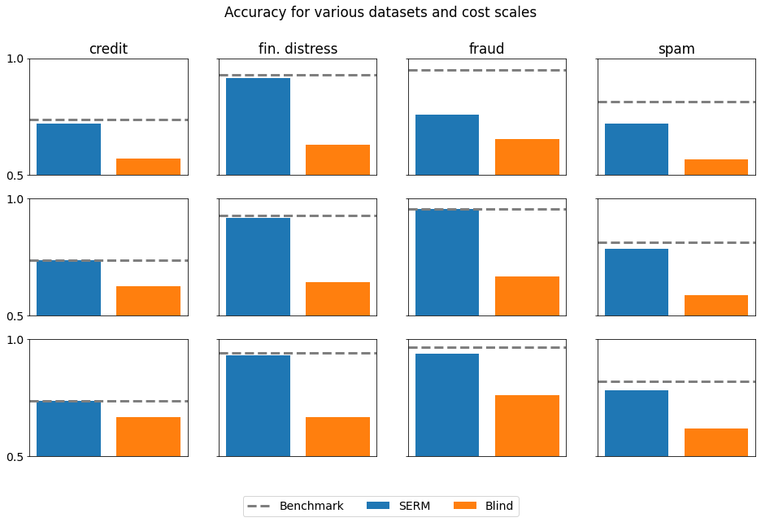

Vanilla¶
Imports and Definitions¶
[1]:
import os
import time
import torch
import pandas as pd
import matplotlib
import matplotlib.pyplot as plt
from lib.StrategicModel import StrategicModel
import DataGeneration as data
torch.set_default_dtype(torch.float64)
torch.manual_seed(0)
matplotlib.rc('font', size=14)
PATH = "./results/vanilla"
if not os.path.exists(PATH):
os.makedirs(PATH)
Data Loading¶
[2]:
training_datas = []
# credit dataset
X, Y = data.load_credit_default_data()
X, Y = X[:3000], Y[:3000]
X, Y, Xval, Yval, Xtest, Ytest = data.split_validation_test(X, Y)
training_datas.append({"X": X,
"Y": Y,
"Xval": Xval,
"Yval": Yval,
"Xtest": Xtest,
"Ytest": Ytest,
"epochs": 16,
"batch_size": 64,
"train_slope": 1,
"eval_slope": 5,
"name": "credit"})
# distress dataset
X, Y = data.load_financial_distress_data()
X, Y, Xval, Yval, Xtest, Ytest = data.split_validation_test(X, Y)
training_datas.append({"X": X,
"Y": Y,
"Xval": Xval,
"Yval": Yval,
"Xtest": Xtest,
"Ytest": Ytest,
"epochs": 16,
"batch_size": 24,
"train_slope": 1,
"eval_slope": 5,
"name": "distress"})
# fraud dataset
X, Y = data.load_card_fraud_data()
X, Y, Xval, Yval, Xtest, Ytest = data.split_validation_test(X, Y)
training_datas.append({"X": X,
"Y": Y,
"Xval": Xval,
"Yval": Yval,
"Xtest": Xtest,
"Ytest": Ytest,
"epochs": 16,
"batch_size": 24,
"train_slope": 1,
"eval_slope": 3,
"name": "fraud"})
# spam dataset
X, Y = data.load_spam_data()
X, Y, Xval, Yval, Xtest, Ytest = data.split_validation_test(X, Y)
training_datas.append({"X": X,
"Y": Y,
"Xval": Xval,
"Yval": Yval,
"Xtest": Xtest,
"Ytest": Ytest,
"epochs": 16,
"batch_size": 128,
"train_slope": 1,
"eval_slope": 5,
"name": "spam"})
Training¶
[3]:
scales = [0.5, 1, 2]
[4]:
init_time = time.time()
for training_data in training_datas:
# Load dataset
X = training_data["X"]
Y = training_data["Y"]
Xval = training_data["Xval"]
Yval = training_data["Yval"]
Xtest = training_data["Xtest"]
Ytest = training_data["Ytest"]
# Training parameters
x_dim = len(X[0])
epochs = training_data["epochs"]
batch_size = training_data["batch_size"]
train_slope = training_data["train_slope"]
eval_slope = training_data["eval_slope"]
# Training data name and results
name = training_data["name"]
results = {
"scales": [],
"benchmark": [],
"SERM": [],
"blind": []
}
for scale in scales:
# Non-strategic classification
print(f"---------- Training non-strategically on {name} with scale={scale} ----------")
model_name = f"{name}_{scale}_non_strategic"
non_strategic_model = StrategicModel(x_dim, batch_size, cost_fn="quad", cost_const_kwargs={"scale": scale}, train_slope=train_slope, eval_slope=eval_slope, strategic=False)
non_strategic_model.fit(X, Y, Xval, Yval, opt_class=torch.optim.Adam, opt_kwargs={"lr": 1e-1},
epochs=epochs, verbose="epochs", path=PATH, model_name=model_name)
non_strategic_model.normalize_parameters()
# Strategic classification
print(f"---------- Training strategically on {name} with scale={scale} ----------")
model_name = f"{name}_{scale}_strategic"
strategic_model = StrategicModel(x_dim, batch_size, cost_fn="quad", cost_const_kwargs={"scale": scale}, train_slope=train_slope, eval_slope=eval_slope, strategic=True)
strategic_model.fit(X, Y, Xval, Yval, opt_class=torch.optim.Adam, opt_kwargs={"lr": 5e-1},
epochs=epochs, verbose="batches", path=PATH, model_name=model_name)
# Calculate results
print("---------- Calculating results ----------")
results["scales"].append(scale)
# Non-strategic model & non-strategic data - Benchmark
benchmark_accuracy = non_strategic_model.evaluate(Xtest, Ytest, strategic_data=False)
print(f"Benchmark accuracy: {benchmark_accuracy}")
results["benchmark"].append(benchmark_accuracy)
# Strategic model & strategic data - SERM
SERM_accuracy = strategic_model.evaluate(Xtest, Ytest, strategic_data=True)
print(f"SERM accuracy: {SERM_accuracy}")
results["SERM"].append(SERM_accuracy)
# Non-strategic model & strategic data - Blind
blind_accuracy = non_strategic_model.evaluate(Xtest, Ytest, strategic_data=True)
print(f"Blind accuracy: {blind_accuracy}")
results["blind"].append(blind_accuracy)
# Save results
pd.DataFrame(results).to_csv(f"{PATH}/{name}_results.csv")
final_time = time.time()
total_time = final_time - init_time
print(f"Test took {total_time / 60} minutes ({total_time} seconds).")
---------- Training non-strategically on credit with scale=0.5 ----------
Starting epoch 001 / 016.
Ended epoch 001 / 016 | time: 000 sec | loss: 0.71456 | error: 0.32604
Model saved to ./results/vanilla/credit_0.5_non_strategic_model.pt.
Starting epoch 002 / 016.
Ended epoch 002 / 016 | time: 000 sec | loss: 0.68898 | error: 0.32760
Starting epoch 003 / 016.
Ended epoch 003 / 016 | time: 000 sec | loss: 0.68415 | error: 0.32917
Starting epoch 004 / 016.
Ended epoch 004 / 016 | time: 000 sec | loss: 0.69316 | error: 0.32760
Starting epoch 005 / 016.
Ended epoch 005 / 016 | time: 000 sec | loss: 0.68865 | error: 0.32917
Ending training due to 4 consecutive epochs without improvement in validation accuracy.
Total training time: 0.23337674140930176 seconds.
Model loaded from ./results/vanilla/credit_0.5_non_strategic_model.pt.
---------- Training strategically on credit with scale=0.5 ----------
Starting epoch 001 / 016.
Ended batch 001 / 029 | loss: 0.82353 | error: 0.39062
Ended batch 002 / 029 | loss: 1.43071 | error: 0.51562
Ended batch 003 / 029 | loss: 0.95340 | error: 0.39062
Ended batch 004 / 029 | loss: 1.10748 | error: 0.51562
Ended batch 005 / 029 | loss: 0.91926 | error: 0.50000
Ended batch 006 / 029 | loss: 0.83598 | error: 0.39062
Ended batch 007 / 029 | loss: 0.88446 | error: 0.35938
Ended batch 008 / 029 | loss: 0.97455 | error: 0.46875
Ended batch 009 / 029 | loss: 1.10624 | error: 0.53125
Ended batch 010 / 029 | loss: 1.06242 | error: 0.56250
Ended batch 011 / 029 | loss: 0.79893 | error: 0.40625
Ended batch 012 / 029 | loss: 0.79782 | error: 0.25000
Ended batch 013 / 029 | loss: 0.66777 | error: 0.29688
Ended batch 014 / 029 | loss: 0.75157 | error: 0.34375
Ended batch 015 / 029 | loss: 0.98006 | error: 0.43750
Ended batch 016 / 029 | loss: 0.88994 | error: 0.32812
Ended batch 017 / 029 | loss: 1.19924 | error: 0.43750
Ended batch 018 / 029 | loss: 0.70924 | error: 0.29688
Ended batch 019 / 029 | loss: 0.62814 | error: 0.25000
Ended batch 020 / 029 | loss: 1.00520 | error: 0.42188
Ended batch 021 / 029 | loss: 0.94775 | error: 0.39062
Ended batch 022 / 029 | loss: 0.88218 | error: 0.34375
Ended batch 023 / 029 | loss: 0.87164 | error: 0.32812
Ended batch 024 / 029 | loss: 0.70577 | error: 0.31250
Ended batch 025 / 029 | loss: 0.73123 | error: 0.39062
Ended batch 026 / 029 | loss: 1.04434 | error: 0.54688
Ended batch 027 / 029 | loss: 0.82697 | error: 0.42188
Ended batch 028 / 029 | loss: 0.91896 | error: 0.50000
Ended batch 029 / 029 | loss: 1.00100 | error: 0.50000
Finished training step, calculating validation loss and accuracy.
Ended epoch 001 / 016 | time: 020 sec | loss: 0.91165 | error: 0.38333
Model saved to ./results/vanilla/credit_0.5_strategic_model.pt.
Starting epoch 002 / 016.
Ended batch 001 / 029 | loss: 0.86897 | error: 0.25000
Ended batch 002 / 029 | loss: 0.79543 | error: 0.31250
Ended batch 003 / 029 | loss: 0.72117 | error: 0.34375
Ended batch 004 / 029 | loss: 0.89598 | error: 0.46875
Ended batch 005 / 029 | loss: 0.96220 | error: 0.48438
Ended batch 006 / 029 | loss: 0.82602 | error: 0.39062
Ended batch 007 / 029 | loss: 0.72622 | error: 0.37500
Ended batch 008 / 029 | loss: 0.86202 | error: 0.46875
Ended batch 009 / 029 | loss: 0.83141 | error: 0.39062
Ended batch 010 / 029 | loss: 0.66841 | error: 0.26562
Ended batch 011 / 029 | loss: 0.62173 | error: 0.21875
Ended batch 012 / 029 | loss: 0.65424 | error: 0.25000
Ended batch 013 / 029 | loss: 0.60577 | error: 0.29688
Ended batch 014 / 029 | loss: 0.82684 | error: 0.39062
Ended batch 015 / 029 | loss: 1.29031 | error: 0.57812
Ended batch 016 / 029 | loss: 0.85809 | error: 0.37500
Ended batch 017 / 029 | loss: 1.03587 | error: 0.48438
Ended batch 018 / 029 | loss: 0.71783 | error: 0.37500
Ended batch 019 / 029 | loss: 0.58488 | error: 0.21875
Ended batch 020 / 029 | loss: 0.80786 | error: 0.35938
Ended batch 021 / 029 | loss: 0.84319 | error: 0.34375
Ended batch 022 / 029 | loss: 0.84914 | error: 0.32812
Ended batch 023 / 029 | loss: 0.73193 | error: 0.35938
Ended batch 024 / 029 | loss: 0.84828 | error: 0.45312
Ended batch 025 / 029 | loss: 0.90896 | error: 0.48438
Ended batch 026 / 029 | loss: 1.08382 | error: 0.56250
Ended batch 027 / 029 | loss: 0.79193 | error: 0.35938
Ended batch 028 / 029 | loss: 0.78018 | error: 0.31250
Ended batch 029 / 029 | loss: 0.96378 | error: 0.50000
Finished training step, calculating validation loss and accuracy.
Ended epoch 002 / 016 | time: 019 sec | loss: 0.90556 | error: 0.36458
Validation accuracy improved.
Model saved to ./results/vanilla/credit_0.5_strategic_model.pt.
Starting epoch 003 / 016.
Ended batch 001 / 029 | loss: 0.80376 | error: 0.29688
Ended batch 002 / 029 | loss: 0.74165 | error: 0.32812
Ended batch 003 / 029 | loss: 0.66858 | error: 0.32812
Ended batch 004 / 029 | loss: 0.80679 | error: 0.42188
Ended batch 005 / 029 | loss: 0.93161 | error: 0.48438
Ended batch 006 / 029 | loss: 0.83681 | error: 0.40625
Ended batch 007 / 029 | loss: 0.75870 | error: 0.42188
Ended batch 008 / 029 | loss: 0.87972 | error: 0.48438
Ended batch 009 / 029 | loss: 0.84321 | error: 0.39062
Ended batch 010 / 029 | loss: 0.70889 | error: 0.29688
Ended batch 011 / 029 | loss: 0.69965 | error: 0.21875
Ended batch 012 / 029 | loss: 0.74125 | error: 0.32812
Ended batch 013 / 029 | loss: 0.67035 | error: 0.35938
Ended batch 014 / 029 | loss: 0.89086 | error: 0.42188
Ended batch 015 / 029 | loss: 1.30290 | error: 0.60938
Ended batch 016 / 029 | loss: 0.92990 | error: 0.43750
Ended batch 017 / 029 | loss: 1.07222 | error: 0.50000
Ended batch 018 / 029 | loss: 0.86697 | error: 0.45312
Ended batch 019 / 029 | loss: 0.64282 | error: 0.37500
Ended batch 020 / 029 | loss: 0.87037 | error: 0.34375
Ended batch 021 / 029 | loss: 0.84381 | error: 0.32812
Ended batch 022 / 029 | loss: 0.91221 | error: 0.34375
Ended batch 023 / 029 | loss: 0.77645 | error: 0.32812
Ended batch 024 / 029 | loss: 0.82219 | error: 0.40625
Ended batch 025 / 029 | loss: 1.10073 | error: 0.54688
Ended batch 026 / 029 | loss: 1.12333 | error: 0.54688
Ended batch 027 / 029 | loss: 0.84933 | error: 0.42188
Ended batch 028 / 029 | loss: 0.90550 | error: 0.46875
Ended batch 029 / 029 | loss: 0.92622 | error: 0.37500
Finished training step, calculating validation loss and accuracy.
Ended epoch 003 / 016 | time: 019 sec | loss: 1.08024 | error: 0.46563
Starting epoch 004 / 016.
Ended batch 001 / 029 | loss: 0.83746 | error: 0.32812
Ended batch 002 / 029 | loss: 0.92032 | error: 0.34375
Ended batch 003 / 029 | loss: 0.75149 | error: 0.32812
Ended batch 004 / 029 | loss: 0.85817 | error: 0.43750
Ended batch 005 / 029 | loss: 1.01458 | error: 0.50000
Ended batch 006 / 029 | loss: 0.91412 | error: 0.42188
Ended batch 007 / 029 | loss: 0.73400 | error: 0.35938
Ended batch 008 / 029 | loss: 0.83540 | error: 0.43750
Ended batch 009 / 029 | loss: 0.92820 | error: 0.46875
Ended batch 010 / 029 | loss: 0.68147 | error: 0.28125
Ended batch 011 / 029 | loss: 0.65082 | error: 0.21875
Ended batch 012 / 029 | loss: 0.63201 | error: 0.25000
Ended batch 013 / 029 | loss: 0.60953 | error: 0.29688
Ended batch 014 / 029 | loss: 0.76179 | error: 0.34375
Ended batch 015 / 029 | loss: 1.30007 | error: 0.56250
Ended batch 016 / 029 | loss: 0.83663 | error: 0.34375
Ended batch 017 / 029 | loss: 1.17293 | error: 0.50000
Ended batch 018 / 029 | loss: 0.93822 | error: 0.45312
Ended batch 019 / 029 | loss: 0.73701 | error: 0.39062
Ended batch 020 / 029 | loss: 0.92595 | error: 0.50000
Ended batch 021 / 029 | loss: 0.78906 | error: 0.34375
Ended batch 022 / 029 | loss: 0.88419 | error: 0.46875
Ended batch 023 / 029 | loss: 0.97033 | error: 0.45312
Ended batch 024 / 029 | loss: 0.85598 | error: 0.40625
Ended batch 025 / 029 | loss: 1.00455 | error: 0.56250
Ended batch 026 / 029 | loss: 1.08810 | error: 0.57812
Ended batch 027 / 029 | loss: 0.74421 | error: 0.34375
Ended batch 028 / 029 | loss: 0.82456 | error: 0.42188
Ended batch 029 / 029 | loss: 0.98755 | error: 0.50000
Finished training step, calculating validation loss and accuracy.
Ended epoch 004 / 016 | time: 019 sec | loss: 0.84148 | error: 0.34271
Validation accuracy improved.
Model saved to ./results/vanilla/credit_0.5_strategic_model.pt.
Starting epoch 005 / 016.
Ended batch 001 / 029 | loss: 0.73967 | error: 0.35938
Ended batch 002 / 029 | loss: 0.83071 | error: 0.42188
Ended batch 003 / 029 | loss: 0.68698 | error: 0.29688
Ended batch 004 / 029 | loss: 0.57896 | error: 0.31250
Ended batch 005 / 029 | loss: 0.73864 | error: 0.40625
Ended batch 006 / 029 | loss: 0.72788 | error: 0.34375
Ended batch 007 / 029 | loss: 0.69660 | error: 0.25000
Ended batch 008 / 029 | loss: 0.84416 | error: 0.43750
Ended batch 009 / 029 | loss: 0.92393 | error: 0.46875
Ended batch 010 / 029 | loss: 0.81439 | error: 0.43750
Ended batch 011 / 029 | loss: 0.60808 | error: 0.29688
Ended batch 012 / 029 | loss: 0.61609 | error: 0.26562
Ended batch 013 / 029 | loss: 0.65659 | error: 0.34375
Ended batch 014 / 029 | loss: 0.77905 | error: 0.40625
Ended batch 015 / 029 | loss: 1.10196 | error: 0.60938
Ended batch 016 / 029 | loss: 0.72065 | error: 0.34375
Ended batch 017 / 029 | loss: 0.91889 | error: 0.39062
Ended batch 018 / 029 | loss: 0.69291 | error: 0.29688
Ended batch 019 / 029 | loss: 0.63628 | error: 0.20312
Ended batch 020 / 029 | loss: 0.88658 | error: 0.35938
Ended batch 021 / 029 | loss: 0.75354 | error: 0.35938
Ended batch 022 / 029 | loss: 0.85216 | error: 0.39062
Ended batch 023 / 029 | loss: 0.68857 | error: 0.31250
Ended batch 024 / 029 | loss: 0.71747 | error: 0.39062
Ended batch 025 / 029 | loss: 0.75540 | error: 0.42188
Ended batch 026 / 029 | loss: 0.94294 | error: 0.50000
Ended batch 027 / 029 | loss: 0.73572 | error: 0.34375
Ended batch 028 / 029 | loss: 0.77616 | error: 0.32812
Ended batch 029 / 029 | loss: 0.95481 | error: 0.50000
Finished training step, calculating validation loss and accuracy.
Ended epoch 005 / 016 | time: 020 sec | loss: 0.86991 | error: 0.33698
Validation accuracy improved.
Model saved to ./results/vanilla/credit_0.5_strategic_model.pt.
Starting epoch 006 / 016.
Ended batch 001 / 029 | loss: 0.65489 | error: 0.29688
Ended batch 002 / 029 | loss: 0.80115 | error: 0.39062
Ended batch 003 / 029 | loss: 0.63080 | error: 0.31250
Ended batch 004 / 029 | loss: 0.78967 | error: 0.45312
Ended batch 005 / 029 | loss: 0.77236 | error: 0.46875
Ended batch 006 / 029 | loss: 0.76741 | error: 0.29688
Ended batch 007 / 029 | loss: 0.70432 | error: 0.28125
Ended batch 008 / 029 | loss: 0.87837 | error: 0.35938
Ended batch 009 / 029 | loss: 0.87640 | error: 0.46875
Ended batch 010 / 029 | loss: 0.76788 | error: 0.40625
Ended batch 011 / 029 | loss: 0.56642 | error: 0.21875
Ended batch 012 / 029 | loss: 0.64610 | error: 0.26562
Ended batch 013 / 029 | loss: 0.61504 | error: 0.29688
Ended batch 014 / 029 | loss: 0.74345 | error: 0.39062
Ended batch 015 / 029 | loss: 1.05801 | error: 0.56250
Ended batch 016 / 029 | loss: 0.71926 | error: 0.35938
Ended batch 017 / 029 | loss: 0.92306 | error: 0.42188
Ended batch 018 / 029 | loss: 0.66232 | error: 0.31250
Ended batch 019 / 029 | loss: 0.60066 | error: 0.18750
Ended batch 020 / 029 | loss: 0.89993 | error: 0.45312
Ended batch 021 / 029 | loss: 0.77360 | error: 0.34375
Ended batch 022 / 029 | loss: 0.89278 | error: 0.43750
Ended batch 023 / 029 | loss: 0.67578 | error: 0.31250
Ended batch 024 / 029 | loss: 0.73525 | error: 0.39062
Ended batch 025 / 029 | loss: 0.75695 | error: 0.42188
Ended batch 026 / 029 | loss: 0.88043 | error: 0.50000
Ended batch 027 / 029 | loss: 0.79035 | error: 0.32812
Ended batch 028 / 029 | loss: 0.81999 | error: 0.39062
Ended batch 029 / 029 | loss: 0.97519 | error: 0.50000
Finished training step, calculating validation loss and accuracy.
Ended epoch 006 / 016 | time: 021 sec | loss: 0.86171 | error: 0.34792
Starting epoch 007 / 016.
Ended batch 001 / 029 | loss: 0.74292 | error: 0.31250
Ended batch 002 / 029 | loss: 0.74452 | error: 0.34375
Ended batch 003 / 029 | loss: 0.65351 | error: 0.32812
Ended batch 004 / 029 | loss: 0.74788 | error: 0.43750
Ended batch 005 / 029 | loss: 0.78287 | error: 0.48438
Ended batch 006 / 029 | loss: 0.73100 | error: 0.32812
Ended batch 007 / 029 | loss: 0.69685 | error: 0.28125
Ended batch 008 / 029 | loss: 0.87134 | error: 0.35938
Ended batch 009 / 029 | loss: 0.87460 | error: 0.45312
Ended batch 010 / 029 | loss: 0.83181 | error: 0.39062
Ended batch 011 / 029 | loss: 0.60671 | error: 0.26562
Ended batch 012 / 029 | loss: 0.62928 | error: 0.25000
Ended batch 013 / 029 | loss: 0.63697 | error: 0.34375
Ended batch 014 / 029 | loss: 0.73457 | error: 0.37500
Ended batch 015 / 029 | loss: 1.04439 | error: 0.51562
Ended batch 016 / 029 | loss: 0.70089 | error: 0.32812
Ended batch 017 / 029 | loss: 0.93989 | error: 0.48438
Ended batch 018 / 029 | loss: 0.64580 | error: 0.28125
Ended batch 019 / 029 | loss: 0.60488 | error: 0.18750
Ended batch 020 / 029 | loss: 0.86620 | error: 0.40625
Ended batch 021 / 029 | loss: 0.72428 | error: 0.32812
Ended batch 022 / 029 | loss: 0.88325 | error: 0.43750
Ended batch 023 / 029 | loss: 0.65869 | error: 0.31250
Ended batch 024 / 029 | loss: 0.77649 | error: 0.42188
Ended batch 025 / 029 | loss: 0.81896 | error: 0.46875
Ended batch 026 / 029 | loss: 0.89982 | error: 0.43750
Ended batch 027 / 029 | loss: 0.80406 | error: 0.34375
Ended batch 028 / 029 | loss: 0.83743 | error: 0.29688
Ended batch 029 / 029 | loss: 0.98031 | error: 0.50000
Finished training step, calculating validation loss and accuracy.
Ended epoch 007 / 016 | time: 020 sec | loss: 0.88827 | error: 0.36927
Starting epoch 008 / 016.
Ended batch 001 / 029 | loss: 0.77830 | error: 0.28125
Ended batch 002 / 029 | loss: 0.77362 | error: 0.34375
Ended batch 003 / 029 | loss: 0.68453 | error: 0.35938
Ended batch 004 / 029 | loss: 0.80430 | error: 0.43750
Ended batch 005 / 029 | loss: 0.90026 | error: 0.51562
Ended batch 006 / 029 | loss: 0.70911 | error: 0.37500
Ended batch 007 / 029 | loss: 0.68705 | error: 0.28125
Ended batch 008 / 029 | loss: 0.86968 | error: 0.35938
Ended batch 009 / 029 | loss: 0.83138 | error: 0.39062
Ended batch 010 / 029 | loss: 0.70180 | error: 0.29688
Ended batch 011 / 029 | loss: 0.59738 | error: 0.21875
Ended batch 012 / 029 | loss: 0.67663 | error: 0.26562
Ended batch 013 / 029 | loss: 0.62656 | error: 0.32812
Ended batch 014 / 029 | loss: 0.70940 | error: 0.34375
Ended batch 015 / 029 | loss: 1.03086 | error: 0.53125
Ended batch 016 / 029 | loss: 0.74919 | error: 0.35938
Ended batch 017 / 029 | loss: 0.91840 | error: 0.39062
Ended batch 018 / 029 | loss: 0.71678 | error: 0.31250
Ended batch 019 / 029 | loss: 0.63567 | error: 0.20312
Ended batch 020 / 029 | loss: 0.91339 | error: 0.43750
Ended batch 021 / 029 | loss: 0.75207 | error: 0.32812
Ended batch 022 / 029 | loss: 0.90022 | error: 0.45312
Ended batch 023 / 029 | loss: 0.68036 | error: 0.34375
Ended batch 024 / 029 | loss: 0.75719 | error: 0.37500
Ended batch 025 / 029 | loss: 0.72357 | error: 0.37500
Ended batch 026 / 029 | loss: 0.86226 | error: 0.39062
Ended batch 027 / 029 | loss: 0.81423 | error: 0.34375
Ended batch 028 / 029 | loss: 0.81350 | error: 0.34375
Ended batch 029 / 029 | loss: 0.94395 | error: 0.50000
Finished training step, calculating validation loss and accuracy.
Ended epoch 008 / 016 | time: 020 sec | loss: 0.81318 | error: 0.32917
Validation accuracy improved.
Model saved to ./results/vanilla/credit_0.5_strategic_model.pt.
Starting epoch 009 / 016.
Ended batch 001 / 029 | loss: 0.72892 | error: 0.35938
Ended batch 002 / 029 | loss: 0.81018 | error: 0.40625
Ended batch 003 / 029 | loss: 0.62190 | error: 0.31250
Ended batch 004 / 029 | loss: 0.77700 | error: 0.46875
Ended batch 005 / 029 | loss: 0.75264 | error: 0.34375
Ended batch 006 / 029 | loss: 0.77248 | error: 0.28125
Ended batch 007 / 029 | loss: 0.72740 | error: 0.26562
Ended batch 008 / 029 | loss: 0.88778 | error: 0.39062
Ended batch 009 / 029 | loss: 0.93076 | error: 0.46875
Ended batch 010 / 029 | loss: 0.88197 | error: 0.50000
Ended batch 011 / 029 | loss: 0.63438 | error: 0.32812
Ended batch 012 / 029 | loss: 0.63922 | error: 0.25000
Ended batch 013 / 029 | loss: 0.64688 | error: 0.26562
Ended batch 014 / 029 | loss: 0.77051 | error: 0.35938
Ended batch 015 / 029 | loss: 1.14591 | error: 0.64062
Ended batch 016 / 029 | loss: 0.70239 | error: 0.34375
Ended batch 017 / 029 | loss: 0.92572 | error: 0.43750
Ended batch 018 / 029 | loss: 0.67910 | error: 0.31250
Ended batch 019 / 029 | loss: 0.62160 | error: 0.18750
Ended batch 020 / 029 | loss: 0.84127 | error: 0.39062
Ended batch 021 / 029 | loss: 0.78730 | error: 0.39062
Ended batch 022 / 029 | loss: 0.89772 | error: 0.40625
Ended batch 023 / 029 | loss: 0.66997 | error: 0.31250
Ended batch 024 / 029 | loss: 0.74517 | error: 0.40625
Ended batch 025 / 029 | loss: 0.75444 | error: 0.42188
Ended batch 026 / 029 | loss: 0.86535 | error: 0.43750
Ended batch 027 / 029 | loss: 0.80172 | error: 0.31250
Ended batch 028 / 029 | loss: 0.81268 | error: 0.34375
Ended batch 029 / 029 | loss: 0.99197 | error: 0.50000
Finished training step, calculating validation loss and accuracy.
Ended epoch 009 / 016 | time: 021 sec | loss: 0.84679 | error: 0.33854
Starting epoch 010 / 016.
Ended batch 001 / 029 | loss: 0.75399 | error: 0.28125
Ended batch 002 / 029 | loss: 0.73339 | error: 0.32812
Ended batch 003 / 029 | loss: 0.71078 | error: 0.35938
Ended batch 004 / 029 | loss: 0.82846 | error: 0.48438
Ended batch 005 / 029 | loss: 0.79829 | error: 0.48438
Ended batch 006 / 029 | loss: 0.72249 | error: 0.34375
Ended batch 007 / 029 | loss: 0.69505 | error: 0.28125
Ended batch 008 / 029 | loss: 0.86624 | error: 0.35938
Ended batch 009 / 029 | loss: 0.85827 | error: 0.42188
Ended batch 010 / 029 | loss: 0.76078 | error: 0.34375
Ended batch 011 / 029 | loss: 0.57974 | error: 0.21875
Ended batch 012 / 029 | loss: 0.66697 | error: 0.28125
Ended batch 013 / 029 | loss: 0.65049 | error: 0.34375
Ended batch 014 / 029 | loss: 0.69107 | error: 0.34375
Ended batch 015 / 029 | loss: 1.01741 | error: 0.50000
Ended batch 016 / 029 | loss: 0.78451 | error: 0.37500
Ended batch 017 / 029 | loss: 0.90384 | error: 0.45312
Ended batch 018 / 029 | loss: 0.64330 | error: 0.28125
Ended batch 019 / 029 | loss: 0.61288 | error: 0.20312
Ended batch 020 / 029 | loss: 0.89156 | error: 0.43750
Ended batch 021 / 029 | loss: 0.72501 | error: 0.34375
Ended batch 022 / 029 | loss: 0.85220 | error: 0.42188
Ended batch 023 / 029 | loss: 0.63245 | error: 0.31250
Ended batch 024 / 029 | loss: 0.80153 | error: 0.45312
Ended batch 025 / 029 | loss: 0.74932 | error: 0.42188
Ended batch 026 / 029 | loss: 0.91074 | error: 0.43750
Ended batch 027 / 029 | loss: 0.83276 | error: 0.32812
Ended batch 028 / 029 | loss: 0.83439 | error: 0.31250
Ended batch 029 / 029 | loss: 0.94971 | error: 0.62500
Finished training step, calculating validation loss and accuracy.
Ended epoch 010 / 016 | time: 020 sec | loss: 0.86686 | error: 0.35521
Starting epoch 011 / 016.
Ended batch 001 / 029 | loss: 0.76986 | error: 0.25000
Ended batch 002 / 029 | loss: 0.84334 | error: 0.45312
Ended batch 003 / 029 | loss: 0.68114 | error: 0.35938
Ended batch 004 / 029 | loss: 0.85838 | error: 0.48438
Ended batch 005 / 029 | loss: 0.86142 | error: 0.50000
Ended batch 006 / 029 | loss: 0.75239 | error: 0.35938
Ended batch 007 / 029 | loss: 0.69814 | error: 0.28125
Ended batch 008 / 029 | loss: 0.90171 | error: 0.37500
Ended batch 009 / 029 | loss: 0.85848 | error: 0.42188
Ended batch 010 / 029 | loss: 0.75743 | error: 0.37500
Ended batch 011 / 029 | loss: 0.58262 | error: 0.23438
Ended batch 012 / 029 | loss: 0.62792 | error: 0.28125
Ended batch 013 / 029 | loss: 0.61755 | error: 0.31250
Ended batch 014 / 029 | loss: 0.80063 | error: 0.40625
Ended batch 015 / 029 | loss: 0.98681 | error: 0.50000
Ended batch 016 / 029 | loss: 0.70898 | error: 0.34375
Ended batch 017 / 029 | loss: 0.89980 | error: 0.35938
Ended batch 018 / 029 | loss: 0.69121 | error: 0.31250
Ended batch 019 / 029 | loss: 0.60287 | error: 0.18750
Ended batch 020 / 029 | loss: 0.90467 | error: 0.48438
Ended batch 021 / 029 | loss: 0.80694 | error: 0.37500
Ended batch 022 / 029 | loss: 0.89449 | error: 0.45312
Ended batch 023 / 029 | loss: 0.67934 | error: 0.32812
Ended batch 024 / 029 | loss: 0.72693 | error: 0.37500
Ended batch 025 / 029 | loss: 0.75164 | error: 0.39062
Ended batch 026 / 029 | loss: 0.91753 | error: 0.45312
Ended batch 027 / 029 | loss: 0.78437 | error: 0.31250
Ended batch 028 / 029 | loss: 0.81545 | error: 0.34375
Ended batch 029 / 029 | loss: 0.97936 | error: 0.50000
Finished training step, calculating validation loss and accuracy.
Ended epoch 011 / 016 | time: 020 sec | loss: 0.85396 | error: 0.35833
Starting epoch 012 / 016.
Ended batch 001 / 029 | loss: 0.75359 | error: 0.29688
Ended batch 002 / 029 | loss: 0.74417 | error: 0.32812
Ended batch 003 / 029 | loss: 0.63058 | error: 0.31250
Ended batch 004 / 029 | loss: 0.82614 | error: 0.46875
Ended batch 005 / 029 | loss: 0.81411 | error: 0.46875
Ended batch 006 / 029 | loss: 0.73603 | error: 0.39062
Ended batch 007 / 029 | loss: 0.68491 | error: 0.28125
Ended batch 008 / 029 | loss: 0.84483 | error: 0.34375
Ended batch 009 / 029 | loss: 0.87031 | error: 0.39062
Ended batch 010 / 029 | loss: 0.75132 | error: 0.31250
Ended batch 011 / 029 | loss: 0.57574 | error: 0.21875
Ended batch 012 / 029 | loss: 0.62264 | error: 0.28125
Ended batch 013 / 029 | loss: 0.66575 | error: 0.34375
Ended batch 014 / 029 | loss: 0.82037 | error: 0.39062
Ended batch 015 / 029 | loss: 1.17082 | error: 0.57812
Ended batch 016 / 029 | loss: 0.77596 | error: 0.37500
Ended batch 017 / 029 | loss: 0.97392 | error: 0.48438
Ended batch 018 / 029 | loss: 0.66962 | error: 0.29688
Ended batch 019 / 029 | loss: 0.60549 | error: 0.18750
Ended batch 020 / 029 | loss: 0.83663 | error: 0.35938
Ended batch 021 / 029 | loss: 0.76229 | error: 0.34375
Ended batch 022 / 029 | loss: 0.88350 | error: 0.39062
Ended batch 023 / 029 | loss: 0.70383 | error: 0.34375
Ended batch 024 / 029 | loss: 0.75782 | error: 0.40625
Ended batch 025 / 029 | loss: 0.89364 | error: 0.50000
Ended batch 026 / 029 | loss: 0.96347 | error: 0.53125
Ended batch 027 / 029 | loss: 0.78225 | error: 0.32812
Ended batch 028 / 029 | loss: 0.81392 | error: 0.31250
Ended batch 029 / 029 | loss: 0.94394 | error: 0.50000
Finished training step, calculating validation loss and accuracy.
Ended epoch 012 / 016 | time: 020 sec | loss: 0.88397 | error: 0.34792
Ending training due to 4 consecutive epochs without improvement in validation accuracy.
Total training time: 3.9798773566881818 minutes (238.7926414012909 seconds).
Model loaded from ./results/vanilla/credit_0.5_strategic_model.pt.
---------- Calculating results ----------
Benchmark accuracy: 0.7383333333333333
SERM accuracy: 0.72
Blind accuracy: 0.57
---------- Training non-strategically on credit with scale=1 ----------
Starting epoch 001 / 016.
Ended epoch 001 / 016 | time: 000 sec | loss: 0.73337 | error: 0.32344
Model saved to ./results/vanilla/credit_1_non_strategic_model.pt.
Starting epoch 002 / 016.
Ended epoch 002 / 016 | time: 000 sec | loss: 0.69035 | error: 0.32760
Starting epoch 003 / 016.
Ended epoch 003 / 016 | time: 000 sec | loss: 0.68178 | error: 0.32760
Starting epoch 004 / 016.
Ended epoch 004 / 016 | time: 000 sec | loss: 0.68823 | error: 0.32760
Starting epoch 005 / 016.
Ended epoch 005 / 016 | time: 000 sec | loss: 0.68638 | error: 0.32917
Ending training due to 4 consecutive epochs without improvement in validation accuracy.
Total training time: 0.21741867065429688 seconds.
Model loaded from ./results/vanilla/credit_1_non_strategic_model.pt.
---------- Training strategically on credit with scale=1 ----------
Starting epoch 001 / 016.
Ended batch 001 / 029 | loss: 1.16206 | error: 0.60938
Ended batch 002 / 029 | loss: 0.96955 | error: 0.46875
Ended batch 003 / 029 | loss: 0.72326 | error: 0.37500
Ended batch 004 / 029 | loss: 0.78711 | error: 0.42188
Ended batch 005 / 029 | loss: 0.71014 | error: 0.40625
Ended batch 006 / 029 | loss: 0.74819 | error: 0.31250
Ended batch 007 / 029 | loss: 0.69484 | error: 0.28125
Ended batch 008 / 029 | loss: 0.94648 | error: 0.50000
Ended batch 009 / 029 | loss: 0.84829 | error: 0.40625
Ended batch 010 / 029 | loss: 0.61454 | error: 0.31250
Ended batch 011 / 029 | loss: 0.50766 | error: 0.20312
Ended batch 012 / 029 | loss: 0.55585 | error: 0.25000
Ended batch 013 / 029 | loss: 0.62701 | error: 0.29688
Ended batch 014 / 029 | loss: 0.75853 | error: 0.35938
Ended batch 015 / 029 | loss: 0.88400 | error: 0.45312
Ended batch 016 / 029 | loss: 0.79467 | error: 0.32812
Ended batch 017 / 029 | loss: 0.85135 | error: 0.37500
Ended batch 018 / 029 | loss: 0.71056 | error: 0.29688
Ended batch 019 / 029 | loss: 0.54569 | error: 0.18750
Ended batch 020 / 029 | loss: 0.89339 | error: 0.40625
Ended batch 021 / 029 | loss: 0.77643 | error: 0.35938
Ended batch 022 / 029 | loss: 0.83193 | error: 0.34375
Ended batch 023 / 029 | loss: 0.65612 | error: 0.28125
Ended batch 024 / 029 | loss: 0.68537 | error: 0.37500
Ended batch 025 / 029 | loss: 0.68841 | error: 0.34375
Ended batch 026 / 029 | loss: 0.87161 | error: 0.45312
Ended batch 027 / 029 | loss: 0.76321 | error: 0.32812
Ended batch 028 / 029 | loss: 0.78639 | error: 0.31250
Ended batch 029 / 029 | loss: 1.01567 | error: 0.50000
Finished training step, calculating validation loss and accuracy.
Ended epoch 001 / 016 | time: 019 sec | loss: 0.83065 | error: 0.32760
Model saved to ./results/vanilla/credit_1_strategic_model.pt.
Starting epoch 002 / 016.
Ended batch 001 / 029 | loss: 0.69752 | error: 0.25000
Ended batch 002 / 029 | loss: 0.71871 | error: 0.32812
Ended batch 003 / 029 | loss: 0.63157 | error: 0.28125
Ended batch 004 / 029 | loss: 0.72084 | error: 0.39062
Ended batch 005 / 029 | loss: 0.77021 | error: 0.43750
Ended batch 006 / 029 | loss: 0.74758 | error: 0.34375
Ended batch 007 / 029 | loss: 0.66614 | error: 0.25000
Ended batch 008 / 029 | loss: 0.80742 | error: 0.35938
Ended batch 009 / 029 | loss: 0.83917 | error: 0.39062
Ended batch 010 / 029 | loss: 0.66067 | error: 0.28125
Ended batch 011 / 029 | loss: 0.61433 | error: 0.21875
Ended batch 012 / 029 | loss: 0.65189 | error: 0.23438
Ended batch 013 / 029 | loss: 0.62303 | error: 0.34375
Ended batch 014 / 029 | loss: 0.72089 | error: 0.35938
Ended batch 015 / 029 | loss: 1.16914 | error: 0.56250
Ended batch 016 / 029 | loss: 0.84630 | error: 0.37500
Ended batch 017 / 029 | loss: 1.03122 | error: 0.50000
Ended batch 018 / 029 | loss: 0.85141 | error: 0.40625
Ended batch 019 / 029 | loss: 0.55407 | error: 0.20312
Ended batch 020 / 029 | loss: 0.77463 | error: 0.34375
Ended batch 021 / 029 | loss: 0.84094 | error: 0.34375
Ended batch 022 / 029 | loss: 0.87293 | error: 0.34375
Ended batch 023 / 029 | loss: 0.81420 | error: 0.34375
Ended batch 024 / 029 | loss: 0.70377 | error: 0.31250
Ended batch 025 / 029 | loss: 0.87143 | error: 0.51562
Ended batch 026 / 029 | loss: 1.05439 | error: 0.54688
Ended batch 027 / 029 | loss: 0.74882 | error: 0.37500
Ended batch 028 / 029 | loss: 0.75548 | error: 0.37500
Ended batch 029 / 029 | loss: 1.00602 | error: 0.50000
Finished training step, calculating validation loss and accuracy.
Ended epoch 002 / 016 | time: 019 sec | loss: 0.85881 | error: 0.34167
Starting epoch 003 / 016.
Ended batch 001 / 029 | loss: 0.79359 | error: 0.29688
Ended batch 002 / 029 | loss: 0.75040 | error: 0.32812
Ended batch 003 / 029 | loss: 0.69289 | error: 0.29688
Ended batch 004 / 029 | loss: 0.67567 | error: 0.35938
Ended batch 005 / 029 | loss: 0.82638 | error: 0.46875
Ended batch 006 / 029 | loss: 0.78324 | error: 0.34375
Ended batch 007 / 029 | loss: 0.61520 | error: 0.29688
Ended batch 008 / 029 | loss: 0.77669 | error: 0.34375
Ended batch 009 / 029 | loss: 0.84888 | error: 0.39062
Ended batch 010 / 029 | loss: 0.69613 | error: 0.31250
Ended batch 011 / 029 | loss: 0.63528 | error: 0.21875
Ended batch 012 / 029 | loss: 0.65121 | error: 0.25000
Ended batch 013 / 029 | loss: 0.64693 | error: 0.28125
Ended batch 014 / 029 | loss: 0.77885 | error: 0.39062
Ended batch 015 / 029 | loss: 1.20652 | error: 0.59375
Ended batch 016 / 029 | loss: 0.81647 | error: 0.35938
Ended batch 017 / 029 | loss: 1.07733 | error: 0.51562
Ended batch 018 / 029 | loss: 0.69457 | error: 0.32812
Ended batch 019 / 029 | loss: 0.53887 | error: 0.23438
Ended batch 020 / 029 | loss: 0.79186 | error: 0.35938
Ended batch 021 / 029 | loss: 0.82258 | error: 0.34375
Ended batch 022 / 029 | loss: 0.85760 | error: 0.34375
Ended batch 023 / 029 | loss: 0.82987 | error: 0.32812
Ended batch 024 / 029 | loss: 0.68679 | error: 0.26562
Ended batch 025 / 029 | loss: 0.77415 | error: 0.42188
Ended batch 026 / 029 | loss: 1.02986 | error: 0.51562
Ended batch 027 / 029 | loss: 0.77870 | error: 0.37500
Ended batch 028 / 029 | loss: 0.73736 | error: 0.39062
Ended batch 029 / 029 | loss: 0.96218 | error: 0.50000
Finished training step, calculating validation loss and accuracy.
Ended epoch 003 / 016 | time: 018 sec | loss: 0.81958 | error: 0.33385
Starting epoch 004 / 016.
Ended batch 001 / 029 | loss: 0.74565 | error: 0.25000
Ended batch 002 / 029 | loss: 0.74033 | error: 0.34375
Ended batch 003 / 029 | loss: 0.65932 | error: 0.28125
Ended batch 004 / 029 | loss: 0.61754 | error: 0.29688
Ended batch 005 / 029 | loss: 0.75099 | error: 0.40625
Ended batch 006 / 029 | loss: 0.73005 | error: 0.35938
Ended batch 007 / 029 | loss: 0.65533 | error: 0.26562
Ended batch 008 / 029 | loss: 0.81818 | error: 0.35938
Ended batch 009 / 029 | loss: 0.83810 | error: 0.39062
Ended batch 010 / 029 | loss: 0.67794 | error: 0.28125
Ended batch 011 / 029 | loss: 0.60359 | error: 0.21875
Ended batch 012 / 029 | loss: 0.66106 | error: 0.25000
Ended batch 013 / 029 | loss: 0.64427 | error: 0.29688
Ended batch 014 / 029 | loss: 0.81033 | error: 0.40625
Ended batch 015 / 029 | loss: 1.05020 | error: 0.53125
Ended batch 016 / 029 | loss: 0.76429 | error: 0.35938
Ended batch 017 / 029 | loss: 1.00994 | error: 0.51562
Ended batch 018 / 029 | loss: 0.67215 | error: 0.28125
Ended batch 019 / 029 | loss: 0.54317 | error: 0.18750
Ended batch 020 / 029 | loss: 0.77986 | error: 0.35938
Ended batch 021 / 029 | loss: 0.79133 | error: 0.34375
Ended batch 022 / 029 | loss: 0.82596 | error: 0.34375
Ended batch 023 / 029 | loss: 0.71670 | error: 0.34375
Ended batch 024 / 029 | loss: 0.67573 | error: 0.34375
Ended batch 025 / 029 | loss: 0.74360 | error: 0.39062
Ended batch 026 / 029 | loss: 0.91275 | error: 0.45312
Ended batch 027 / 029 | loss: 0.75174 | error: 0.32812
Ended batch 028 / 029 | loss: 0.76608 | error: 0.31250
Ended batch 029 / 029 | loss: 0.96732 | error: 0.50000
Finished training step, calculating validation loss and accuracy.
Ended epoch 004 / 016 | time: 018 sec | loss: 0.83885 | error: 0.33385
Starting epoch 005 / 016.
Ended batch 001 / 029 | loss: 0.76124 | error: 0.25000
Ended batch 002 / 029 | loss: 0.73439 | error: 0.34375
Ended batch 003 / 029 | loss: 0.64292 | error: 0.28125
Ended batch 004 / 029 | loss: 0.73784 | error: 0.35938
Ended batch 005 / 029 | loss: 0.83786 | error: 0.50000
Ended batch 006 / 029 | loss: 0.77083 | error: 0.37500
Ended batch 007 / 029 | loss: 0.63197 | error: 0.26562
Ended batch 008 / 029 | loss: 0.82752 | error: 0.35938
Ended batch 009 / 029 | loss: 0.84848 | error: 0.39062
Ended batch 010 / 029 | loss: 0.67247 | error: 0.29688
Ended batch 011 / 029 | loss: 0.62343 | error: 0.21875
Ended batch 012 / 029 | loss: 0.68692 | error: 0.28125
Ended batch 013 / 029 | loss: 0.62539 | error: 0.26562
Ended batch 014 / 029 | loss: 0.82274 | error: 0.42188
Ended batch 015 / 029 | loss: 1.08580 | error: 0.51562
Ended batch 016 / 029 | loss: 0.82398 | error: 0.37500
Ended batch 017 / 029 | loss: 1.05276 | error: 0.50000
Ended batch 018 / 029 | loss: 0.73841 | error: 0.37500
Ended batch 019 / 029 | loss: 0.54933 | error: 0.25000
Ended batch 020 / 029 | loss: 0.81381 | error: 0.35938
Ended batch 021 / 029 | loss: 0.83618 | error: 0.34375
Ended batch 022 / 029 | loss: 0.85676 | error: 0.34375
Ended batch 023 / 029 | loss: 0.84610 | error: 0.34375
Ended batch 024 / 029 | loss: 0.68355 | error: 0.26562
Ended batch 025 / 029 | loss: 0.75739 | error: 0.40625
Ended batch 026 / 029 | loss: 0.96479 | error: 0.50000
Ended batch 027 / 029 | loss: 0.77917 | error: 0.34375
Ended batch 028 / 029 | loss: 0.77705 | error: 0.37500
Ended batch 029 / 029 | loss: 0.93460 | error: 0.50000
Finished training step, calculating validation loss and accuracy.
Ended epoch 005 / 016 | time: 018 sec | loss: 0.82362 | error: 0.33542
Ending training due to 4 consecutive epochs without improvement in validation accuracy.
Total training time: 1.5505198558171591 minutes (93.03119134902954 seconds).
Model loaded from ./results/vanilla/credit_1_strategic_model.pt.
---------- Calculating results ----------
Benchmark accuracy: 0.7366666666666667
SERM accuracy: 0.7366666666666667
Blind accuracy: 0.625
---------- Training non-strategically on credit with scale=2 ----------
Starting epoch 001 / 016.
Ended epoch 001 / 016 | time: 000 sec | loss: 0.71148 | error: 0.32760
Model saved to ./results/vanilla/credit_2_non_strategic_model.pt.
Starting epoch 002 / 016.
Ended epoch 002 / 016 | time: 000 sec | loss: 0.69422 | error: 0.32760
Starting epoch 003 / 016.
Ended epoch 003 / 016 | time: 000 sec | loss: 0.68551 | error: 0.32760
Starting epoch 004 / 016.
Ended epoch 004 / 016 | time: 000 sec | loss: 0.68250 | error: 0.32760
Starting epoch 005 / 016.
Ended epoch 005 / 016 | time: 000 sec | loss: 0.69233 | error: 0.32760
Ending training due to 4 consecutive epochs without improvement in validation accuracy.
Total training time: 0.22041082382202148 seconds.
Model loaded from ./results/vanilla/credit_2_non_strategic_model.pt.
---------- Training strategically on credit with scale=2 ----------
Starting epoch 001 / 016.
Ended batch 001 / 029 | loss: 0.84934 | error: 0.39062
Ended batch 002 / 029 | loss: 1.25194 | error: 0.51562
Ended batch 003 / 029 | loss: 0.83138 | error: 0.39062
Ended batch 004 / 029 | loss: 0.92830 | error: 0.46875
Ended batch 005 / 029 | loss: 0.73580 | error: 0.42188
Ended batch 006 / 029 | loss: 0.73793 | error: 0.35938
Ended batch 007 / 029 | loss: 0.58563 | error: 0.20312
Ended batch 008 / 029 | loss: 0.87357 | error: 0.37500
Ended batch 009 / 029 | loss: 0.92648 | error: 0.43750
Ended batch 010 / 029 | loss: 0.73137 | error: 0.29688
Ended batch 011 / 029 | loss: 0.58157 | error: 0.21875
Ended batch 012 / 029 | loss: 0.74915 | error: 0.26562
Ended batch 013 / 029 | loss: 0.68347 | error: 0.29688
Ended batch 014 / 029 | loss: 0.91849 | error: 0.34375
Ended batch 015 / 029 | loss: 1.00960 | error: 0.45312
Ended batch 016 / 029 | loss: 0.86134 | error: 0.34375
Ended batch 017 / 029 | loss: 1.05115 | error: 0.45312
Ended batch 018 / 029 | loss: 0.80673 | error: 0.40625
Ended batch 019 / 029 | loss: 0.52948 | error: 0.21875
Ended batch 020 / 029 | loss: 0.81919 | error: 0.35938
Ended batch 021 / 029 | loss: 0.80524 | error: 0.34375
Ended batch 022 / 029 | loss: 0.83925 | error: 0.34375
Ended batch 023 / 029 | loss: 0.76349 | error: 0.32812
Ended batch 024 / 029 | loss: 0.67427 | error: 0.29688
Ended batch 025 / 029 | loss: 0.71609 | error: 0.32812
Ended batch 026 / 029 | loss: 0.88494 | error: 0.43750
Ended batch 027 / 029 | loss: 0.74765 | error: 0.37500
Ended batch 028 / 029 | loss: 0.78802 | error: 0.37500
Ended batch 029 / 029 | loss: 0.94412 | error: 0.50000
Finished training step, calculating validation loss and accuracy.
Ended epoch 001 / 016 | time: 018 sec | loss: 0.82093 | error: 0.32760
Model saved to ./results/vanilla/credit_2_strategic_model.pt.
Starting epoch 002 / 016.
Ended batch 001 / 029 | loss: 0.68039 | error: 0.28125
Ended batch 002 / 029 | loss: 0.73209 | error: 0.31250
Ended batch 003 / 029 | loss: 0.66425 | error: 0.31250
Ended batch 004 / 029 | loss: 0.58207 | error: 0.26562
Ended batch 005 / 029 | loss: 0.57798 | error: 0.25000
Ended batch 006 / 029 | loss: 0.73482 | error: 0.31250
Ended batch 007 / 029 | loss: 0.61721 | error: 0.28125
Ended batch 008 / 029 | loss: 0.78883 | error: 0.35938
Ended batch 009 / 029 | loss: 0.84305 | error: 0.39062
Ended batch 010 / 029 | loss: 0.63549 | error: 0.29688
Ended batch 011 / 029 | loss: 0.52932 | error: 0.21875
Ended batch 012 / 029 | loss: 0.67238 | error: 0.26562
Ended batch 013 / 029 | loss: 0.55854 | error: 0.25000
Ended batch 014 / 029 | loss: 0.74193 | error: 0.34375
Ended batch 015 / 029 | loss: 0.91433 | error: 0.39062
Ended batch 016 / 029 | loss: 0.71853 | error: 0.32812
Ended batch 017 / 029 | loss: 0.87605 | error: 0.40625
Ended batch 018 / 029 | loss: 0.64908 | error: 0.31250
Ended batch 019 / 029 | loss: 0.52399 | error: 0.18750
Ended batch 020 / 029 | loss: 0.79178 | error: 0.35938
Ended batch 021 / 029 | loss: 0.72668 | error: 0.34375
Ended batch 022 / 029 | loss: 0.81555 | error: 0.34375
Ended batch 023 / 029 | loss: 0.68044 | error: 0.32812
Ended batch 024 / 029 | loss: 0.62338 | error: 0.26562
Ended batch 025 / 029 | loss: 0.63355 | error: 0.29688
Ended batch 026 / 029 | loss: 0.90042 | error: 0.42188
Ended batch 027 / 029 | loss: 0.74486 | error: 0.32812
Ended batch 028 / 029 | loss: 0.75693 | error: 0.29688
Ended batch 029 / 029 | loss: 0.98190 | error: 0.50000
Finished training step, calculating validation loss and accuracy.
Ended epoch 002 / 016 | time: 017 sec | loss: 0.83291 | error: 0.33698
Starting epoch 003 / 016.
Ended batch 001 / 029 | loss: 0.77666 | error: 0.25000
Ended batch 002 / 029 | loss: 0.75159 | error: 0.32812
Ended batch 003 / 029 | loss: 0.69210 | error: 0.29688
Ended batch 004 / 029 | loss: 0.62801 | error: 0.26562
Ended batch 005 / 029 | loss: 0.69314 | error: 0.32812
Ended batch 006 / 029 | loss: 0.73688 | error: 0.35938
Ended batch 007 / 029 | loss: 0.60805 | error: 0.25000
Ended batch 008 / 029 | loss: 0.78470 | error: 0.35938
Ended batch 009 / 029 | loss: 0.89381 | error: 0.37500
Ended batch 010 / 029 | loss: 0.64099 | error: 0.29688
Ended batch 011 / 029 | loss: 0.56504 | error: 0.21875
Ended batch 012 / 029 | loss: 0.68652 | error: 0.26562
Ended batch 013 / 029 | loss: 0.61453 | error: 0.25000
Ended batch 014 / 029 | loss: 0.73200 | error: 0.29688
Ended batch 015 / 029 | loss: 0.98579 | error: 0.39062
Ended batch 016 / 029 | loss: 0.77359 | error: 0.29688
Ended batch 017 / 029 | loss: 0.96831 | error: 0.40625
Ended batch 018 / 029 | loss: 0.67138 | error: 0.29688
Ended batch 019 / 029 | loss: 0.49204 | error: 0.21875
Ended batch 020 / 029 | loss: 0.81706 | error: 0.35938
Ended batch 021 / 029 | loss: 0.80920 | error: 0.34375
Ended batch 022 / 029 | loss: 0.82353 | error: 0.34375
Ended batch 023 / 029 | loss: 0.78284 | error: 0.32812
Ended batch 024 / 029 | loss: 0.60351 | error: 0.26562
Ended batch 025 / 029 | loss: 0.63976 | error: 0.31250
Ended batch 026 / 029 | loss: 0.97797 | error: 0.46875
Ended batch 027 / 029 | loss: 0.75249 | error: 0.32812
Ended batch 028 / 029 | loss: 0.74539 | error: 0.34375
Ended batch 029 / 029 | loss: 0.97785 | error: 0.50000
Finished training step, calculating validation loss and accuracy.
Ended epoch 003 / 016 | time: 017 sec | loss: 0.84550 | error: 0.33906
Starting epoch 004 / 016.
Ended batch 001 / 029 | loss: 0.80387 | error: 0.35938
Ended batch 002 / 029 | loss: 0.75097 | error: 0.31250
Ended batch 003 / 029 | loss: 0.73541 | error: 0.28125
Ended batch 004 / 029 | loss: 0.63563 | error: 0.32812
Ended batch 005 / 029 | loss: 0.66699 | error: 0.28125
Ended batch 006 / 029 | loss: 0.72434 | error: 0.26562
Ended batch 007 / 029 | loss: 0.63826 | error: 0.25000
Ended batch 008 / 029 | loss: 0.82065 | error: 0.35938
Ended batch 009 / 029 | loss: 0.89624 | error: 0.34375
Ended batch 010 / 029 | loss: 0.62974 | error: 0.26562
Ended batch 011 / 029 | loss: 0.53431 | error: 0.20312
Ended batch 012 / 029 | loss: 0.62489 | error: 0.23438
Ended batch 013 / 029 | loss: 0.61691 | error: 0.25000
Ended batch 014 / 029 | loss: 0.72242 | error: 0.32812
Ended batch 015 / 029 | loss: 0.96305 | error: 0.40625
Ended batch 016 / 029 | loss: 0.76729 | error: 0.32812
Ended batch 017 / 029 | loss: 0.92334 | error: 0.43750
Ended batch 018 / 029 | loss: 0.67586 | error: 0.28125
Ended batch 019 / 029 | loss: 0.53529 | error: 0.20312
Ended batch 020 / 029 | loss: 0.79882 | error: 0.35938
Ended batch 021 / 029 | loss: 0.81333 | error: 0.35938
Ended batch 022 / 029 | loss: 0.77936 | error: 0.34375
Ended batch 023 / 029 | loss: 0.67941 | error: 0.32812
Ended batch 024 / 029 | loss: 0.63259 | error: 0.26562
Ended batch 025 / 029 | loss: 0.64649 | error: 0.29688
Ended batch 026 / 029 | loss: 0.94857 | error: 0.43750
Ended batch 027 / 029 | loss: 0.70223 | error: 0.32812
Ended batch 028 / 029 | loss: 0.69917 | error: 0.31250
Ended batch 029 / 029 | loss: 0.99430 | error: 0.50000
Finished training step, calculating validation loss and accuracy.
Ended epoch 004 / 016 | time: 016 sec | loss: 0.81851 | error: 0.32917
Starting epoch 005 / 016.
Ended batch 001 / 029 | loss: 0.71532 | error: 0.25000
Ended batch 002 / 029 | loss: 0.74633 | error: 0.32812
Ended batch 003 / 029 | loss: 0.70542 | error: 0.31250
Ended batch 004 / 029 | loss: 0.63174 | error: 0.26562
Ended batch 005 / 029 | loss: 0.68449 | error: 0.29688
Ended batch 006 / 029 | loss: 0.73932 | error: 0.29688
Ended batch 007 / 029 | loss: 0.60626 | error: 0.21875
Ended batch 008 / 029 | loss: 0.80730 | error: 0.35938
Ended batch 009 / 029 | loss: 0.88233 | error: 0.37500
Ended batch 010 / 029 | loss: 0.63576 | error: 0.28125
Ended batch 011 / 029 | loss: 0.54421 | error: 0.20312
Ended batch 012 / 029 | loss: 0.65373 | error: 0.23438
Ended batch 013 / 029 | loss: 0.61195 | error: 0.25000
Ended batch 014 / 029 | loss: 0.73811 | error: 0.31250
Ended batch 015 / 029 | loss: 0.91913 | error: 0.37500
Ended batch 016 / 029 | loss: 0.72902 | error: 0.29688
Ended batch 017 / 029 | loss: 0.90910 | error: 0.40625
Ended batch 018 / 029 | loss: 0.66331 | error: 0.28125
Ended batch 019 / 029 | loss: 0.50751 | error: 0.20312
Ended batch 020 / 029 | loss: 0.80635 | error: 0.34375
Ended batch 021 / 029 | loss: 0.80094 | error: 0.35938
Ended batch 022 / 029 | loss: 0.77488 | error: 0.34375
Ended batch 023 / 029 | loss: 0.70550 | error: 0.32812
Ended batch 024 / 029 | loss: 0.60815 | error: 0.26562
Ended batch 025 / 029 | loss: 0.61491 | error: 0.28125
Ended batch 026 / 029 | loss: 0.92577 | error: 0.43750
Ended batch 027 / 029 | loss: 0.71222 | error: 0.31250
Ended batch 028 / 029 | loss: 0.71451 | error: 0.31250
Ended batch 029 / 029 | loss: 1.00991 | error: 0.50000
Finished training step, calculating validation loss and accuracy.
Ended epoch 005 / 016 | time: 016 sec | loss: 0.82093 | error: 0.33542
Ending training due to 4 consecutive epochs without improvement in validation accuracy.
Total training time: 1.3979616522789002 minutes (83.87769913673401 seconds).
Model loaded from ./results/vanilla/credit_2_strategic_model.pt.
---------- Calculating results ----------
Benchmark accuracy: 0.7366666666666667
SERM accuracy: 0.735
Blind accuracy: 0.665
---------- Training non-strategically on distress with scale=0.5 ----------
Starting epoch 001 / 016.
Ended epoch 001 / 016 | time: 000 sec | loss: 0.11585 | error: 0.04167
Model saved to ./results/vanilla/distress_0.5_non_strategic_model.pt.
Starting epoch 002 / 016.
Ended epoch 002 / 016 | time: 000 sec | loss: 0.11396 | error: 0.04167
Starting epoch 003 / 016.
Ended epoch 003 / 016 | time: 000 sec | loss: 0.11974 | error: 0.04167
Starting epoch 004 / 016.
Ended epoch 004 / 016 | time: 000 sec | loss: 0.12476 | error: 0.04167
Validation accuracy improved.
Model saved to ./results/vanilla/distress_0.5_non_strategic_model.pt.
Starting epoch 005 / 016.
Ended epoch 005 / 016 | time: 000 sec | loss: 0.12439 | error: 0.04167
Starting epoch 006 / 016.
Ended epoch 006 / 016 | time: 000 sec | loss: 0.11779 | error: 0.06250
Starting epoch 007 / 016.
Ended epoch 007 / 016 | time: 000 sec | loss: 0.11922 | error: 0.05208
Starting epoch 008 / 016.
Ended epoch 008 / 016 | time: 000 sec | loss: 0.11649 | error: 0.05208
Ending training due to 4 consecutive epochs without improvement in validation accuracy.
Total training time: 0.08975958824157715 seconds.
Model loaded from ./results/vanilla/distress_0.5_non_strategic_model.pt.
---------- Training strategically on distress with scale=0.5 ----------
Starting epoch 001 / 016.
Ended batch 001 / 011 | loss: 1.05613 | error: 0.79167
Ended batch 002 / 011 | loss: 0.65497 | error: 0.20833
Ended batch 003 / 011 | loss: 1.02831 | error: 0.29167
Ended batch 004 / 011 | loss: 2.07772 | error: 0.54167
Ended batch 005 / 011 | loss: 0.62331 | error: 0.16667
Ended batch 006 / 011 | loss: 1.43285 | error: 0.37500
Ended batch 007 / 011 | loss: 0.91690 | error: 0.25000
Ended batch 008 / 011 | loss: 1.09468 | error: 0.29167
Ended batch 009 / 011 | loss: 1.33303 | error: 0.33333
Ended batch 010 / 011 | loss: 0.64405 | error: 0.16667
C:\Users\technion\anaconda3\envs\ModularStrategicClassification\lib\site-packages\cvxpy\problems\problem.py:1055: UserWarning: Solution may be inaccurate. Try another solver, adjusting the solver settings, or solve with verbose=True for more information.
"Solution may be inaccurate. Try another solver, "
Ended batch 011 / 011 | loss: 1.04275 | error: 0.28571
Finished training step, calculating validation loss and accuracy.
Ended epoch 001 / 016 | time: 008 sec | loss: 0.13404 | error: 0.05208
Model saved to ./results/vanilla/distress_0.5_strategic_model.pt.
Starting epoch 002 / 016.
Ended batch 001 / 011 | loss: 0.59940 | error: 0.16667
Ended batch 002 / 011 | loss: 0.67082 | error: 0.16667
Ended batch 003 / 011 | loss: 0.29811 | error: 0.08333
Ended batch 004 / 011 | loss: 1.85546 | error: 0.41667
Ended batch 005 / 011 | loss: 0.14793 | error: 0.04167
Ended batch 006 / 011 | loss: 0.76549 | error: 0.20833
Ended batch 007 / 011 | loss: 0.28450 | error: 0.08333
Ended batch 008 / 011 | loss: 0.85283 | error: 0.25000
Ended batch 009 / 011 | loss: 1.16028 | error: 0.33333
Ended batch 010 / 011 | loss: 0.28735 | error: 0.08333
Ended batch 011 / 011 | loss: 0.68449 | error: 0.21429
Finished training step, calculating validation loss and accuracy.
Ended epoch 002 / 016 | time: 008 sec | loss: 0.12724 | error: 0.05208
Starting epoch 003 / 016.
Ended batch 001 / 011 | loss: 0.26256 | error: 0.08333
Ended batch 002 / 011 | loss: 0.54346 | error: 0.16667
Ended batch 003 / 011 | loss: 0.24573 | error: 0.08333
Ended batch 004 / 011 | loss: 1.12587 | error: 0.37500
Ended batch 005 / 011 | loss: 0.22797 | error: 0.08333
Ended batch 006 / 011 | loss: 0.67404 | error: 0.25000
Ended batch 007 / 011 | loss: 0.20157 | error: 0.08333
Ended batch 008 / 011 | loss: 0.37523 | error: 0.16667
Ended batch 009 / 011 | loss: 0.51144 | error: 0.25000
Ended batch 010 / 011 | loss: 0.27490 | error: 0.00000
Ended batch 011 / 011 | loss: 0.32239 | error: 0.14286
Finished training step, calculating validation loss and accuracy.
Ended epoch 003 / 016 | time: 009 sec | loss: 1.31499 | error: 0.42708
Starting epoch 004 / 016.
Ended batch 001 / 011 | loss: 0.54271 | error: 0.20833
Ended batch 002 / 011 | loss: 0.62467 | error: 0.20833
Ended batch 003 / 011 | loss: 0.84554 | error: 0.29167
Ended batch 004 / 011 | loss: 1.50615 | error: 0.50000
Ended batch 005 / 011 | loss: 0.49505 | error: 0.16667
Ended batch 006 / 011 | loss: 0.86631 | error: 0.29167
Ended batch 007 / 011 | loss: 0.23917 | error: 0.08333
Ended batch 008 / 011 | loss: 0.48897 | error: 0.12500
Ended batch 009 / 011 | loss: 0.59829 | error: 0.20833
Ended batch 010 / 011 | loss: 0.11575 | error: 0.04167
Ended batch 011 / 011 | loss: 0.00000 | error: 0.00000
Finished training step, calculating validation loss and accuracy.
Ended epoch 004 / 016 | time: 008 sec | loss: 1.21024 | error: 0.34375
Starting epoch 005 / 016.
Ended batch 001 / 011 | loss: 0.00000 | error: 0.00000
Ended batch 002 / 011 | loss: 0.43356 | error: 0.12500
Ended batch 003 / 011 | loss: 0.20988 | error: 0.04167
Ended batch 004 / 011 | loss: 0.53353 | error: 0.12500
Ended batch 005 / 011 | loss: 0.23134 | error: 0.04167
Ended batch 006 / 011 | loss: 0.42399 | error: 0.12500
Ended batch 007 / 011 | loss: 0.23774 | error: 0.08333
Ended batch 008 / 011 | loss: 0.60296 | error: 0.20833
Ended batch 009 / 011 | loss: 0.84311 | error: 0.29167
Ended batch 010 / 011 | loss: 0.47455 | error: 0.16667
Ended batch 011 / 011 | loss: 0.71401 | error: 0.21429
Finished training step, calculating validation loss and accuracy.
Ended epoch 005 / 016 | time: 007 sec | loss: 1.96611 | error: 0.55208
Ending training due to 4 consecutive epochs without improvement in validation accuracy.
Total training time: 40.1673378944397 seconds.
Model loaded from ./results/vanilla/distress_0.5_strategic_model.pt.
---------- Calculating results ----------
Benchmark accuracy: 0.9285714285714286
SERM accuracy: 0.9166666666666666
Blind accuracy: 0.6309523809523809
---------- Training non-strategically on distress with scale=1 ----------
Starting epoch 001 / 016.
Ended epoch 001 / 016 | time: 000 sec | loss: 0.11240 | error: 0.04167
Model saved to ./results/vanilla/distress_1_non_strategic_model.pt.
Starting epoch 002 / 016.
Ended epoch 002 / 016 | time: 000 sec | loss: 0.11541 | error: 0.04167
Starting epoch 003 / 016.
Ended epoch 003 / 016 | time: 000 sec | loss: 0.12048 | error: 0.04167
Starting epoch 004 / 016.
Ended epoch 004 / 016 | time: 000 sec | loss: 0.12387 | error: 0.05208
Starting epoch 005 / 016.
Ended epoch 005 / 016 | time: 000 sec | loss: 0.12444 | error: 0.05208
Ending training due to 4 consecutive epochs without improvement in validation accuracy.
Total training time: 0.056995391845703125 seconds.
Model loaded from ./results/vanilla/distress_1_non_strategic_model.pt.
---------- Training strategically on distress with scale=1 ----------
Starting epoch 001 / 016.
Ended batch 001 / 011 | loss: 1.15507 | error: 0.79167
Ended batch 002 / 011 | loss: 0.56551 | error: 0.20833
Ended batch 003 / 011 | loss: 0.83183 | error: 0.29167
Ended batch 004 / 011 | loss: 1.69147 | error: 0.54167
Ended batch 005 / 011 | loss: 0.49612 | error: 0.16667
Ended batch 006 / 011 | loss: 1.17873 | error: 0.37500
Ended batch 007 / 011 | loss: 0.75410 | error: 0.25000
Ended batch 008 / 011 | loss: 0.77815 | error: 0.25000
Ended batch 009 / 011 | loss: 1.10866 | error: 0.33333
Ended batch 010 / 011 | loss: 0.26947 | error: 0.08333
Ended batch 011 / 011 | loss: 0.45064 | error: 0.14286
Finished training step, calculating validation loss and accuracy.
Ended epoch 001 / 016 | time: 008 sec | loss: 0.10233 | error: 0.04167
Model saved to ./results/vanilla/distress_1_strategic_model.pt.
Starting epoch 002 / 016.
Ended batch 001 / 011 | loss: 0.25949 | error: 0.08333
Ended batch 002 / 011 | loss: 0.81869 | error: 0.20833
Ended batch 003 / 011 | loss: 0.00000 | error: 0.00000
Ended batch 004 / 011 | loss: 1.55210 | error: 0.37500
Ended batch 005 / 011 | loss: 0.00000 | error: 0.00000
Ended batch 006 / 011 | loss: 0.66782 | error: 0.20833
Ended batch 007 / 011 | loss: 0.25051 | error: 0.08333
Ended batch 008 / 011 | loss: 0.38589 | error: 0.12500
Ended batch 009 / 011 | loss: 1.10982 | error: 0.33333
Ended batch 010 / 011 | loss: 0.37572 | error: 0.12500
Ended batch 011 / 011 | loss: 0.40865 | error: 0.14286
Finished training step, calculating validation loss and accuracy.
Ended epoch 002 / 016 | time: 007 sec | loss: 0.14004 | error: 0.06250
Starting epoch 003 / 016.
Ended batch 001 / 011 | loss: 0.46931 | error: 0.16667
Ended batch 002 / 011 | loss: 0.49677 | error: 0.16667
Ended batch 003 / 011 | loss: 0.22054 | error: 0.08333
Ended batch 004 / 011 | loss: 1.02373 | error: 0.37500
Ended batch 005 / 011 | loss: 0.41062 | error: 0.16667
Ended batch 006 / 011 | loss: 0.71793 | error: 0.29167
Ended batch 007 / 011 | loss: 0.55639 | error: 0.25000
Ended batch 008 / 011 | loss: 0.73404 | error: 0.33333
Ended batch 009 / 011 | loss: 0.61269 | error: 0.33333
Ended batch 010 / 011 | loss: 0.42320 | error: 0.08333
Ended batch 011 / 011 | loss: 0.51885 | error: 0.28571
Finished training step, calculating validation loss and accuracy.
Ended epoch 003 / 016 | time: 008 sec | loss: 0.30952 | error: 0.05208
Starting epoch 004 / 016.
Ended batch 001 / 011 | loss: 0.34390 | error: 0.16667
Ended batch 002 / 011 | loss: 0.56720 | error: 0.20833
Ended batch 003 / 011 | loss: 0.28515 | error: 0.12500
Ended batch 004 / 011 | loss: 0.94112 | error: 0.33333
Ended batch 005 / 011 | loss: 0.09540 | error: 0.04167
Ended batch 006 / 011 | loss: 0.39485 | error: 0.16667
Ended batch 007 / 011 | loss: 0.00000 | error: 0.00000
Ended batch 008 / 011 | loss: 0.18677 | error: 0.08333
Ended batch 009 / 011 | loss: 0.64323 | error: 0.29167
Ended batch 010 / 011 | loss: 0.16826 | error: 0.08333
Ended batch 011 / 011 | loss: 0.00368 | error: 0.00000
Finished training step, calculating validation loss and accuracy.
Ended epoch 004 / 016 | time: 008 sec | loss: 1.07773 | error: 0.37500
Starting epoch 005 / 016.
Ended batch 001 / 011 | loss: 0.01049 | error: 0.00000
Ended batch 002 / 011 | loss: 0.33062 | error: 0.12500
Ended batch 003 / 011 | loss: 0.15362 | error: 0.04167
Ended batch 004 / 011 | loss: 0.51599 | error: 0.25000
Ended batch 005 / 011 | loss: 0.00033 | error: 0.00000
Ended batch 006 / 011 | loss: 0.40125 | error: 0.16667
Ended batch 007 / 011 | loss: 0.08813 | error: 0.04167
Ended batch 008 / 011 | loss: 0.33086 | error: 0.16667
Ended batch 009 / 011 | loss: 0.32667 | error: 0.16667
Ended batch 010 / 011 | loss: 0.31553 | error: 0.16667
Ended batch 011 / 011 | loss: 0.07405 | error: 0.00000
Finished training step, calculating validation loss and accuracy.
Ended epoch 005 / 016 | time: 008 sec | loss: 0.79427 | error: 0.27083
Ending training due to 4 consecutive epochs without improvement in validation accuracy.
Total training time: 39.83873748779297 seconds.
Model loaded from ./results/vanilla/distress_1_strategic_model.pt.
---------- Calculating results ----------
Benchmark accuracy: 0.9285714285714286
SERM accuracy: 0.9166666666666666
Blind accuracy: 0.6428571428571429
---------- Training non-strategically on distress with scale=2 ----------
Starting epoch 001 / 016.
Ended epoch 001 / 016 | time: 000 sec | loss: 0.11789 | error: 0.04167
Model saved to ./results/vanilla/distress_2_non_strategic_model.pt.
Starting epoch 002 / 016.
Ended epoch 002 / 016 | time: 000 sec | loss: 0.12518 | error: 0.05208
Starting epoch 003 / 016.
Ended epoch 003 / 016 | time: 000 sec | loss: 0.13444 | error: 0.05208
Starting epoch 004 / 016.
Ended epoch 004 / 016 | time: 000 sec | loss: 0.13911 | error: 0.05208
Starting epoch 005 / 016.
Ended epoch 005 / 016 | time: 000 sec | loss: 0.13730 | error: 0.06250
Ending training due to 4 consecutive epochs without improvement in validation accuracy.
Total training time: 0.06183624267578125 seconds.
Model loaded from ./results/vanilla/distress_2_non_strategic_model.pt.
---------- Training strategically on distress with scale=2 ----------
Starting epoch 001 / 016.
Ended batch 001 / 011 | loss: 0.44139 | error: 0.20833
Ended batch 002 / 011 | loss: 0.54002 | error: 0.20833
Ended batch 003 / 011 | loss: 0.67662 | error: 0.29167
Ended batch 004 / 011 | loss: 1.32382 | error: 0.45833
Ended batch 005 / 011 | loss: 0.32242 | error: 0.12500
Ended batch 006 / 011 | loss: 0.78353 | error: 0.29167
Ended batch 007 / 011 | loss: 0.32082 | error: 0.12500
Ended batch 008 / 011 | loss: 0.81602 | error: 0.25000
Ended batch 009 / 011 | loss: 0.88324 | error: 0.33333
Ended batch 010 / 011 | loss: 0.22240 | error: 0.08333
Ended batch 011 / 011 | loss: 0.18293 | error: 0.07143
Finished training step, calculating validation loss and accuracy.
Ended epoch 001 / 016 | time: 008 sec | loss: 0.15777 | error: 0.06250
Model saved to ./results/vanilla/distress_2_strategic_model.pt.
Starting epoch 002 / 016.
Ended batch 001 / 011 | loss: 0.10356 | error: 0.04167
Ended batch 002 / 011 | loss: 0.54729 | error: 0.16667
Ended batch 003 / 011 | loss: 0.10212 | error: 0.04167
Ended batch 004 / 011 | loss: 0.76321 | error: 0.29167
Ended batch 005 / 011 | loss: 0.00000 | error: 0.00000
Ended batch 006 / 011 | loss: 0.48118 | error: 0.16667
Ended batch 007 / 011 | loss: 0.32084 | error: 0.08333
Ended batch 008 / 011 | loss: 0.20598 | error: 0.08333
Ended batch 009 / 011 | loss: 0.61147 | error: 0.25000
Ended batch 010 / 011 | loss: 0.50673 | error: 0.20833
Ended batch 011 / 011 | loss: 0.56729 | error: 0.21429
Finished training step, calculating validation loss and accuracy.
Ended epoch 002 / 016 | time: 007 sec | loss: 0.39268 | error: 0.09375
Starting epoch 003 / 016.
Ended batch 001 / 011 | loss: 0.37064 | error: 0.16667
Ended batch 002 / 011 | loss: 0.46709 | error: 0.20833
Ended batch 003 / 011 | loss: 0.34704 | error: 0.16667
Ended batch 004 / 011 | loss: 0.80812 | error: 0.37500
Ended batch 005 / 011 | loss: 0.16228 | error: 0.08333
Ended batch 006 / 011 | loss: 0.39071 | error: 0.16667
Ended batch 007 / 011 | loss: 0.17350 | error: 0.08333
Ended batch 008 / 011 | loss: 0.25919 | error: 0.12500
Ended batch 009 / 011 | loss: 0.44827 | error: 0.16667
Ended batch 010 / 011 | loss: 0.43612 | error: 0.16667
Ended batch 011 / 011 | loss: 0.15636 | error: 0.07143
Finished training step, calculating validation loss and accuracy.
Ended epoch 003 / 016 | time: 008 sec | loss: 0.53009 | error: 0.17708
Starting epoch 004 / 016.
Ended batch 001 / 011 | loss: 0.18048 | error: 0.08333
Ended batch 002 / 011 | loss: 0.48354 | error: 0.16667
Ended batch 003 / 011 | loss: 0.00000 | error: 0.00000
Ended batch 004 / 011 | loss: 0.46850 | error: 0.16667
Ended batch 005 / 011 | loss: 0.16610 | error: 0.04167
Ended batch 006 / 011 | loss: 0.43613 | error: 0.20833
Ended batch 007 / 011 | loss: 0.22580 | error: 0.08333
Ended batch 008 / 011 | loss: 0.33181 | error: 0.16667
Ended batch 009 / 011 | loss: 0.46326 | error: 0.25000
Ended batch 010 / 011 | loss: 0.32439 | error: 0.16667
Ended batch 011 / 011 | loss: 0.36186 | error: 0.21429
Finished training step, calculating validation loss and accuracy.
Ended epoch 004 / 016 | time: 008 sec | loss: 0.39641 | error: 0.08333
Starting epoch 005 / 016.
Ended batch 001 / 011 | loss: 0.15857 | error: 0.08333
Ended batch 002 / 011 | loss: 0.44060 | error: 0.16667
Ended batch 003 / 011 | loss: 0.08408 | error: 0.04167
Ended batch 004 / 011 | loss: 0.74476 | error: 0.25000
Ended batch 005 / 011 | loss: 0.00000 | error: 0.00000
Ended batch 006 / 011 | loss: 0.36728 | error: 0.12500
Ended batch 007 / 011 | loss: 0.00000 | error: 0.00000
Ended batch 008 / 011 | loss: 0.10576 | error: 0.04167
Ended batch 009 / 011 | loss: 0.64150 | error: 0.25000
Ended batch 010 / 011 | loss: 0.11773 | error: 0.04167
Ended batch 011 / 011 | loss: 0.17763 | error: 0.07143
Finished training step, calculating validation loss and accuracy.
Ended epoch 005 / 016 | time: 006 sec | loss: 0.12928 | error: 0.05208
Validation accuracy improved.
Model saved to ./results/vanilla/distress_2_strategic_model.pt.
Starting epoch 006 / 016.
Ended batch 001 / 011 | loss: 0.00000 | error: 0.00000
Ended batch 002 / 011 | loss: 0.63666 | error: 0.20833
Ended batch 003 / 011 | loss: 0.00000 | error: 0.00000
Ended batch 004 / 011 | loss: 1.07590 | error: 0.37500
Ended batch 005 / 011 | loss: 0.10416 | error: 0.04167
Ended batch 006 / 011 | loss: 0.53093 | error: 0.20833
Ended batch 007 / 011 | loss: 0.20541 | error: 0.08333
Ended batch 008 / 011 | loss: 0.30673 | error: 0.12500
Ended batch 009 / 011 | loss: 0.70961 | error: 0.29167
Ended batch 010 / 011 | loss: 0.38989 | error: 0.16667
Ended batch 011 / 011 | loss: 0.30860 | error: 0.14286
Finished training step, calculating validation loss and accuracy.
Ended epoch 006 / 016 | time: 007 sec | loss: 0.33290 | error: 0.09375
Starting epoch 007 / 016.
Ended batch 001 / 011 | loss: 0.26236 | error: 0.12500
Ended batch 002 / 011 | loss: 0.34435 | error: 0.16667
Ended batch 003 / 011 | loss: 0.11689 | error: 0.04167
Ended batch 004 / 011 | loss: 0.31394 | error: 0.16667
Ended batch 005 / 011 | loss: 0.10040 | error: 0.00000
Ended batch 006 / 011 | loss: 0.31553 | error: 0.16667
Ended batch 007 / 011 | loss: 0.08508 | error: 0.04167
Ended batch 008 / 011 | loss: 0.27255 | error: 0.12500
Ended batch 009 / 011 | loss: 0.83160 | error: 0.33333
Ended batch 010 / 011 | loss: 0.57279 | error: 0.16667
Ended batch 011 / 011 | loss: 0.46657 | error: 0.21429
Finished training step, calculating validation loss and accuracy.
Ended epoch 007 / 016 | time: 008 sec | loss: 0.23347 | error: 0.04167
Validation accuracy improved.
Model saved to ./results/vanilla/distress_2_strategic_model.pt.
Starting epoch 008 / 016.
Ended batch 001 / 011 | loss: 0.09059 | error: 0.04167
Ended batch 002 / 011 | loss: 0.47070 | error: 0.16667
Ended batch 003 / 011 | loss: 0.08709 | error: 0.04167
Ended batch 004 / 011 | loss: 0.52903 | error: 0.25000
Ended batch 005 / 011 | loss: 0.08018 | error: 0.04167
Ended batch 006 / 011 | loss: 0.17668 | error: 0.08333
Ended batch 007 / 011 | loss: 0.08484 | error: 0.04167
Ended batch 008 / 011 | loss: 0.22548 | error: 0.12500
Ended batch 009 / 011 | loss: 0.36984 | error: 0.20833
Ended batch 010 / 011 | loss: 0.18280 | error: 0.08333
Ended batch 011 / 011 | loss: 0.24346 | error: 0.07143
Finished training step, calculating validation loss and accuracy.
Ended epoch 008 / 016 | time: 009 sec | loss: 0.46374 | error: 0.10417
Starting epoch 009 / 016.
Ended batch 001 / 011 | loss: 0.15245 | error: 0.04167
Ended batch 002 / 011 | loss: 0.32500 | error: 0.12500
Ended batch 003 / 011 | loss: 0.17148 | error: 0.08333
Ended batch 004 / 011 | loss: 0.85996 | error: 0.37500
Ended batch 005 / 011 | loss: 0.27384 | error: 0.12500
Ended batch 006 / 011 | loss: 0.62541 | error: 0.29167
Ended batch 007 / 011 | loss: 0.26357 | error: 0.12500
Ended batch 008 / 011 | loss: 0.34339 | error: 0.16667
Ended batch 009 / 011 | loss: 0.26644 | error: 0.12500
Ended batch 010 / 011 | loss: 0.23051 | error: 0.12500
Ended batch 011 / 011 | loss: 0.02773 | error: 0.00000
Finished training step, calculating validation loss and accuracy.
Ended epoch 009 / 016 | time: 008 sec | loss: 0.50643 | error: 0.14583
Starting epoch 010 / 016.
Ended batch 001 / 011 | loss: 0.01491 | error: 0.00000
Ended batch 002 / 011 | loss: 0.35014 | error: 0.12500
Ended batch 003 / 011 | loss: 0.13430 | error: 0.04167
Ended batch 004 / 011 | loss: 0.58040 | error: 0.20833
Ended batch 005 / 011 | loss: 0.14694 | error: 0.04167
Ended batch 006 / 011 | loss: 0.46726 | error: 0.20833
Ended batch 007 / 011 | loss: 0.25527 | error: 0.12500
Ended batch 008 / 011 | loss: 0.42003 | error: 0.20833
Ended batch 009 / 011 | loss: 0.54862 | error: 0.29167
Ended batch 010 / 011 | loss: 0.19223 | error: 0.08333
Ended batch 011 / 011 | loss: 0.44346 | error: 0.28571
Finished training step, calculating validation loss and accuracy.
Ended epoch 010 / 016 | time: 007 sec | loss: 0.30875 | error: 0.06250
Starting epoch 011 / 016.
Ended batch 001 / 011 | loss: 0.07720 | error: 0.04167
Ended batch 002 / 011 | loss: 0.45742 | error: 0.16667
Ended batch 003 / 011 | loss: 0.00000 | error: 0.00000
Ended batch 004 / 011 | loss: 0.50721 | error: 0.16667
Ended batch 005 / 011 | loss: 0.00000 | error: 0.00000
Ended batch 006 / 011 | loss: 0.34543 | error: 0.12500
Ended batch 007 / 011 | loss: 0.08888 | error: 0.04167
Ended batch 008 / 011 | loss: 0.29182 | error: 0.12500
Ended batch 009 / 011 | loss: 0.58092 | error: 0.25000
Ended batch 010 / 011 | loss: 0.27687 | error: 0.12500
Ended batch 011 / 011 | loss: 0.14866 | error: 0.07143
Finished training step, calculating validation loss and accuracy.
Ended epoch 011 / 016 | time: 007 sec | loss: 0.22640 | error: 0.06250
Ending training due to 4 consecutive epochs without improvement in validation accuracy.
Total training time: 1.3903161883354187 minutes (83.41897130012512 seconds).
Model loaded from ./results/vanilla/distress_2_strategic_model.pt.
---------- Calculating results ----------
Benchmark accuracy: 0.9404761904761905
SERM accuracy: 0.9285714285714286
Blind accuracy: 0.6666666666666666
---------- Training non-strategically on fraud with scale=0.5 ----------
Starting epoch 001 / 016.
Ended epoch 001 / 016 | time: 000 sec | loss: 0.28257 | error: 0.12870
Model saved to ./results/vanilla/fraud_0.5_non_strategic_model.pt.
Starting epoch 002 / 016.
Ended epoch 002 / 016 | time: 000 sec | loss: 0.24906 | error: 0.09259
Validation accuracy improved.
Model saved to ./results/vanilla/fraud_0.5_non_strategic_model.pt.
Starting epoch 003 / 016.
Ended epoch 003 / 016 | time: 000 sec | loss: 0.24345 | error: 0.09722
Starting epoch 004 / 016.
Ended epoch 004 / 016 | time: 000 sec | loss: 0.23287 | error: 0.12407
Starting epoch 005 / 016.
Ended epoch 005 / 016 | time: 000 sec | loss: 0.22873 | error: 0.12407
Starting epoch 006 / 016.
Ended epoch 006 / 016 | time: 000 sec | loss: 0.21878 | error: 0.11481
Ending training due to 4 consecutive epochs without improvement in validation accuracy.
Total training time: 0.14660954475402832 seconds.
Model loaded from ./results/vanilla/fraud_0.5_non_strategic_model.pt.
---------- Training strategically on fraud with scale=0.5 ----------
Starting epoch 001 / 016.
Ended batch 001 / 025 | loss: 0.99198 | error: 0.33333
Ended batch 002 / 025 | loss: 0.80526 | error: 0.37500
Ended batch 003 / 025 | loss: 1.19918 | error: 0.50000
Ended batch 004 / 025 | loss: 0.85427 | error: 0.37500
Ended batch 005 / 025 | loss: 0.54701 | error: 0.25000
Ended batch 006 / 025 | loss: 0.33394 | error: 0.16667
Ended batch 007 / 025 | loss: 0.57362 | error: 0.20833
Ended batch 008 / 025 | loss: 0.39360 | error: 0.16667
Ended batch 009 / 025 | loss: 0.27039 | error: 0.12500
Ended batch 010 / 025 | loss: 0.29031 | error: 0.12500
Ended batch 011 / 025 | loss: 0.19688 | error: 0.08333
Ended batch 012 / 025 | loss: 0.09685 | error: 0.04167
Ended batch 013 / 025 | loss: 0.30058 | error: 0.12500
Ended batch 014 / 025 | loss: 0.19818 | error: 0.08333
Ended batch 015 / 025 | loss: 0.25307 | error: 0.08333
Ended batch 016 / 025 | loss: 0.19493 | error: 0.08333
Ended batch 017 / 025 | loss: 0.10046 | error: 0.04167
Ended batch 018 / 025 | loss: 0.09815 | error: 0.04167
Ended batch 019 / 025 | loss: 0.26963 | error: 0.08333
Ended batch 020 / 025 | loss: 0.41599 | error: 0.12500
Ended batch 021 / 025 | loss: 0.34132 | error: 0.08333
Ended batch 022 / 025 | loss: 0.37521 | error: 0.16667
Ended batch 023 / 025 | loss: 0.00000 | error: 0.00000
Ended batch 024 / 025 | loss: 0.40338 | error: 0.16667
Ended batch 025 / 025 | loss: 0.15013 | error: 0.06667
Finished training step, calculating validation loss and accuracy.
Ended epoch 001 / 016 | time: 010 sec | loss: 1.67149 | error: 0.48241
Model saved to ./results/vanilla/fraud_0.5_strategic_model.pt.
Starting epoch 002 / 016.
Ended batch 001 / 025 | loss: 0.09263 | error: 0.04167
Ended batch 002 / 025 | loss: 0.26457 | error: 0.12500
Ended batch 003 / 025 | loss: 0.33744 | error: 0.12500
Ended batch 004 / 025 | loss: 0.55113 | error: 0.16667
Ended batch 005 / 025 | loss: 0.25888 | error: 0.12500
Ended batch 006 / 025 | loss: 0.34560 | error: 0.16667
Ended batch 007 / 025 | loss: 0.42597 | error: 0.20833
Ended batch 008 / 025 | loss: 0.27062 | error: 0.12500
Ended batch 009 / 025 | loss: 0.17096 | error: 0.08333
Ended batch 010 / 025 | loss: 0.59272 | error: 0.25000
Ended batch 011 / 025 | loss: 0.34003 | error: 0.16667
Ended batch 012 / 025 | loss: 0.33513 | error: 0.16667
Ended batch 013 / 025 | loss: 0.37100 | error: 0.16667
Ended batch 014 / 025 | loss: 0.17699 | error: 0.08333
Ended batch 015 / 025 | loss: 0.45186 | error: 0.20833
Ended batch 016 / 025 | loss: 0.54688 | error: 0.25000
Ended batch 017 / 025 | loss: 0.61780 | error: 0.29167
Ended batch 018 / 025 | loss: 0.61581 | error: 0.29167
Ended batch 019 / 025 | loss: 0.33289 | error: 0.16667
Ended batch 020 / 025 | loss: 0.39209 | error: 0.12500
Ended batch 021 / 025 | loss: 0.32748 | error: 0.16667
Ended batch 022 / 025 | loss: 0.74133 | error: 0.33333
Ended batch 023 / 025 | loss: 0.44761 | error: 0.20833
Ended batch 024 / 025 | loss: 0.55356 | error: 0.25000
Ended batch 025 / 025 | loss: 0.56136 | error: 0.26667
Finished training step, calculating validation loss and accuracy.
Ended epoch 002 / 016 | time: 011 sec | loss: 0.82742 | error: 0.31574
Validation accuracy improved.
Model saved to ./results/vanilla/fraud_0.5_strategic_model.pt.
Starting epoch 003 / 016.
Ended batch 001 / 025 | loss: 0.33160 | error: 0.16667
Ended batch 002 / 025 | loss: 0.28899 | error: 0.08333
Ended batch 003 / 025 | loss: 0.40855 | error: 0.20833
Ended batch 004 / 025 | loss: 0.41026 | error: 0.20833
Ended batch 005 / 025 | loss: 0.35822 | error: 0.16667
Ended batch 006 / 025 | loss: 0.44043 | error: 0.20833
Ended batch 007 / 025 | loss: 0.44520 | error: 0.20833
Ended batch 008 / 025 | loss: 0.34032 | error: 0.16667
Ended batch 009 / 025 | loss: 0.30997 | error: 0.12500
Ended batch 010 / 025 | loss: 0.26305 | error: 0.12500
Ended batch 011 / 025 | loss: 0.25951 | error: 0.12500
Ended batch 012 / 025 | loss: 0.27182 | error: 0.12500
Ended batch 013 / 025 | loss: 0.55045 | error: 0.25000
Ended batch 014 / 025 | loss: 0.28175 | error: 0.12500
Ended batch 015 / 025 | loss: 0.46852 | error: 0.20833
Ended batch 016 / 025 | loss: 0.27362 | error: 0.12500
Ended batch 017 / 025 | loss: 0.18207 | error: 0.08333
Ended batch 018 / 025 | loss: 0.35518 | error: 0.16667
Ended batch 019 / 025 | loss: 0.08362 | error: 0.04167
Ended batch 020 / 025 | loss: 0.19882 | error: 0.08333
Ended batch 021 / 025 | loss: 0.16857 | error: 0.08333
Ended batch 022 / 025 | loss: 0.51670 | error: 0.25000
Ended batch 023 / 025 | loss: 0.08398 | error: 0.04167
Ended batch 024 / 025 | loss: 0.35727 | error: 0.16667
Ended batch 025 / 025 | loss: 0.26532 | error: 0.13333
Finished training step, calculating validation loss and accuracy.
Ended epoch 003 / 016 | time: 009 sec | loss: 1.65193 | error: 0.48704
Starting epoch 004 / 016.
Ended batch 001 / 025 | loss: 0.16817 | error: 0.08333
Ended batch 002 / 025 | loss: 0.11783 | error: 0.04167
Ended batch 003 / 025 | loss: 0.26179 | error: 0.12500
Ended batch 004 / 025 | loss: 0.34359 | error: 0.12500
Ended batch 005 / 025 | loss: 0.28143 | error: 0.12500
Ended batch 006 / 025 | loss: 0.38192 | error: 0.16667
Ended batch 007 / 025 | loss: 0.47828 | error: 0.20833
Ended batch 008 / 025 | loss: 0.28133 | error: 0.12500
Ended batch 009 / 025 | loss: 0.17956 | error: 0.08333
Ended batch 010 / 025 | loss: 0.08747 | error: 0.04167
Ended batch 011 / 025 | loss: 0.08516 | error: 0.04167
Ended batch 012 / 025 | loss: 0.11813 | error: 0.04167
Ended batch 013 / 025 | loss: 0.15839 | error: 0.04167
Ended batch 014 / 025 | loss: 0.09361 | error: 0.04167
Ended batch 015 / 025 | loss: 0.18461 | error: 0.08333
Ended batch 016 / 025 | loss: 0.19016 | error: 0.08333
Ended batch 017 / 025 | loss: 0.19668 | error: 0.08333
Ended batch 018 / 025 | loss: 0.49582 | error: 0.20833
Ended batch 019 / 025 | loss: 0.28355 | error: 0.12500
Ended batch 020 / 025 | loss: 0.37356 | error: 0.16667
Ended batch 021 / 025 | loss: 0.18408 | error: 0.08333
Ended batch 022 / 025 | loss: 0.52316 | error: 0.25000
Ended batch 023 / 025 | loss: 0.00482 | error: 0.00000
Ended batch 024 / 025 | loss: 0.27654 | error: 0.12500
Ended batch 025 / 025 | loss: 0.13223 | error: 0.06667
Finished training step, calculating validation loss and accuracy.
Ended epoch 004 / 016 | time: 009 sec | loss: 1.54026 | error: 0.48241
Starting epoch 005 / 016.
Ended batch 001 / 025 | loss: 0.26771 | error: 0.12500
Ended batch 002 / 025 | loss: 0.18352 | error: 0.08333
Ended batch 003 / 025 | loss: 0.46586 | error: 0.20833
Ended batch 004 / 025 | loss: 0.43836 | error: 0.16667
Ended batch 005 / 025 | loss: 0.18715 | error: 0.08333
Ended batch 006 / 025 | loss: 0.18066 | error: 0.08333
Ended batch 007 / 025 | loss: 0.26578 | error: 0.12500
Ended batch 008 / 025 | loss: 0.25157 | error: 0.12500
Ended batch 009 / 025 | loss: 0.11846 | error: 0.04167
Ended batch 010 / 025 | loss: 0.25836 | error: 0.12500
Ended batch 011 / 025 | loss: 0.09212 | error: 0.04167
Ended batch 012 / 025 | loss: 0.37670 | error: 0.16667
Ended batch 013 / 025 | loss: 0.36703 | error: 0.16667
Ended batch 014 / 025 | loss: 0.28203 | error: 0.12500
Ended batch 015 / 025 | loss: 0.18153 | error: 0.08333
Ended batch 016 / 025 | loss: 0.08977 | error: 0.04167
Ended batch 017 / 025 | loss: 0.09075 | error: 0.04167
Ended batch 018 / 025 | loss: 0.26233 | error: 0.12500
Ended batch 019 / 025 | loss: 0.00072 | error: 0.00000
Ended batch 020 / 025 | loss: 0.29961 | error: 0.08333
Ended batch 021 / 025 | loss: 0.17368 | error: 0.08333
Ended batch 022 / 025 | loss: 0.54931 | error: 0.25000
Ended batch 023 / 025 | loss: 0.27119 | error: 0.12500
Ended batch 024 / 025 | loss: 0.38446 | error: 0.16667
Ended batch 025 / 025 | loss: 0.43942 | error: 0.20000
Finished training step, calculating validation loss and accuracy.
Ended epoch 005 / 016 | time: 010 sec | loss: 1.30204 | error: 0.44074
Starting epoch 006 / 016.
Ended batch 001 / 025 | loss: 0.18886 | error: 0.08333
Ended batch 002 / 025 | loss: 0.18112 | error: 0.08333
Ended batch 003 / 025 | loss: 0.26196 | error: 0.12500
Ended batch 004 / 025 | loss: 0.24795 | error: 0.08333
Ended batch 005 / 025 | loss: 0.17171 | error: 0.08333
Ended batch 006 / 025 | loss: 0.25580 | error: 0.12500
Ended batch 007 / 025 | loss: 0.43658 | error: 0.20833
Ended batch 008 / 025 | loss: 0.26239 | error: 0.12500
Ended batch 009 / 025 | loss: 0.24986 | error: 0.12500
Ended batch 010 / 025 | loss: 0.25291 | error: 0.12500
Ended batch 011 / 025 | loss: 0.10183 | error: 0.04167
Ended batch 012 / 025 | loss: 0.34588 | error: 0.16667
Ended batch 013 / 025 | loss: 0.34082 | error: 0.16667
Ended batch 014 / 025 | loss: 0.26674 | error: 0.12500
Ended batch 015 / 025 | loss: 0.26551 | error: 0.12500
Ended batch 016 / 025 | loss: 0.16854 | error: 0.08333
Ended batch 017 / 025 | loss: 0.08405 | error: 0.04167
Ended batch 018 / 025 | loss: 0.25353 | error: 0.12500
Ended batch 019 / 025 | loss: 0.08883 | error: 0.04167
Ended batch 020 / 025 | loss: 0.24452 | error: 0.12500
Ended batch 021 / 025 | loss: 0.17121 | error: 0.08333
Ended batch 022 / 025 | loss: 0.51938 | error: 0.25000
Ended batch 023 / 025 | loss: 0.07993 | error: 0.04167
Ended batch 024 / 025 | loss: 0.34417 | error: 0.16667
Ended batch 025 / 025 | loss: 0.38445 | error: 0.20000
Finished training step, calculating validation loss and accuracy.
Ended epoch 006 / 016 | time: 009 sec | loss: 1.49058 | error: 0.48704
Ending training due to 4 consecutive epochs without improvement in validation accuracy.
Total training time: 57.45492124557495 seconds.
Model loaded from ./results/vanilla/fraud_0.5_strategic_model.pt.
---------- Calculating results ----------
Benchmark accuracy: 0.9489795918367347
SERM accuracy: 0.7602040816326531
Blind accuracy: 0.6530612244897959
---------- Training non-strategically on fraud with scale=1 ----------
Starting epoch 001 / 016.
Ended epoch 001 / 016 | time: 000 sec | loss: 0.36570 | error: 0.14259
Model saved to ./results/vanilla/fraud_1_non_strategic_model.pt.
Starting epoch 002 / 016.
Ended epoch 002 / 016 | time: 000 sec | loss: 0.27241 | error: 0.12870
Validation accuracy improved.
Model saved to ./results/vanilla/fraud_1_non_strategic_model.pt.
Starting epoch 003 / 016.
Ended epoch 003 / 016 | time: 000 sec | loss: 0.25270 | error: 0.08796
Validation accuracy improved.
Model saved to ./results/vanilla/fraud_1_non_strategic_model.pt.
Starting epoch 004 / 016.
Ended epoch 004 / 016 | time: 000 sec | loss: 0.23000 | error: 0.11944
Starting epoch 005 / 016.
Ended epoch 005 / 016 | time: 000 sec | loss: 0.22582 | error: 0.11944
Starting epoch 006 / 016.
Ended epoch 006 / 016 | time: 000 sec | loss: 0.21913 | error: 0.11019
Starting epoch 007 / 016.
Ended epoch 007 / 016 | time: 000 sec | loss: 0.21649 | error: 0.10556
Ending training due to 4 consecutive epochs without improvement in validation accuracy.
Total training time: 0.18742966651916504 seconds.
Model loaded from ./results/vanilla/fraud_1_non_strategic_model.pt.
---------- Training strategically on fraud with scale=1 ----------
Starting epoch 001 / 016.
Ended batch 001 / 025 | loss: 0.90189 | error: 0.29167
Ended batch 002 / 025 | loss: 0.70484 | error: 0.37500
Ended batch 003 / 025 | loss: 0.91025 | error: 0.45833
Ended batch 004 / 025 | loss: 0.49771 | error: 0.29167
Ended batch 005 / 025 | loss: 0.38820 | error: 0.16667
Ended batch 006 / 025 | loss: 0.34150 | error: 0.16667
Ended batch 007 / 025 | loss: 0.43407 | error: 0.20833
Ended batch 008 / 025 | loss: 0.37889 | error: 0.16667
Ended batch 009 / 025 | loss: 0.37698 | error: 0.16667
Ended batch 010 / 025 | loss: 0.28950 | error: 0.12500
Ended batch 011 / 025 | loss: 0.19614 | error: 0.08333
Ended batch 012 / 025 | loss: 0.09038 | error: 0.04167
Ended batch 013 / 025 | loss: 0.44784 | error: 0.16667
Ended batch 014 / 025 | loss: 0.00000 | error: 0.00000
Ended batch 015 / 025 | loss: 0.25106 | error: 0.08333
Ended batch 016 / 025 | loss: 0.00000 | error: 0.00000
Ended batch 017 / 025 | loss: 0.00000 | error: 0.00000
Ended batch 018 / 025 | loss: 0.12135 | error: 0.04167
Ended batch 019 / 025 | loss: 0.00000 | error: 0.00000
Ended batch 020 / 025 | loss: 0.14204 | error: 0.04167
Ended batch 021 / 025 | loss: 0.17418 | error: 0.04167
Ended batch 022 / 025 | loss: 0.36844 | error: 0.16667
Ended batch 023 / 025 | loss: 0.00000 | error: 0.00000
Ended batch 024 / 025 | loss: 0.29462 | error: 0.12500
Ended batch 025 / 025 | loss: 0.00000 | error: 0.00000
Finished training step, calculating validation loss and accuracy.
Ended epoch 001 / 016 | time: 010 sec | loss: 1.54142 | error: 0.46852
Model saved to ./results/vanilla/fraud_1_strategic_model.pt.
Starting epoch 002 / 016.
Ended batch 001 / 025 | loss: 0.22754 | error: 0.08333
Ended batch 002 / 025 | loss: 0.18875 | error: 0.08333
Ended batch 003 / 025 | loss: 0.37644 | error: 0.16667
Ended batch 004 / 025 | loss: 0.09035 | error: 0.04167
Ended batch 005 / 025 | loss: 0.27228 | error: 0.12500
Ended batch 006 / 025 | loss: 0.32726 | error: 0.12500
Ended batch 007 / 025 | loss: 0.29462 | error: 0.12500
Ended batch 008 / 025 | loss: 0.26284 | error: 0.12500
Ended batch 009 / 025 | loss: 0.08581 | error: 0.04167
Ended batch 010 / 025 | loss: 0.17276 | error: 0.08333
Ended batch 011 / 025 | loss: 0.17051 | error: 0.08333
Ended batch 012 / 025 | loss: 0.08923 | error: 0.04167
Ended batch 013 / 025 | loss: 0.16470 | error: 0.08333
Ended batch 014 / 025 | loss: 0.08690 | error: 0.04167
Ended batch 015 / 025 | loss: 0.16487 | error: 0.08333
Ended batch 016 / 025 | loss: 0.08671 | error: 0.04167
Ended batch 017 / 025 | loss: 0.08326 | error: 0.04167
Ended batch 018 / 025 | loss: 0.26091 | error: 0.12500
Ended batch 019 / 025 | loss: 0.09432 | error: 0.04167
Ended batch 020 / 025 | loss: 0.25860 | error: 0.12500
Ended batch 021 / 025 | loss: 0.17613 | error: 0.08333
Ended batch 022 / 025 | loss: 0.46129 | error: 0.20833
Ended batch 023 / 025 | loss: 0.09016 | error: 0.04167
Ended batch 024 / 025 | loss: 0.27152 | error: 0.12500
Ended batch 025 / 025 | loss: 0.13742 | error: 0.06667
Finished training step, calculating validation loss and accuracy.
Ended epoch 002 / 016 | time: 009 sec | loss: 1.38472 | error: 0.46852
Starting epoch 003 / 016.
Ended batch 001 / 025 | loss: 0.16657 | error: 0.08333
Ended batch 002 / 025 | loss: 0.35246 | error: 0.12500
Ended batch 003 / 025 | loss: 0.26326 | error: 0.12500
Ended batch 004 / 025 | loss: 0.32817 | error: 0.12500
Ended batch 005 / 025 | loss: 0.27916 | error: 0.12500
Ended batch 006 / 025 | loss: 0.36515 | error: 0.16667
Ended batch 007 / 025 | loss: 0.46538 | error: 0.20833
Ended batch 008 / 025 | loss: 0.27291 | error: 0.12500
Ended batch 009 / 025 | loss: 0.16973 | error: 0.08333
Ended batch 010 / 025 | loss: 0.25656 | error: 0.12500
Ended batch 011 / 025 | loss: 0.17315 | error: 0.08333
Ended batch 012 / 025 | loss: 0.33377 | error: 0.16667
Ended batch 013 / 025 | loss: 0.24433 | error: 0.12500
Ended batch 014 / 025 | loss: 0.09054 | error: 0.04167
Ended batch 015 / 025 | loss: 0.24084 | error: 0.12500
Ended batch 016 / 025 | loss: 0.08262 | error: 0.04167
Ended batch 017 / 025 | loss: 0.08661 | error: 0.04167
Ended batch 018 / 025 | loss: 0.25458 | error: 0.12500
Ended batch 019 / 025 | loss: 0.00232 | error: 0.00000
Ended batch 020 / 025 | loss: 0.08744 | error: 0.04167
Ended batch 021 / 025 | loss: 0.16920 | error: 0.08333
Ended batch 022 / 025 | loss: 0.43664 | error: 0.20833
Ended batch 023 / 025 | loss: 0.16484 | error: 0.08333
Ended batch 024 / 025 | loss: 0.37792 | error: 0.16667
Ended batch 025 / 025 | loss: 0.16070 | error: 0.06667
Finished training step, calculating validation loss and accuracy.
Ended epoch 003 / 016 | time: 009 sec | loss: 1.33332 | error: 0.45000
Validation accuracy improved.
Model saved to ./results/vanilla/fraud_1_strategic_model.pt.
Starting epoch 004 / 016.
Ended batch 001 / 025 | loss: 0.17053 | error: 0.08333
Ended batch 002 / 025 | loss: 0.25290 | error: 0.12500
Ended batch 003 / 025 | loss: 0.35057 | error: 0.16667
Ended batch 004 / 025 | loss: 0.23064 | error: 0.08333
Ended batch 005 / 025 | loss: 0.17066 | error: 0.08333
Ended batch 006 / 025 | loss: 0.30520 | error: 0.12500
Ended batch 007 / 025 | loss: 0.33721 | error: 0.16667
Ended batch 008 / 025 | loss: 0.25491 | error: 0.12500
Ended batch 009 / 025 | loss: 0.24665 | error: 0.12500
Ended batch 010 / 025 | loss: 0.25264 | error: 0.12500
Ended batch 011 / 025 | loss: 0.24218 | error: 0.12500
Ended batch 012 / 025 | loss: 0.18644 | error: 0.08333
Ended batch 013 / 025 | loss: 0.08307 | error: 0.04167
Ended batch 014 / 025 | loss: 0.08985 | error: 0.04167
Ended batch 015 / 025 | loss: 0.43857 | error: 0.20833
Ended batch 016 / 025 | loss: 0.17507 | error: 0.08333
Ended batch 017 / 025 | loss: 0.09084 | error: 0.04167
Ended batch 018 / 025 | loss: 0.43445 | error: 0.20833
Ended batch 019 / 025 | loss: 0.24066 | error: 0.12500
Ended batch 020 / 025 | loss: 0.35399 | error: 0.12500
Ended batch 021 / 025 | loss: 0.16513 | error: 0.08333
Ended batch 022 / 025 | loss: 0.68991 | error: 0.33333
Ended batch 023 / 025 | loss: 0.16422 | error: 0.08333
Ended batch 024 / 025 | loss: 0.26103 | error: 0.12500
Ended batch 025 / 025 | loss: 0.12882 | error: 0.06667
Finished training step, calculating validation loss and accuracy.
Ended epoch 004 / 016 | time: 010 sec | loss: 1.03969 | error: 0.38056
Validation accuracy improved.
Model saved to ./results/vanilla/fraud_1_strategic_model.pt.
Starting epoch 005 / 016.
Ended batch 001 / 025 | loss: 0.16701 | error: 0.08333
Ended batch 002 / 025 | loss: 0.18924 | error: 0.08333
Ended batch 003 / 025 | loss: 0.34940 | error: 0.16667
Ended batch 004 / 025 | loss: 0.50805 | error: 0.25000
Ended batch 005 / 025 | loss: 0.27360 | error: 0.12500
Ended batch 006 / 025 | loss: 0.35025 | error: 0.16667
Ended batch 007 / 025 | loss: 0.34419 | error: 0.16667
Ended batch 008 / 025 | loss: 0.27520 | error: 0.12500
Ended batch 009 / 025 | loss: 0.23567 | error: 0.12500
Ended batch 010 / 025 | loss: 0.25628 | error: 0.12500
Ended batch 011 / 025 | loss: 0.16956 | error: 0.08333
Ended batch 012 / 025 | loss: 0.08651 | error: 0.04167
Ended batch 013 / 025 | loss: 0.24501 | error: 0.12500
Ended batch 014 / 025 | loss: 0.08890 | error: 0.04167
Ended batch 015 / 025 | loss: 0.23937 | error: 0.12500
Ended batch 016 / 025 | loss: 0.07994 | error: 0.04167
Ended batch 017 / 025 | loss: 0.08911 | error: 0.04167
Ended batch 018 / 025 | loss: 0.33462 | error: 0.16667
Ended batch 019 / 025 | loss: 0.08126 | error: 0.04167
Ended batch 020 / 025 | loss: 0.24727 | error: 0.12500
Ended batch 021 / 025 | loss: 0.17337 | error: 0.08333
Ended batch 022 / 025 | loss: 0.41304 | error: 0.20833
Ended batch 023 / 025 | loss: 0.00857 | error: 0.00000
Ended batch 024 / 025 | loss: 0.27619 | error: 0.12500
Ended batch 025 / 025 | loss: 0.12995 | error: 0.06667
Finished training step, calculating validation loss and accuracy.
Ended epoch 005 / 016 | time: 009 sec | loss: 1.37590 | error: 0.46389
Starting epoch 006 / 016.
Ended batch 001 / 025 | loss: 0.16404 | error: 0.08333
Ended batch 002 / 025 | loss: 0.16528 | error: 0.08333
Ended batch 003 / 025 | loss: 0.24909 | error: 0.12500
Ended batch 004 / 025 | loss: 0.26398 | error: 0.08333
Ended batch 005 / 025 | loss: 0.16979 | error: 0.08333
Ended batch 006 / 025 | loss: 0.34141 | error: 0.16667
Ended batch 007 / 025 | loss: 0.34295 | error: 0.16667
Ended batch 008 / 025 | loss: 0.24642 | error: 0.12500
Ended batch 009 / 025 | loss: 0.10281 | error: 0.04167
Ended batch 010 / 025 | loss: 0.24784 | error: 0.12500
Ended batch 011 / 025 | loss: 0.08607 | error: 0.04167
Ended batch 012 / 025 | loss: 0.25552 | error: 0.12500
Ended batch 013 / 025 | loss: 0.14104 | error: 0.04167
Ended batch 014 / 025 | loss: 0.08753 | error: 0.04167
Ended batch 015 / 025 | loss: 0.00000 | error: 0.00000
Ended batch 016 / 025 | loss: 0.07998 | error: 0.04167
Ended batch 017 / 025 | loss: 0.08490 | error: 0.04167
Ended batch 018 / 025 | loss: 0.25238 | error: 0.12500
Ended batch 019 / 025 | loss: 0.01084 | error: 0.00000
Ended batch 020 / 025 | loss: 0.25834 | error: 0.12500
Ended batch 021 / 025 | loss: 0.17130 | error: 0.08333
Ended batch 022 / 025 | loss: 0.53120 | error: 0.25000
Ended batch 023 / 025 | loss: 0.16592 | error: 0.08333
Ended batch 024 / 025 | loss: 0.25445 | error: 0.12500
Ended batch 025 / 025 | loss: 0.13411 | error: 0.06667
Finished training step, calculating validation loss and accuracy.
Ended epoch 006 / 016 | time: 009 sec | loss: 1.30410 | error: 0.46389
Starting epoch 007 / 016.
Ended batch 001 / 025 | loss: 0.17259 | error: 0.08333
Ended batch 002 / 025 | loss: 0.18476 | error: 0.08333
Ended batch 003 / 025 | loss: 0.34718 | error: 0.16667
Ended batch 004 / 025 | loss: 0.38777 | error: 0.16667
Ended batch 005 / 025 | loss: 0.27723 | error: 0.12500
Ended batch 006 / 025 | loss: 0.36549 | error: 0.16667
Ended batch 007 / 025 | loss: 0.45888 | error: 0.20833
Ended batch 008 / 025 | loss: 0.27255 | error: 0.12500
Ended batch 009 / 025 | loss: 0.32159 | error: 0.16667
Ended batch 010 / 025 | loss: 0.28080 | error: 0.12500
Ended batch 011 / 025 | loss: 0.09497 | error: 0.04167
Ended batch 012 / 025 | loss: 0.35627 | error: 0.16667
Ended batch 013 / 025 | loss: 0.16728 | error: 0.08333
Ended batch 014 / 025 | loss: 0.27249 | error: 0.12500
Ended batch 015 / 025 | loss: 0.35185 | error: 0.16667
Ended batch 016 / 025 | loss: 0.17423 | error: 0.08333
Ended batch 017 / 025 | loss: 0.16939 | error: 0.08333
Ended batch 018 / 025 | loss: 0.34331 | error: 0.16667
Ended batch 019 / 025 | loss: 0.05017 | error: 0.00000
Ended batch 020 / 025 | loss: 0.20443 | error: 0.08333
Ended batch 021 / 025 | loss: 0.17639 | error: 0.08333
Ended batch 022 / 025 | loss: 0.64596 | error: 0.29167
Ended batch 023 / 025 | loss: 0.27609 | error: 0.12500
Ended batch 024 / 025 | loss: 0.42970 | error: 0.16667
Ended batch 025 / 025 | loss: 0.45356 | error: 0.20000
Finished training step, calculating validation loss and accuracy.
Ended epoch 007 / 016 | time: 010 sec | loss: 0.31507 | error: 0.09630
Validation accuracy improved.
Model saved to ./results/vanilla/fraud_1_strategic_model.pt.
Starting epoch 008 / 016.
Ended batch 001 / 025 | loss: 0.47413 | error: 0.20833
Ended batch 002 / 025 | loss: 0.18624 | error: 0.08333
Ended batch 003 / 025 | loss: 0.36344 | error: 0.16667
Ended batch 004 / 025 | loss: 0.22140 | error: 0.08333
Ended batch 005 / 025 | loss: 0.16707 | error: 0.08333
Ended batch 006 / 025 | loss: 0.37509 | error: 0.12500
Ended batch 007 / 025 | loss: 0.41884 | error: 0.20833
Ended batch 008 / 025 | loss: 0.25983 | error: 0.12500
Ended batch 009 / 025 | loss: 0.25309 | error: 0.12500
Ended batch 010 / 025 | loss: 0.26154 | error: 0.12500
Ended batch 011 / 025 | loss: 0.08371 | error: 0.04167
Ended batch 012 / 025 | loss: 0.26568 | error: 0.12500
Ended batch 013 / 025 | loss: 0.00501 | error: 0.00000
Ended batch 014 / 025 | loss: 0.09352 | error: 0.04167
Ended batch 015 / 025 | loss: 0.35919 | error: 0.16667
Ended batch 016 / 025 | loss: 0.18036 | error: 0.08333
Ended batch 017 / 025 | loss: 0.26848 | error: 0.12500
Ended batch 018 / 025 | loss: 0.36441 | error: 0.16667
Ended batch 019 / 025 | loss: 0.24330 | error: 0.12500
Ended batch 020 / 025 | loss: 0.26924 | error: 0.12500
Ended batch 021 / 025 | loss: 0.16408 | error: 0.08333
Ended batch 022 / 025 | loss: 0.42056 | error: 0.20833
Ended batch 023 / 025 | loss: 0.07934 | error: 0.04167
Ended batch 024 / 025 | loss: 0.25099 | error: 0.12500
Ended batch 025 / 025 | loss: 0.12975 | error: 0.06667
Finished training step, calculating validation loss and accuracy.
Ended epoch 008 / 016 | time: 010 sec | loss: 1.18368 | error: 0.41759
Starting epoch 009 / 016.
Ended batch 001 / 025 | loss: 0.16699 | error: 0.08333
Ended batch 002 / 025 | loss: 0.27851 | error: 0.12500
Ended batch 003 / 025 | loss: 0.34883 | error: 0.16667
Ended batch 004 / 025 | loss: 0.33838 | error: 0.16667
Ended batch 005 / 025 | loss: 0.26585 | error: 0.12500
Ended batch 006 / 025 | loss: 0.34754 | error: 0.16667
Ended batch 007 / 025 | loss: 0.33658 | error: 0.16667
Ended batch 008 / 025 | loss: 0.27464 | error: 0.12500
Ended batch 009 / 025 | loss: 0.24898 | error: 0.12500
Ended batch 010 / 025 | loss: 0.25796 | error: 0.12500
Ended batch 011 / 025 | loss: 0.18087 | error: 0.08333
Ended batch 012 / 025 | loss: 0.36268 | error: 0.16667
Ended batch 013 / 025 | loss: 0.24779 | error: 0.12500
Ended batch 014 / 025 | loss: 0.09619 | error: 0.04167
Ended batch 015 / 025 | loss: 0.30318 | error: 0.12500
Ended batch 016 / 025 | loss: 0.08870 | error: 0.04167
Ended batch 017 / 025 | loss: 0.08537 | error: 0.04167
Ended batch 018 / 025 | loss: 0.35825 | error: 0.16667
Ended batch 019 / 025 | loss: 0.08218 | error: 0.04167
Ended batch 020 / 025 | loss: 0.24733 | error: 0.12500
Ended batch 021 / 025 | loss: 0.17683 | error: 0.08333
Ended batch 022 / 025 | loss: 0.33770 | error: 0.16667
Ended batch 023 / 025 | loss: 0.08143 | error: 0.04167
Ended batch 024 / 025 | loss: 0.32857 | error: 0.12500
Ended batch 025 / 025 | loss: 0.26050 | error: 0.13333
Finished training step, calculating validation loss and accuracy.
Ended epoch 009 / 016 | time: 009 sec | loss: 1.35461 | error: 0.45926
Starting epoch 010 / 016.
Ended batch 001 / 025 | loss: 0.24774 | error: 0.12500
Ended batch 002 / 025 | loss: 0.25585 | error: 0.12500
Ended batch 003 / 025 | loss: 0.33513 | error: 0.16667
Ended batch 004 / 025 | loss: 0.18528 | error: 0.04167
Ended batch 005 / 025 | loss: 0.16654 | error: 0.08333
Ended batch 006 / 025 | loss: 0.40483 | error: 0.16667
Ended batch 007 / 025 | loss: 0.34684 | error: 0.16667
Ended batch 008 / 025 | loss: 0.34016 | error: 0.16667
Ended batch 009 / 025 | loss: 0.16695 | error: 0.08333
Ended batch 010 / 025 | loss: 0.24496 | error: 0.12500
Ended batch 011 / 025 | loss: 0.23985 | error: 0.12500
Ended batch 012 / 025 | loss: 0.24334 | error: 0.12500
Ended batch 013 / 025 | loss: 0.08307 | error: 0.04167
Ended batch 014 / 025 | loss: 0.09183 | error: 0.04167
Ended batch 015 / 025 | loss: 0.32384 | error: 0.16667
Ended batch 016 / 025 | loss: 0.15470 | error: 0.08333
Ended batch 017 / 025 | loss: 0.08693 | error: 0.04167
Ended batch 018 / 025 | loss: 0.32186 | error: 0.16667
Ended batch 019 / 025 | loss: 0.15921 | error: 0.08333
Ended batch 020 / 025 | loss: 0.24333 | error: 0.12500
Ended batch 021 / 025 | loss: 0.17068 | error: 0.08333
Ended batch 022 / 025 | loss: 0.50619 | error: 0.25000
Ended batch 023 / 025 | loss: 0.07751 | error: 0.04167
Ended batch 024 / 025 | loss: 0.24919 | error: 0.12500
Ended batch 025 / 025 | loss: 0.13717 | error: 0.06667
Finished training step, calculating validation loss and accuracy.
Ended epoch 010 / 016 | time: 010 sec | loss: 0.81242 | error: 0.27593
Starting epoch 011 / 016.
Ended batch 001 / 025 | loss: 0.17411 | error: 0.08333
Ended batch 002 / 025 | loss: 0.17762 | error: 0.08333
Ended batch 003 / 025 | loss: 0.36612 | error: 0.16667
Ended batch 004 / 025 | loss: 0.57406 | error: 0.25000
Ended batch 005 / 025 | loss: 0.25489 | error: 0.12500
Ended batch 006 / 025 | loss: 0.45957 | error: 0.20833
Ended batch 007 / 025 | loss: 0.33843 | error: 0.16667
Ended batch 008 / 025 | loss: 0.32775 | error: 0.16667
Ended batch 009 / 025 | loss: 0.33656 | error: 0.16667
Ended batch 010 / 025 | loss: 0.40136 | error: 0.16667
Ended batch 011 / 025 | loss: 0.17001 | error: 0.08333
Ended batch 012 / 025 | loss: 0.17888 | error: 0.08333
Ended batch 013 / 025 | loss: 0.25253 | error: 0.12500
Ended batch 014 / 025 | loss: 0.17409 | error: 0.08333
Ended batch 015 / 025 | loss: 0.43088 | error: 0.20833
Ended batch 016 / 025 | loss: 0.17052 | error: 0.08333
Ended batch 017 / 025 | loss: 0.08262 | error: 0.04167
Ended batch 018 / 025 | loss: 0.33979 | error: 0.16667
Ended batch 019 / 025 | loss: 0.22349 | error: 0.08333
Ended batch 020 / 025 | loss: 0.25634 | error: 0.12500
Ended batch 021 / 025 | loss: 0.33034 | error: 0.16667
Ended batch 022 / 025 | loss: 0.60900 | error: 0.29167
Ended batch 023 / 025 | loss: 0.15434 | error: 0.08333
Ended batch 024 / 025 | loss: 0.36552 | error: 0.16667
Ended batch 025 / 025 | loss: 0.38031 | error: 0.20000
Finished training step, calculating validation loss and accuracy.
Ended epoch 011 / 016 | time: 010 sec | loss: 0.63498 | error: 0.22500
Ending training due to 4 consecutive epochs without improvement in validation accuracy.
Total training time: 1.735736091931661 minutes (104.14416551589966 seconds).
Model loaded from ./results/vanilla/fraud_1_strategic_model.pt.
---------- Calculating results ----------
Benchmark accuracy: 0.9540816326530612
SERM accuracy: 0.9540816326530612
Blind accuracy: 0.6683673469387755
---------- Training non-strategically on fraud with scale=2 ----------
Starting epoch 001 / 016.
Ended epoch 001 / 016 | time: 000 sec | loss: 0.35799 | error: 0.14259
Model saved to ./results/vanilla/fraud_2_non_strategic_model.pt.
Starting epoch 002 / 016.
Ended epoch 002 / 016 | time: 000 sec | loss: 0.26741 | error: 0.12870
Validation accuracy improved.
Model saved to ./results/vanilla/fraud_2_non_strategic_model.pt.
Starting epoch 003 / 016.
Ended epoch 003 / 016 | time: 000 sec | loss: 0.25473 | error: 0.11944
Validation accuracy improved.
Model saved to ./results/vanilla/fraud_2_non_strategic_model.pt.
Starting epoch 004 / 016.
Ended epoch 004 / 016 | time: 000 sec | loss: 0.23458 | error: 0.12407
Starting epoch 005 / 016.
Ended epoch 005 / 016 | time: 000 sec | loss: 0.21833 | error: 0.10556
Validation accuracy improved.
Model saved to ./results/vanilla/fraud_2_non_strategic_model.pt.
Starting epoch 006 / 016.
Ended epoch 006 / 016 | time: 000 sec | loss: 0.21796 | error: 0.11481
Starting epoch 007 / 016.
Ended epoch 007 / 016 | time: 000 sec | loss: 0.21384 | error: 0.11481
Starting epoch 008 / 016.
Ended epoch 008 / 016 | time: 000 sec | loss: 0.21838 | error: 0.11019
Starting epoch 009 / 016.
Ended epoch 009 / 016 | time: 000 sec | loss: 0.22462 | error: 0.10556
Ending training due to 4 consecutive epochs without improvement in validation accuracy.
Total training time: 0.23432040214538574 seconds.
Model loaded from ./results/vanilla/fraud_2_non_strategic_model.pt.
---------- Training strategically on fraud with scale=2 ----------
Starting epoch 001 / 016.
Ended batch 001 / 025 | loss: 1.02009 | error: 0.50000
Ended batch 002 / 025 | loss: 0.53344 | error: 0.29167
Ended batch 003 / 025 | loss: 0.86706 | error: 0.45833
Ended batch 004 / 025 | loss: 0.62559 | error: 0.33333
Ended batch 005 / 025 | loss: 0.43881 | error: 0.20833
Ended batch 006 / 025 | loss: 0.32917 | error: 0.16667
Ended batch 007 / 025 | loss: 0.26779 | error: 0.12500
Ended batch 008 / 025 | loss: 0.27998 | error: 0.12500
Ended batch 009 / 025 | loss: 0.16763 | error: 0.08333
Ended batch 010 / 025 | loss: 0.24529 | error: 0.12500
Ended batch 011 / 025 | loss: 0.17542 | error: 0.08333
Ended batch 012 / 025 | loss: 0.08729 | error: 0.04167
Ended batch 013 / 025 | loss: 0.42652 | error: 0.16667
Ended batch 014 / 025 | loss: 0.08843 | error: 0.04167
Ended batch 015 / 025 | loss: 0.17392 | error: 0.08333
Ended batch 016 / 025 | loss: 0.00000 | error: 0.00000
Ended batch 017 / 025 | loss: 0.00072 | error: 0.00000
Ended batch 018 / 025 | loss: 0.25442 | error: 0.12500
Ended batch 019 / 025 | loss: 0.27147 | error: 0.08333
Ended batch 020 / 025 | loss: 0.48535 | error: 0.12500
Ended batch 021 / 025 | loss: 0.42002 | error: 0.12500
Ended batch 022 / 025 | loss: 0.17609 | error: 0.08333
Ended batch 023 / 025 | loss: 0.00000 | error: 0.00000
Ended batch 024 / 025 | loss: 0.28264 | error: 0.12500
Ended batch 025 / 025 | loss: 0.00000 | error: 0.00000
Finished training step, calculating validation loss and accuracy.
Ended epoch 001 / 016 | time: 010 sec | loss: 1.30902 | error: 0.43611
Model saved to ./results/vanilla/fraud_2_strategic_model.pt.
Starting epoch 002 / 016.
Ended batch 001 / 025 | loss: 0.18343 | error: 0.08333
Ended batch 002 / 025 | loss: 0.09178 | error: 0.04167
Ended batch 003 / 025 | loss: 0.28231 | error: 0.12500
Ended batch 004 / 025 | loss: 0.39104 | error: 0.08333
Ended batch 005 / 025 | loss: 0.27568 | error: 0.12500
Ended batch 006 / 025 | loss: 0.09163 | error: 0.04167
Ended batch 007 / 025 | loss: 0.27657 | error: 0.12500
Ended batch 008 / 025 | loss: 0.43162 | error: 0.16667
Ended batch 009 / 025 | loss: 0.24095 | error: 0.08333
Ended batch 010 / 025 | loss: 0.34778 | error: 0.12500
Ended batch 011 / 025 | loss: 0.37006 | error: 0.12500
Ended batch 012 / 025 | loss: 0.17259 | error: 0.08333
Ended batch 013 / 025 | loss: 0.29795 | error: 0.12500
Ended batch 014 / 025 | loss: 0.08829 | error: 0.04167
Ended batch 015 / 025 | loss: 0.15744 | error: 0.08333
Ended batch 016 / 025 | loss: 0.09044 | error: 0.04167
Ended batch 017 / 025 | loss: 0.08816 | error: 0.04167
Ended batch 018 / 025 | loss: 0.34620 | error: 0.16667
Ended batch 019 / 025 | loss: 0.08101 | error: 0.04167
Ended batch 020 / 025 | loss: 0.26754 | error: 0.12500
Ended batch 021 / 025 | loss: 0.16635 | error: 0.08333
Ended batch 022 / 025 | loss: 0.41678 | error: 0.20833
Ended batch 023 / 025 | loss: 0.08199 | error: 0.04167
Ended batch 024 / 025 | loss: 0.25132 | error: 0.12500
Ended batch 025 / 025 | loss: 0.14081 | error: 0.06667
Finished training step, calculating validation loss and accuracy.
Ended epoch 002 / 016 | time: 010 sec | loss: 0.36027 | error: 0.11111
Validation accuracy improved.
Model saved to ./results/vanilla/fraud_2_strategic_model.pt.
Starting epoch 003 / 016.
Ended batch 001 / 025 | loss: 0.17620 | error: 0.08333
Ended batch 002 / 025 | loss: 0.26081 | error: 0.12500
Ended batch 003 / 025 | loss: 0.28995 | error: 0.12500
Ended batch 004 / 025 | loss: 0.16986 | error: 0.08333
Ended batch 005 / 025 | loss: 0.28476 | error: 0.12500
Ended batch 006 / 025 | loss: 0.27289 | error: 0.12500
Ended batch 007 / 025 | loss: 0.44631 | error: 0.20833
Ended batch 008 / 025 | loss: 0.26459 | error: 0.12500
Ended batch 009 / 025 | loss: 0.23151 | error: 0.12500
Ended batch 010 / 025 | loss: 0.29529 | error: 0.12500
Ended batch 011 / 025 | loss: 0.17051 | error: 0.08333
Ended batch 012 / 025 | loss: 0.23385 | error: 0.12500
Ended batch 013 / 025 | loss: 0.32229 | error: 0.16667
Ended batch 014 / 025 | loss: 0.09351 | error: 0.04167
Ended batch 015 / 025 | loss: 0.33498 | error: 0.16667
Ended batch 016 / 025 | loss: 0.08718 | error: 0.04167
Ended batch 017 / 025 | loss: 0.09216 | error: 0.04167
Ended batch 018 / 025 | loss: 0.35338 | error: 0.16667
Ended batch 019 / 025 | loss: 0.08267 | error: 0.04167
Ended batch 020 / 025 | loss: 0.23580 | error: 0.12500
Ended batch 021 / 025 | loss: 0.08848 | error: 0.04167
Ended batch 022 / 025 | loss: 0.33407 | error: 0.16667
Ended batch 023 / 025 | loss: 0.00844 | error: 0.00000
Ended batch 024 / 025 | loss: 0.26297 | error: 0.12500
Ended batch 025 / 025 | loss: 0.12786 | error: 0.06667
Finished training step, calculating validation loss and accuracy.
Ended epoch 003 / 016 | time: 010 sec | loss: 0.68684 | error: 0.21574
Starting epoch 004 / 016.
Ended batch 001 / 025 | loss: 0.17228 | error: 0.08333
Ended batch 002 / 025 | loss: 0.17739 | error: 0.08333
Ended batch 003 / 025 | loss: 0.27454 | error: 0.12500
Ended batch 004 / 025 | loss: 0.27788 | error: 0.08333
Ended batch 005 / 025 | loss: 0.25993 | error: 0.12500
Ended batch 006 / 025 | loss: 0.48954 | error: 0.20833
Ended batch 007 / 025 | loss: 0.33935 | error: 0.16667
Ended batch 008 / 025 | loss: 0.24981 | error: 0.12500
Ended batch 009 / 025 | loss: 0.10042 | error: 0.04167
Ended batch 010 / 025 | loss: 0.24379 | error: 0.12500
Ended batch 011 / 025 | loss: 0.08312 | error: 0.04167
Ended batch 012 / 025 | loss: 0.16644 | error: 0.08333
Ended batch 013 / 025 | loss: 0.13248 | error: 0.04167
Ended batch 014 / 025 | loss: 0.08658 | error: 0.04167
Ended batch 015 / 025 | loss: 0.31545 | error: 0.16667
Ended batch 016 / 025 | loss: 0.08111 | error: 0.04167
Ended batch 017 / 025 | loss: 0.08679 | error: 0.04167
Ended batch 018 / 025 | loss: 0.33755 | error: 0.16667
Ended batch 019 / 025 | loss: 0.08307 | error: 0.04167
Ended batch 020 / 025 | loss: 0.25719 | error: 0.12500
Ended batch 021 / 025 | loss: 0.16404 | error: 0.08333
Ended batch 022 / 025 | loss: 0.47191 | error: 0.25000
Ended batch 023 / 025 | loss: 0.07473 | error: 0.04167
Ended batch 024 / 025 | loss: 0.31444 | error: 0.16667
Ended batch 025 / 025 | loss: 0.12580 | error: 0.06667
Finished training step, calculating validation loss and accuracy.
Ended epoch 004 / 016 | time: 010 sec | loss: 0.45614 | error: 0.13796
Starting epoch 005 / 016.
Ended batch 001 / 025 | loss: 0.16646 | error: 0.08333
Ended batch 002 / 025 | loss: 0.16801 | error: 0.08333
Ended batch 003 / 025 | loss: 0.34080 | error: 0.16667
Ended batch 004 / 025 | loss: 0.34330 | error: 0.16667
Ended batch 005 / 025 | loss: 0.25664 | error: 0.12500
Ended batch 006 / 025 | loss: 0.25136 | error: 0.12500
Ended batch 007 / 025 | loss: 0.33859 | error: 0.16667
Ended batch 008 / 025 | loss: 0.26747 | error: 0.12500
Ended batch 009 / 025 | loss: 0.24234 | error: 0.12500
Ended batch 010 / 025 | loss: 0.25442 | error: 0.12500
Ended batch 011 / 025 | loss: 0.16452 | error: 0.08333
Ended batch 012 / 025 | loss: 0.35228 | error: 0.16667
Ended batch 013 / 025 | loss: 0.21097 | error: 0.08333
Ended batch 014 / 025 | loss: 0.10238 | error: 0.04167
Ended batch 015 / 025 | loss: 0.22779 | error: 0.12500
Ended batch 016 / 025 | loss: 0.15933 | error: 0.08333
Ended batch 017 / 025 | loss: 0.08610 | error: 0.04167
Ended batch 018 / 025 | loss: 0.34166 | error: 0.16667
Ended batch 019 / 025 | loss: 0.07897 | error: 0.04167
Ended batch 020 / 025 | loss: 0.25012 | error: 0.12500
Ended batch 021 / 025 | loss: 0.16494 | error: 0.08333
Ended batch 022 / 025 | loss: 0.64907 | error: 0.33333
Ended batch 023 / 025 | loss: 0.22064 | error: 0.12500
Ended batch 024 / 025 | loss: 0.32569 | error: 0.16667
Ended batch 025 / 025 | loss: 0.16878 | error: 0.06667
Finished training step, calculating validation loss and accuracy.
Ended epoch 005 / 016 | time: 009 sec | loss: 0.39600 | error: 0.12407
Starting epoch 006 / 016.
Ended batch 001 / 025 | loss: 0.17308 | error: 0.08333
Ended batch 002 / 025 | loss: 0.25310 | error: 0.12500
Ended batch 003 / 025 | loss: 0.45450 | error: 0.20833
Ended batch 004 / 025 | loss: 0.46249 | error: 0.20833
Ended batch 005 / 025 | loss: 0.27843 | error: 0.12500
Ended batch 006 / 025 | loss: 0.34540 | error: 0.16667
Ended batch 007 / 025 | loss: 0.43286 | error: 0.20833
Ended batch 008 / 025 | loss: 0.32644 | error: 0.16667
Ended batch 009 / 025 | loss: 0.26602 | error: 0.12500
Ended batch 010 / 025 | loss: 0.25646 | error: 0.12500
Ended batch 011 / 025 | loss: 0.16358 | error: 0.08333
Ended batch 012 / 025 | loss: 0.26233 | error: 0.12500
Ended batch 013 / 025 | loss: 0.16371 | error: 0.08333
Ended batch 014 / 025 | loss: 0.25431 | error: 0.12500
Ended batch 015 / 025 | loss: 0.32709 | error: 0.16667
Ended batch 016 / 025 | loss: 0.16370 | error: 0.08333
Ended batch 017 / 025 | loss: 0.16374 | error: 0.08333
Ended batch 018 / 025 | loss: 0.25676 | error: 0.12500
Ended batch 019 / 025 | loss: 0.09688 | error: 0.04167
Ended batch 020 / 025 | loss: 0.27102 | error: 0.12500
Ended batch 021 / 025 | loss: 0.16422 | error: 0.08333
Ended batch 022 / 025 | loss: 0.59547 | error: 0.29167
Ended batch 023 / 025 | loss: 0.16410 | error: 0.08333
Ended batch 024 / 025 | loss: 0.37433 | error: 0.16667
Ended batch 025 / 025 | loss: 0.39468 | error: 0.20000
Finished training step, calculating validation loss and accuracy.
Ended epoch 006 / 016 | time: 010 sec | loss: 0.49517 | error: 0.16481
Ending training due to 4 consecutive epochs without improvement in validation accuracy.
Total training time: 58.1418240070343 seconds.
Model loaded from ./results/vanilla/fraud_2_strategic_model.pt.
---------- Calculating results ----------
Benchmark accuracy: 0.9642857142857143
SERM accuracy: 0.9387755102040817
Blind accuracy: 0.7602040816326531
---------- Training non-strategically on spam with scale=0.5 ----------
Starting epoch 001 / 016.
Ended epoch 001 / 016 | time: 000 sec | loss: 0.45689 | error: 0.18806
Model saved to ./results/vanilla/spam_0.5_non_strategic_model.pt.
Starting epoch 002 / 016.
Ended epoch 002 / 016 | time: 000 sec | loss: 0.44263 | error: 0.20647
Starting epoch 003 / 016.
Ended epoch 003 / 016 | time: 000 sec | loss: 0.44054 | error: 0.21233
Starting epoch 004 / 016.
Ended epoch 004 / 016 | time: 000 sec | loss: 0.44041 | error: 0.20973
Starting epoch 005 / 016.
Ended epoch 005 / 016 | time: 000 sec | loss: 0.43883 | error: 0.20778
Ending training due to 4 consecutive epochs without improvement in validation accuracy.
Total training time: 0.3959176540374756 seconds.
Model loaded from ./results/vanilla/spam_0.5_non_strategic_model.pt.
---------- Training strategically on spam with scale=0.5 ----------
Starting epoch 001 / 016.
Ended batch 001 / 034 | loss: 0.89937 | error: 0.46094
Ended batch 002 / 034 | loss: 1.32288 | error: 0.48438
Ended batch 003 / 034 | loss: 1.33762 | error: 0.52344
Ended batch 004 / 034 | loss: 1.07663 | error: 0.51562
Ended batch 005 / 034 | loss: 0.82832 | error: 0.46094
Ended batch 006 / 034 | loss: 0.87403 | error: 0.27344
Ended batch 007 / 034 | loss: 0.88575 | error: 0.34375
Ended batch 008 / 034 | loss: 0.73059 | error: 0.37500
Ended batch 009 / 034 | loss: 0.71095 | error: 0.32031
Ended batch 010 / 034 | loss: 0.68108 | error: 0.35938
Ended batch 011 / 034 | loss: 0.62251 | error: 0.31250
Ended batch 012 / 034 | loss: 0.71889 | error: 0.35938
Ended batch 013 / 034 | loss: 0.56889 | error: 0.23438
Ended batch 014 / 034 | loss: 0.64292 | error: 0.20312
Ended batch 015 / 034 | loss: 0.37495 | error: 0.14062
Ended batch 016 / 034 | loss: 0.49032 | error: 0.21094
Ended batch 017 / 034 | loss: 0.52469 | error: 0.21875
Ended batch 018 / 034 | loss: 0.51149 | error: 0.21094
Ended batch 019 / 034 | loss: 0.51421 | error: 0.19531
Ended batch 020 / 034 | loss: 0.55535 | error: 0.21875
Ended batch 021 / 034 | loss: 0.40651 | error: 0.16406
Ended batch 022 / 034 | loss: 0.45850 | error: 0.17188
Ended batch 023 / 034 | loss: 0.41269 | error: 0.18750
Ended batch 024 / 034 | loss: 0.44497 | error: 0.21094
Ended batch 025 / 034 | loss: 0.78141 | error: 0.36719
Ended batch 026 / 034 | loss: 0.62418 | error: 0.31250
Ended batch 027 / 034 | loss: 0.57241 | error: 0.26562
Ended batch 028 / 034 | loss: 0.48959 | error: 0.21875
Ended batch 029 / 034 | loss: 0.58286 | error: 0.28906
Ended batch 030 / 034 | loss: 0.65265 | error: 0.31250
Ended batch 031 / 034 | loss: 0.63858 | error: 0.30469
Ended batch 032 / 034 | loss: 0.82229 | error: 0.40625
Ended batch 033 / 034 | loss: 0.57367 | error: 0.28906
Ended batch 034 / 034 | loss: 0.55677 | error: 0.27273
Finished training step, calculating validation loss and accuracy.
Ended epoch 001 / 016 | time: 048 sec | loss: 1.28785 | error: 0.48624
Model saved to ./results/vanilla/spam_0.5_strategic_model.pt.
Starting epoch 002 / 016.
Ended batch 001 / 034 | loss: 0.67630 | error: 0.35156
Ended batch 002 / 034 | loss: 0.60628 | error: 0.31250
Ended batch 003 / 034 | loss: 0.78932 | error: 0.41406
Ended batch 004 / 034 | loss: 0.70153 | error: 0.36719
Ended batch 005 / 034 | loss: 0.55193 | error: 0.28125
Ended batch 006 / 034 | loss: 0.38819 | error: 0.18750
Ended batch 007 / 034 | loss: 0.79825 | error: 0.42969
Ended batch 008 / 034 | loss: 0.56998 | error: 0.30469
Ended batch 009 / 034 | loss: 0.65185 | error: 0.34375
Ended batch 010 / 034 | loss: 0.58672 | error: 0.28906
Ended batch 011 / 034 | loss: 0.45721 | error: 0.22656
Ended batch 012 / 034 | loss: 0.79389 | error: 0.43750
Ended batch 013 / 034 | loss: 0.64636 | error: 0.32812
Ended batch 014 / 034 | loss: 0.66488 | error: 0.33594
Ended batch 015 / 034 | loss: 0.71558 | error: 0.39844
Ended batch 016 / 034 | loss: 0.64155 | error: 0.35156
Ended batch 017 / 034 | loss: 0.68673 | error: 0.38281
Ended batch 018 / 034 | loss: 0.63225 | error: 0.33594
Ended batch 019 / 034 | loss: 0.65911 | error: 0.35938
Ended batch 020 / 034 | loss: 0.81557 | error: 0.42969
Ended batch 021 / 034 | loss: 0.74551 | error: 0.42188
Ended batch 022 / 034 | loss: 0.68774 | error: 0.37500
Ended batch 023 / 034 | loss: 0.65629 | error: 0.33594
Ended batch 024 / 034 | loss: 0.73366 | error: 0.39844
Ended batch 025 / 034 | loss: 0.69725 | error: 0.38281
Ended batch 026 / 034 | loss: 0.76537 | error: 0.42969
Ended batch 027 / 034 | loss: 0.68629 | error: 0.39062
Ended batch 028 / 034 | loss: 0.76741 | error: 0.42969
Ended batch 029 / 034 | loss: 0.61554 | error: 0.34375
Ended batch 030 / 034 | loss: 0.61571 | error: 0.34375
Ended batch 031 / 034 | loss: 0.69240 | error: 0.38281
Ended batch 032 / 034 | loss: 0.79296 | error: 0.42969
Ended batch 033 / 034 | loss: 0.74159 | error: 0.37500
Ended batch 034 / 034 | loss: 0.67516 | error: 0.36364
Finished training step, calculating validation loss and accuracy.
Ended epoch 002 / 016 | time: 055 sec | loss: 0.80092 | error: 0.29483
Validation accuracy improved.
Model saved to ./results/vanilla/spam_0.5_strategic_model.pt.
Starting epoch 003 / 016.
Ended batch 001 / 034 | loss: 0.70945 | error: 0.38281
Ended batch 002 / 034 | loss: 0.68972 | error: 0.38281
Ended batch 003 / 034 | loss: 0.75461 | error: 0.42188
Ended batch 004 / 034 | loss: 0.72189 | error: 0.40625
Ended batch 005 / 034 | loss: 0.62616 | error: 0.34375
Ended batch 006 / 034 | loss: 0.54867 | error: 0.29688
Ended batch 007 / 034 | loss: 0.80891 | error: 0.46094
Ended batch 008 / 034 | loss: 0.61940 | error: 0.35156
Ended batch 009 / 034 | loss: 0.66396 | error: 0.35156
Ended batch 010 / 034 | loss: 0.66225 | error: 0.34375
Ended batch 011 / 034 | loss: 0.53360 | error: 0.28906
Ended batch 012 / 034 | loss: 0.83347 | error: 0.45312
Ended batch 013 / 034 | loss: 0.68459 | error: 0.35938
Ended batch 014 / 034 | loss: 0.71810 | error: 0.35938
Ended batch 015 / 034 | loss: 0.67961 | error: 0.37500
Ended batch 016 / 034 | loss: 0.62538 | error: 0.33594
Ended batch 017 / 034 | loss: 0.69234 | error: 0.38281
Ended batch 018 / 034 | loss: 0.65372 | error: 0.35938
Ended batch 019 / 034 | loss: 0.66131 | error: 0.35938
Ended batch 020 / 034 | loss: 0.77755 | error: 0.41406
Ended batch 021 / 034 | loss: 0.73446 | error: 0.41406
Ended batch 022 / 034 | loss: 0.66107 | error: 0.35938
Ended batch 023 / 034 | loss: 0.70473 | error: 0.39062
Ended batch 024 / 034 | loss: 0.77504 | error: 0.44531
Ended batch 025 / 034 | loss: 0.70556 | error: 0.39844
Ended batch 026 / 034 | loss: 0.69788 | error: 0.28125
Ended batch 027 / 034 | loss: 0.63572 | error: 0.28906
Ended batch 028 / 034 | loss: 0.79785 | error: 0.42969
Ended batch 029 / 034 | loss: 0.67786 | error: 0.39062
Ended batch 030 / 034 | loss: 0.60960 | error: 0.33594
Ended batch 031 / 034 | loss: 0.69669 | error: 0.38281
Ended batch 032 / 034 | loss: 0.80783 | error: 0.44531
Ended batch 033 / 034 | loss: 0.74003 | error: 0.36719
Ended batch 034 / 034 | loss: 0.77755 | error: 0.45455
Finished training step, calculating validation loss and accuracy.
Ended epoch 003 / 016 | time: 049 sec | loss: 1.11383 | error: 0.48038
Starting epoch 004 / 016.
Ended batch 001 / 034 | loss: 0.72296 | error: 0.25000
Ended batch 002 / 034 | loss: 0.68468 | error: 0.21875
Ended batch 003 / 034 | loss: 0.72756 | error: 0.39844
Ended batch 004 / 034 | loss: 0.73697 | error: 0.40625
Ended batch 005 / 034 | loss: 0.67329 | error: 0.37500
Ended batch 006 / 034 | loss: 0.58141 | error: 0.32812
Ended batch 007 / 034 | loss: 0.76413 | error: 0.43750
Ended batch 008 / 034 | loss: 0.55209 | error: 0.28125
Ended batch 009 / 034 | loss: 0.65204 | error: 0.33594
Ended batch 010 / 034 | loss: 0.65250 | error: 0.32031
Ended batch 011 / 034 | loss: 0.53549 | error: 0.28125
Ended batch 012 / 034 | loss: 0.84468 | error: 0.43750
Ended batch 013 / 034 | loss: 0.63340 | error: 0.31250
Ended batch 014 / 034 | loss: 0.63972 | error: 0.28125
Ended batch 015 / 034 | loss: 0.60727 | error: 0.32031
Ended batch 016 / 034 | loss: 0.64700 | error: 0.34375
Ended batch 017 / 034 | loss: 0.69992 | error: 0.37500
Ended batch 018 / 034 | loss: 0.64162 | error: 0.34375
Ended batch 019 / 034 | loss: 0.65475 | error: 0.35156
Ended batch 020 / 034 | loss: 0.77721 | error: 0.41406
Ended batch 021 / 034 | loss: 0.70070 | error: 0.39062
Ended batch 022 / 034 | loss: 0.67697 | error: 0.36719
Ended batch 023 / 034 | loss: 0.70534 | error: 0.39844
Ended batch 024 / 034 | loss: 0.77330 | error: 0.44531
Ended batch 025 / 034 | loss: 0.70470 | error: 0.39062
Ended batch 026 / 034 | loss: 0.74091 | error: 0.41406
Ended batch 027 / 034 | loss: 0.60507 | error: 0.31250
Ended batch 028 / 034 | loss: 0.77345 | error: 0.43750
Ended batch 029 / 034 | loss: 0.69834 | error: 0.40625
Ended batch 030 / 034 | loss: 0.61985 | error: 0.34375
Ended batch 031 / 034 | loss: 0.67287 | error: 0.36719
Ended batch 032 / 034 | loss: 0.82164 | error: 0.44531
Ended batch 033 / 034 | loss: 0.75514 | error: 0.39062
Ended batch 034 / 034 | loss: 0.73453 | error: 0.40909
Finished training step, calculating validation loss and accuracy.
Ended epoch 004 / 016 | time: 054 sec | loss: 0.85281 | error: 0.32217
Starting epoch 005 / 016.
Ended batch 001 / 034 | loss: 0.69269 | error: 0.35938
Ended batch 002 / 034 | loss: 0.62123 | error: 0.32031
Ended batch 003 / 034 | loss: 0.76910 | error: 0.42969
Ended batch 004 / 034 | loss: 0.73471 | error: 0.40625
Ended batch 005 / 034 | loss: 0.64125 | error: 0.35938
Ended batch 006 / 034 | loss: 0.57080 | error: 0.32031
Ended batch 007 / 034 | loss: 0.84917 | error: 0.49219
Ended batch 008 / 034 | loss: 0.58402 | error: 0.32031
Ended batch 009 / 034 | loss: 0.65747 | error: 0.34375
Ended batch 010 / 034 | loss: 0.68466 | error: 0.35938
Ended batch 011 / 034 | loss: 0.55670 | error: 0.30469
Ended batch 012 / 034 | loss: 0.90113 | error: 0.49219
Ended batch 013 / 034 | loss: 0.68908 | error: 0.35938
Ended batch 014 / 034 | loss: 0.72108 | error: 0.35938
Ended batch 015 / 034 | loss: 0.69809 | error: 0.39062
Ended batch 016 / 034 | loss: 0.63947 | error: 0.34375
Ended batch 017 / 034 | loss: 0.68364 | error: 0.38281
Ended batch 018 / 034 | loss: 0.65852 | error: 0.35938
Ended batch 019 / 034 | loss: 0.66672 | error: 0.36719
Ended batch 020 / 034 | loss: 0.77949 | error: 0.41406
Ended batch 021 / 034 | loss: 0.73429 | error: 0.41406
Ended batch 022 / 034 | loss: 0.67962 | error: 0.36719
Ended batch 023 / 034 | loss: 0.71883 | error: 0.40625
Ended batch 024 / 034 | loss: 0.77403 | error: 0.44531
Ended batch 025 / 034 | loss: 0.72611 | error: 0.40625
Ended batch 026 / 034 | loss: 0.75391 | error: 0.42969
Ended batch 027 / 034 | loss: 0.67052 | error: 0.35156
Ended batch 028 / 034 | loss: 0.77781 | error: 0.42969
Ended batch 029 / 034 | loss: 0.60941 | error: 0.33594
Ended batch 030 / 034 | loss: 0.60308 | error: 0.32812
Ended batch 031 / 034 | loss: 0.69105 | error: 0.36719
Ended batch 032 / 034 | loss: 0.83050 | error: 0.42969
Ended batch 033 / 034 | loss: 0.73503 | error: 0.35938
Ended batch 034 / 034 | loss: 0.80965 | error: 0.45455
Finished training step, calculating validation loss and accuracy.
Ended epoch 005 / 016 | time: 049 sec | loss: 1.15989 | error: 0.48103
Starting epoch 006 / 016.
Ended batch 001 / 034 | loss: 0.73105 | error: 0.33594
Ended batch 002 / 034 | loss: 0.63000 | error: 0.28906
Ended batch 003 / 034 | loss: 0.72444 | error: 0.39844
Ended batch 004 / 034 | loss: 0.80179 | error: 0.41406
Ended batch 005 / 034 | loss: 0.71829 | error: 0.39844
Ended batch 006 / 034 | loss: 0.60186 | error: 0.31250
Ended batch 007 / 034 | loss: 0.64316 | error: 0.27344
Ended batch 008 / 034 | loss: 0.56675 | error: 0.14062
Ended batch 009 / 034 | loss: 0.67793 | error: 0.35938
Ended batch 010 / 034 | loss: 0.76396 | error: 0.39062
Ended batch 011 / 034 | loss: 0.73466 | error: 0.36719
Ended batch 012 / 034 | loss: 0.93588 | error: 0.47656
Ended batch 013 / 034 | loss: 0.59756 | error: 0.29688
Ended batch 014 / 034 | loss: 0.66272 | error: 0.27344
Ended batch 015 / 034 | loss: 0.63100 | error: 0.32031
Ended batch 016 / 034 | loss: 0.62267 | error: 0.32812
Ended batch 017 / 034 | loss: 0.80848 | error: 0.42969
Ended batch 018 / 034 | loss: 0.65182 | error: 0.34375
Ended batch 019 / 034 | loss: 0.60802 | error: 0.29688
Ended batch 020 / 034 | loss: 0.70856 | error: 0.35938
Ended batch 021 / 034 | loss: 0.64595 | error: 0.34375
Ended batch 022 / 034 | loss: 0.63820 | error: 0.34375
Ended batch 023 / 034 | loss: 0.72527 | error: 0.39062
Ended batch 024 / 034 | loss: 0.68737 | error: 0.37500
Ended batch 025 / 034 | loss: 0.67480 | error: 0.35156
Ended batch 026 / 034 | loss: 0.68744 | error: 0.35156
Ended batch 027 / 034 | loss: 0.59634 | error: 0.31250
Ended batch 028 / 034 | loss: 0.72571 | error: 0.39844
Ended batch 029 / 034 | loss: 0.65899 | error: 0.35938
Ended batch 030 / 034 | loss: 0.60930 | error: 0.33594
Ended batch 031 / 034 | loss: 0.67801 | error: 0.36719
Ended batch 032 / 034 | loss: 0.73565 | error: 0.39844
Ended batch 033 / 034 | loss: 0.74023 | error: 0.37500
Ended batch 034 / 034 | loss: 0.73502 | error: 0.40909
Finished training step, calculating validation loss and accuracy.
Ended epoch 006 / 016 | time: 055 sec | loss: 0.76471 | error: 0.27465
Validation accuracy improved.
Model saved to ./results/vanilla/spam_0.5_strategic_model.pt.
Starting epoch 007 / 016.
Ended batch 001 / 034 | loss: 0.73033 | error: 0.40625
Ended batch 002 / 034 | loss: 0.68181 | error: 0.38281
Ended batch 003 / 034 | loss: 0.74555 | error: 0.42188
Ended batch 004 / 034 | loss: 0.71951 | error: 0.40625
Ended batch 005 / 034 | loss: 0.67221 | error: 0.39062
Ended batch 006 / 034 | loss: 0.55223 | error: 0.31250
Ended batch 007 / 034 | loss: 0.84115 | error: 0.47656
Ended batch 008 / 034 | loss: 0.60897 | error: 0.34375
Ended batch 009 / 034 | loss: 0.67340 | error: 0.35938
Ended batch 010 / 034 | loss: 0.66932 | error: 0.35156
Ended batch 011 / 034 | loss: 0.55241 | error: 0.29688
Ended batch 012 / 034 | loss: 0.85796 | error: 0.47656
Ended batch 013 / 034 | loss: 0.66916 | error: 0.36719
Ended batch 014 / 034 | loss: 0.69337 | error: 0.35156
Ended batch 015 / 034 | loss: 0.71284 | error: 0.40625
Ended batch 016 / 034 | loss: 0.68332 | error: 0.38281
Ended batch 017 / 034 | loss: 0.65910 | error: 0.36719
Ended batch 018 / 034 | loss: 0.65608 | error: 0.35156
Ended batch 019 / 034 | loss: 0.63927 | error: 0.34375
Ended batch 020 / 034 | loss: 0.78696 | error: 0.41406
Ended batch 021 / 034 | loss: 0.75153 | error: 0.42969
Ended batch 022 / 034 | loss: 0.68350 | error: 0.34375
Ended batch 023 / 034 | loss: 0.66229 | error: 0.35938
Ended batch 024 / 034 | loss: 0.76334 | error: 0.44531
Ended batch 025 / 034 | loss: 0.72867 | error: 0.41406
Ended batch 026 / 034 | loss: 0.76973 | error: 0.42969
Ended batch 027 / 034 | loss: 0.65785 | error: 0.36719
Ended batch 028 / 034 | loss: 0.74235 | error: 0.41406
Ended batch 029 / 034 | loss: 0.61934 | error: 0.32031
Ended batch 030 / 034 | loss: 0.58307 | error: 0.30469
Ended batch 031 / 034 | loss: 0.65703 | error: 0.35938
Ended batch 032 / 034 | loss: 0.83324 | error: 0.43750
Ended batch 033 / 034 | loss: 0.73949 | error: 0.37500
Ended batch 034 / 034 | loss: 0.72778 | error: 0.40909
Finished training step, calculating validation loss and accuracy.
Ended epoch 007 / 016 | time: 050 sec | loss: 1.18459 | error: 0.48493
Starting epoch 008 / 016.
Ended batch 001 / 034 | loss: 0.67321 | error: 0.27344
Ended batch 002 / 034 | loss: 0.60794 | error: 0.28906
Ended batch 003 / 034 | loss: 0.75409 | error: 0.41406
Ended batch 004 / 034 | loss: 0.78716 | error: 0.41406
Ended batch 005 / 034 | loss: 0.63035 | error: 0.35156
Ended batch 006 / 034 | loss: 0.57155 | error: 0.31250
Ended batch 007 / 034 | loss: 0.77589 | error: 0.45312
Ended batch 008 / 034 | loss: 0.57873 | error: 0.31250
Ended batch 009 / 034 | loss: 0.65383 | error: 0.34375
Ended batch 010 / 034 | loss: 0.65869 | error: 0.35156
Ended batch 011 / 034 | loss: 0.55933 | error: 0.30469
Ended batch 012 / 034 | loss: 0.82386 | error: 0.46094
Ended batch 013 / 034 | loss: 0.63069 | error: 0.30469
Ended batch 014 / 034 | loss: 0.67826 | error: 0.30469
Ended batch 015 / 034 | loss: 0.71200 | error: 0.39844
Ended batch 016 / 034 | loss: 0.72643 | error: 0.39844
Ended batch 017 / 034 | loss: 0.69036 | error: 0.37500
Ended batch 018 / 034 | loss: 0.64669 | error: 0.35156
Ended batch 019 / 034 | loss: 0.66109 | error: 0.35156
Ended batch 020 / 034 | loss: 0.75212 | error: 0.39844
Ended batch 021 / 034 | loss: 0.75026 | error: 0.42969
Ended batch 022 / 034 | loss: 0.70003 | error: 0.38281
Ended batch 023 / 034 | loss: 0.69453 | error: 0.39062
Ended batch 024 / 034 | loss: 0.73199 | error: 0.42188
Ended batch 025 / 034 | loss: 0.71537 | error: 0.39844
Ended batch 026 / 034 | loss: 0.71413 | error: 0.37500
Ended batch 027 / 034 | loss: 0.60811 | error: 0.31250
Ended batch 028 / 034 | loss: 0.74022 | error: 0.41406
Ended batch 029 / 034 | loss: 0.70740 | error: 0.39844
Ended batch 030 / 034 | loss: 0.62784 | error: 0.35156
Ended batch 031 / 034 | loss: 0.66553 | error: 0.36719
Ended batch 032 / 034 | loss: 0.72292 | error: 0.39844
Ended batch 033 / 034 | loss: 0.73967 | error: 0.36719
Ended batch 034 / 034 | loss: 0.74007 | error: 0.40909
Finished training step, calculating validation loss and accuracy.
Ended epoch 008 / 016 | time: 054 sec | loss: 0.93756 | error: 0.36644
Starting epoch 009 / 016.
Ended batch 001 / 034 | loss: 0.70848 | error: 0.36719
Ended batch 002 / 034 | loss: 0.66027 | error: 0.35156
Ended batch 003 / 034 | loss: 0.67705 | error: 0.36719
Ended batch 004 / 034 | loss: 0.74924 | error: 0.40625
Ended batch 005 / 034 | loss: 0.60746 | error: 0.33594
Ended batch 006 / 034 | loss: 0.51191 | error: 0.27344
Ended batch 007 / 034 | loss: 0.78106 | error: 0.43750
Ended batch 008 / 034 | loss: 0.55634 | error: 0.30469
Ended batch 009 / 034 | loss: 0.63873 | error: 0.33594
Ended batch 010 / 034 | loss: 0.67445 | error: 0.35156
Ended batch 011 / 034 | loss: 0.49847 | error: 0.26562
Ended batch 012 / 034 | loss: 0.79016 | error: 0.43750
Ended batch 013 / 034 | loss: 0.61724 | error: 0.30469
Ended batch 014 / 034 | loss: 0.68338 | error: 0.34375
Ended batch 015 / 034 | loss: 0.73229 | error: 0.40625
Ended batch 016 / 034 | loss: 0.66796 | error: 0.36719
Ended batch 017 / 034 | loss: 0.69861 | error: 0.39062
Ended batch 018 / 034 | loss: 0.64349 | error: 0.34375
Ended batch 019 / 034 | loss: 0.66446 | error: 0.35938
Ended batch 020 / 034 | loss: 0.80291 | error: 0.42969
Ended batch 021 / 034 | loss: 0.75317 | error: 0.42969
Ended batch 022 / 034 | loss: 0.70354 | error: 0.38281
Ended batch 023 / 034 | loss: 0.65938 | error: 0.35938
Ended batch 024 / 034 | loss: 0.71217 | error: 0.40625
Ended batch 025 / 034 | loss: 0.73831 | error: 0.42188
Ended batch 026 / 034 | loss: 0.77247 | error: 0.43750
Ended batch 027 / 034 | loss: 0.66840 | error: 0.38281
Ended batch 028 / 034 | loss: 0.71054 | error: 0.38281
Ended batch 029 / 034 | loss: 0.59861 | error: 0.32031
Ended batch 030 / 034 | loss: 0.61553 | error: 0.33594
Ended batch 031 / 034 | loss: 0.67020 | error: 0.36719
Ended batch 032 / 034 | loss: 0.83551 | error: 0.44531
Ended batch 033 / 034 | loss: 0.74095 | error: 0.38281
Ended batch 034 / 034 | loss: 0.73387 | error: 0.40909
Finished training step, calculating validation loss and accuracy.
Ended epoch 009 / 016 | time: 055 sec | loss: 0.95559 | error: 0.38793
Starting epoch 010 / 016.
Ended batch 001 / 034 | loss: 0.72195 | error: 0.36719
Ended batch 002 / 034 | loss: 0.65716 | error: 0.32031
Ended batch 003 / 034 | loss: 0.73996 | error: 0.41406
Ended batch 004 / 034 | loss: 0.72156 | error: 0.39844
Ended batch 005 / 034 | loss: 0.68385 | error: 0.39062
Ended batch 006 / 034 | loss: 0.55543 | error: 0.31250
Ended batch 007 / 034 | loss: 0.81021 | error: 0.46875
Ended batch 008 / 034 | loss: 0.57157 | error: 0.30469
Ended batch 009 / 034 | loss: 0.65859 | error: 0.34375
Ended batch 010 / 034 | loss: 0.62869 | error: 0.30469
Ended batch 011 / 034 | loss: 0.55172 | error: 0.29688
Ended batch 012 / 034 | loss: 0.90754 | error: 0.48438
Ended batch 013 / 034 | loss: 0.66563 | error: 0.34375
Ended batch 014 / 034 | loss: 0.68553 | error: 0.32812
Ended batch 015 / 034 | loss: 0.69349 | error: 0.38281
Ended batch 016 / 034 | loss: 0.64483 | error: 0.35156
Ended batch 017 / 034 | loss: 0.72674 | error: 0.39844
Ended batch 018 / 034 | loss: 0.65846 | error: 0.35938
Ended batch 019 / 034 | loss: 0.65056 | error: 0.35156
Ended batch 020 / 034 | loss: 0.76688 | error: 0.40625
Ended batch 021 / 034 | loss: 0.73348 | error: 0.41406
Ended batch 022 / 034 | loss: 0.67504 | error: 0.36719
Ended batch 023 / 034 | loss: 0.73075 | error: 0.40625
Ended batch 024 / 034 | loss: 0.73147 | error: 0.41406
Ended batch 025 / 034 | loss: 0.70974 | error: 0.39062
Ended batch 026 / 034 | loss: 0.74191 | error: 0.40625
Ended batch 027 / 034 | loss: 0.62152 | error: 0.32031
Ended batch 028 / 034 | loss: 0.80155 | error: 0.42969
Ended batch 029 / 034 | loss: 0.73252 | error: 0.42188
Ended batch 030 / 034 | loss: 0.60227 | error: 0.32812
Ended batch 031 / 034 | loss: 0.67051 | error: 0.36719
Ended batch 032 / 034 | loss: 0.80646 | error: 0.43750
Ended batch 033 / 034 | loss: 0.75368 | error: 0.39062
Ended batch 034 / 034 | loss: 0.74590 | error: 0.40909
Finished training step, calculating validation loss and accuracy.
Ended epoch 010 / 016 | time: 053 sec | loss: 0.77942 | error: 0.28506
Ending training due to 4 consecutive epochs without improvement in validation accuracy.
Total training time: 8.705296560128529 minutes (522.3177936077118 seconds).
Model loaded from ./results/vanilla/spam_0.5_strategic_model.pt.
---------- Calculating results ----------
Benchmark accuracy: 0.8141342756183746
SERM accuracy: 0.719434628975265
Blind accuracy: 0.5681978798586572
---------- Training non-strategically on spam with scale=1 ----------
Starting epoch 001 / 016.
Ended epoch 001 / 016 | time: 000 sec | loss: 0.45938 | error: 0.20126
Model saved to ./results/vanilla/spam_1_non_strategic_model.pt.
Starting epoch 002 / 016.
Ended epoch 002 / 016 | time: 000 sec | loss: 0.44429 | error: 0.20647
Starting epoch 003 / 016.
Ended epoch 003 / 016 | time: 000 sec | loss: 0.44208 | error: 0.20843
Starting epoch 004 / 016.
Ended epoch 004 / 016 | time: 000 sec | loss: 0.44009 | error: 0.21103
Starting epoch 005 / 016.
Ended epoch 005 / 016 | time: 000 sec | loss: 0.44039 | error: 0.21038
Ending training due to 4 consecutive epochs without improvement in validation accuracy.
Total training time: 0.41591358184814453 seconds.
Model loaded from ./results/vanilla/spam_1_non_strategic_model.pt.
---------- Training strategically on spam with scale=1 ----------
Starting epoch 001 / 016.
Ended batch 001 / 034 | loss: 0.93641 | error: 0.45312
Ended batch 002 / 034 | loss: 1.02924 | error: 0.46875
Ended batch 003 / 034 | loss: 1.03811 | error: 0.50000
Ended batch 004 / 034 | loss: 0.80921 | error: 0.46094
Ended batch 005 / 034 | loss: 0.71194 | error: 0.23438
Ended batch 006 / 034 | loss: 0.65456 | error: 0.17969
Ended batch 007 / 034 | loss: 0.68409 | error: 0.26562
Ended batch 008 / 034 | loss: 0.55838 | error: 0.21094
Ended batch 009 / 034 | loss: 0.61619 | error: 0.32031
Ended batch 010 / 034 | loss: 0.58248 | error: 0.27344
Ended batch 011 / 034 | loss: 0.43418 | error: 0.21094
Ended batch 012 / 034 | loss: 0.62755 | error: 0.30469
Ended batch 013 / 034 | loss: 0.53994 | error: 0.20312
Ended batch 014 / 034 | loss: 0.61191 | error: 0.20312
Ended batch 015 / 034 | loss: 0.45235 | error: 0.17969
Ended batch 016 / 034 | loss: 0.43850 | error: 0.17188
Ended batch 017 / 034 | loss: 0.47629 | error: 0.18750
Ended batch 018 / 034 | loss: 0.42770 | error: 0.15625
Ended batch 019 / 034 | loss: 0.45322 | error: 0.16406
Ended batch 020 / 034 | loss: 0.63476 | error: 0.23438
Ended batch 021 / 034 | loss: 0.42394 | error: 0.17188
Ended batch 022 / 034 | loss: 0.44437 | error: 0.18750
Ended batch 023 / 034 | loss: 0.40492 | error: 0.18750
Ended batch 024 / 034 | loss: 0.42722 | error: 0.20312
Ended batch 025 / 034 | loss: 0.58358 | error: 0.27344
Ended batch 026 / 034 | loss: 0.56829 | error: 0.28906
Ended batch 027 / 034 | loss: 0.62583 | error: 0.32812
Ended batch 028 / 034 | loss: 0.61488 | error: 0.32031
Ended batch 029 / 034 | loss: 0.60657 | error: 0.32031
Ended batch 030 / 034 | loss: 0.60436 | error: 0.32031
Ended batch 031 / 034 | loss: 0.53866 | error: 0.28125
Ended batch 032 / 034 | loss: 0.67966 | error: 0.37500
Ended batch 033 / 034 | loss: 0.62059 | error: 0.32812
Ended batch 034 / 034 | loss: 0.66392 | error: 0.36364
Finished training step, calculating validation loss and accuracy.
Ended epoch 001 / 016 | time: 054 sec | loss: 0.69521 | error: 0.23363
Model saved to ./results/vanilla/spam_1_strategic_model.pt.
Starting epoch 002 / 016.
Ended batch 001 / 034 | loss: 0.56212 | error: 0.31250
Ended batch 002 / 034 | loss: 0.56810 | error: 0.31250
Ended batch 003 / 034 | loss: 0.66286 | error: 0.36719
Ended batch 004 / 034 | loss: 0.62329 | error: 0.35156
Ended batch 005 / 034 | loss: 0.53934 | error: 0.28125
Ended batch 006 / 034 | loss: 0.39498 | error: 0.20312
Ended batch 007 / 034 | loss: 0.73513 | error: 0.41406
Ended batch 008 / 034 | loss: 0.50117 | error: 0.28125
Ended batch 009 / 034 | loss: 0.64762 | error: 0.35938
Ended batch 010 / 034 | loss: 0.59753 | error: 0.32031
Ended batch 011 / 034 | loss: 0.42869 | error: 0.21094
Ended batch 012 / 034 | loss: 0.67945 | error: 0.40625
Ended batch 013 / 034 | loss: 0.58239 | error: 0.32031
Ended batch 014 / 034 | loss: 0.65673 | error: 0.34375
Ended batch 015 / 034 | loss: 0.64649 | error: 0.37500
Ended batch 016 / 034 | loss: 0.59168 | error: 0.33594
Ended batch 017 / 034 | loss: 0.62929 | error: 0.36719
Ended batch 018 / 034 | loss: 0.62975 | error: 0.33594
Ended batch 019 / 034 | loss: 0.55953 | error: 0.27344
Ended batch 020 / 034 | loss: 0.71714 | error: 0.39062
Ended batch 021 / 034 | loss: 0.66640 | error: 0.38281
Ended batch 022 / 034 | loss: 0.61429 | error: 0.32031
Ended batch 023 / 034 | loss: 0.61128 | error: 0.33594
Ended batch 024 / 034 | loss: 0.66078 | error: 0.32812
Ended batch 025 / 034 | loss: 0.58593 | error: 0.28906
Ended batch 026 / 034 | loss: 0.66111 | error: 0.35938
Ended batch 027 / 034 | loss: 0.55532 | error: 0.31250
Ended batch 028 / 034 | loss: 0.62608 | error: 0.34375
Ended batch 029 / 034 | loss: 0.56043 | error: 0.32812
Ended batch 030 / 034 | loss: 0.52105 | error: 0.28906
Ended batch 031 / 034 | loss: 0.57263 | error: 0.29688
Ended batch 032 / 034 | loss: 0.65006 | error: 0.35156
Ended batch 033 / 034 | loss: 0.70430 | error: 0.36719
Ended batch 034 / 034 | loss: 0.59937 | error: 0.31818
Finished training step, calculating validation loss and accuracy.
Ended epoch 002 / 016 | time: 051 sec | loss: 0.69647 | error: 0.23624
Starting epoch 003 / 016.
Ended batch 001 / 034 | loss: 0.67723 | error: 0.36719
Ended batch 002 / 034 | loss: 0.60988 | error: 0.32031
Ended batch 003 / 034 | loss: 0.62304 | error: 0.35156
Ended batch 004 / 034 | loss: 0.62915 | error: 0.35156
Ended batch 005 / 034 | loss: 0.53299 | error: 0.28906
Ended batch 006 / 034 | loss: 0.47444 | error: 0.27344
Ended batch 007 / 034 | loss: 0.63586 | error: 0.34375
Ended batch 008 / 034 | loss: 0.40189 | error: 0.20312
Ended batch 009 / 034 | loss: 0.57904 | error: 0.30469
Ended batch 010 / 034 | loss: 0.61723 | error: 0.31250
Ended batch 011 / 034 | loss: 0.41435 | error: 0.21875
Ended batch 012 / 034 | loss: 0.62162 | error: 0.34375
Ended batch 013 / 034 | loss: 0.54406 | error: 0.23438
Ended batch 014 / 034 | loss: 0.57769 | error: 0.25000
Ended batch 015 / 034 | loss: 0.61211 | error: 0.32031
Ended batch 016 / 034 | loss: 0.57012 | error: 0.29688
Ended batch 017 / 034 | loss: 0.62502 | error: 0.32812
Ended batch 018 / 034 | loss: 0.61930 | error: 0.33594
Ended batch 019 / 034 | loss: 0.53444 | error: 0.25000
Ended batch 020 / 034 | loss: 0.65106 | error: 0.33594
Ended batch 021 / 034 | loss: 0.61895 | error: 0.34375
Ended batch 022 / 034 | loss: 0.59460 | error: 0.32031
Ended batch 023 / 034 | loss: 0.63278 | error: 0.35156
Ended batch 024 / 034 | loss: 0.67129 | error: 0.38281
Ended batch 025 / 034 | loss: 0.62908 | error: 0.33594
Ended batch 026 / 034 | loss: 0.63524 | error: 0.29688
Ended batch 027 / 034 | loss: 0.55282 | error: 0.28125
Ended batch 028 / 034 | loss: 0.67780 | error: 0.35938
Ended batch 029 / 034 | loss: 0.56616 | error: 0.32031
Ended batch 030 / 034 | loss: 0.51592 | error: 0.28906
Ended batch 031 / 034 | loss: 0.57133 | error: 0.31250
Ended batch 032 / 034 | loss: 0.65008 | error: 0.33594
Ended batch 033 / 034 | loss: 0.73709 | error: 0.35938
Ended batch 034 / 034 | loss: 0.66277 | error: 0.36364
Finished training step, calculating validation loss and accuracy.
Ended epoch 003 / 016 | time: 053 sec | loss: 0.66564 | error: 0.21605
Validation accuracy improved.
Model saved to ./results/vanilla/spam_1_strategic_model.pt.
Starting epoch 004 / 016.
Ended batch 001 / 034 | loss: 0.66821 | error: 0.36719
Ended batch 002 / 034 | loss: 0.62706 | error: 0.35156
Ended batch 003 / 034 | loss: 0.63412 | error: 0.35938
Ended batch 004 / 034 | loss: 0.67335 | error: 0.39844
Ended batch 005 / 034 | loss: 0.56993 | error: 0.27344
Ended batch 006 / 034 | loss: 0.45462 | error: 0.17969
Ended batch 007 / 034 | loss: 0.65459 | error: 0.37500
Ended batch 008 / 034 | loss: 0.50772 | error: 0.28125
Ended batch 009 / 034 | loss: 0.62163 | error: 0.33594
Ended batch 010 / 034 | loss: 0.51647 | error: 0.25781
Ended batch 011 / 034 | loss: 0.44930 | error: 0.24219
Ended batch 012 / 034 | loss: 0.69573 | error: 0.39062
Ended batch 013 / 034 | loss: 0.59595 | error: 0.29688
Ended batch 014 / 034 | loss: 0.65261 | error: 0.29688
Ended batch 015 / 034 | loss: 0.54326 | error: 0.28906
Ended batch 016 / 034 | loss: 0.59431 | error: 0.32812
Ended batch 017 / 034 | loss: 0.63361 | error: 0.35156
Ended batch 018 / 034 | loss: 0.62422 | error: 0.34375
Ended batch 019 / 034 | loss: 0.58524 | error: 0.30469
Ended batch 020 / 034 | loss: 0.72014 | error: 0.38281
Ended batch 021 / 034 | loss: 0.67886 | error: 0.39062
Ended batch 022 / 034 | loss: 0.59514 | error: 0.32812
Ended batch 023 / 034 | loss: 0.57170 | error: 0.31250
Ended batch 024 / 034 | loss: 0.66390 | error: 0.38281
Ended batch 025 / 034 | loss: 0.60554 | error: 0.33594
Ended batch 026 / 034 | loss: 0.65447 | error: 0.35938
Ended batch 027 / 034 | loss: 0.55192 | error: 0.28906
Ended batch 028 / 034 | loss: 0.65340 | error: 0.36719
Ended batch 029 / 034 | loss: 0.54932 | error: 0.32031
Ended batch 030 / 034 | loss: 0.48519 | error: 0.26562
Ended batch 031 / 034 | loss: 0.59859 | error: 0.34375
Ended batch 032 / 034 | loss: 0.68974 | error: 0.38281
Ended batch 033 / 034 | loss: 0.69336 | error: 0.35938
Ended batch 034 / 034 | loss: 0.62703 | error: 0.31818
Finished training step, calculating validation loss and accuracy.
Ended epoch 004 / 016 | time: 052 sec | loss: 0.65486 | error: 0.22061
Starting epoch 005 / 016.
Ended batch 001 / 034 | loss: 0.67734 | error: 0.38281
Ended batch 002 / 034 | loss: 0.60789 | error: 0.33594
Ended batch 003 / 034 | loss: 0.66874 | error: 0.37500
Ended batch 004 / 034 | loss: 0.67292 | error: 0.38281
Ended batch 005 / 034 | loss: 0.54410 | error: 0.29688
Ended batch 006 / 034 | loss: 0.45343 | error: 0.22656
Ended batch 007 / 034 | loss: 0.69180 | error: 0.40625
Ended batch 008 / 034 | loss: 0.46594 | error: 0.25781
Ended batch 009 / 034 | loss: 0.58787 | error: 0.30469
Ended batch 010 / 034 | loss: 0.53955 | error: 0.25781
Ended batch 011 / 034 | loss: 0.47079 | error: 0.25781
Ended batch 012 / 034 | loss: 0.66937 | error: 0.37500
Ended batch 013 / 034 | loss: 0.55405 | error: 0.26562
Ended batch 014 / 034 | loss: 0.62675 | error: 0.30469
Ended batch 015 / 034 | loss: 0.62189 | error: 0.33594
Ended batch 016 / 034 | loss: 0.62637 | error: 0.35156
Ended batch 017 / 034 | loss: 0.62059 | error: 0.35938
Ended batch 018 / 034 | loss: 0.61093 | error: 0.28906
Ended batch 019 / 034 | loss: 0.55936 | error: 0.20312
Ended batch 020 / 034 | loss: 0.69918 | error: 0.36719
Ended batch 021 / 034 | loss: 0.70199 | error: 0.39844
Ended batch 022 / 034 | loss: 0.63032 | error: 0.34375
Ended batch 023 / 034 | loss: 0.61561 | error: 0.33594
Ended batch 024 / 034 | loss: 0.65499 | error: 0.35938
Ended batch 025 / 034 | loss: 0.59504 | error: 0.30469
Ended batch 026 / 034 | loss: 0.63126 | error: 0.33594
Ended batch 027 / 034 | loss: 0.56310 | error: 0.32031
Ended batch 028 / 034 | loss: 0.70520 | error: 0.38281
Ended batch 029 / 034 | loss: 0.55189 | error: 0.32031
Ended batch 030 / 034 | loss: 0.46913 | error: 0.22656
Ended batch 031 / 034 | loss: 0.58467 | error: 0.32812
Ended batch 032 / 034 | loss: 0.65940 | error: 0.35156
Ended batch 033 / 034 | loss: 0.69397 | error: 0.35938
Ended batch 034 / 034 | loss: 0.63847 | error: 0.36364
Finished training step, calculating validation loss and accuracy.
Ended epoch 005 / 016 | time: 052 sec | loss: 0.68537 | error: 0.23103
Starting epoch 006 / 016.
Ended batch 001 / 034 | loss: 0.68913 | error: 0.37500
Ended batch 002 / 034 | loss: 0.54971 | error: 0.27344
Ended batch 003 / 034 | loss: 0.61842 | error: 0.34375
Ended batch 004 / 034 | loss: 0.68413 | error: 0.38281
Ended batch 005 / 034 | loss: 0.57128 | error: 0.32812
Ended batch 006 / 034 | loss: 0.46392 | error: 0.26562
Ended batch 007 / 034 | loss: 0.63609 | error: 0.37500
Ended batch 008 / 034 | loss: 0.45525 | error: 0.24219
Ended batch 009 / 034 | loss: 0.59656 | error: 0.32031
Ended batch 010 / 034 | loss: 0.60291 | error: 0.32031
Ended batch 011 / 034 | loss: 0.47846 | error: 0.26562
Ended batch 012 / 034 | loss: 0.68684 | error: 0.39844
Ended batch 013 / 034 | loss: 0.56588 | error: 0.25781
Ended batch 014 / 034 | loss: 0.60628 | error: 0.28125
Ended batch 015 / 034 | loss: 0.61310 | error: 0.34375
Ended batch 016 / 034 | loss: 0.60359 | error: 0.32812
Ended batch 017 / 034 | loss: 0.62849 | error: 0.35156
Ended batch 018 / 034 | loss: 0.62344 | error: 0.33594
Ended batch 019 / 034 | loss: 0.55365 | error: 0.24219
Ended batch 020 / 034 | loss: 0.68835 | error: 0.36719
Ended batch 021 / 034 | loss: 0.64725 | error: 0.36719
Ended batch 022 / 034 | loss: 0.58424 | error: 0.31250
Ended batch 023 / 034 | loss: 0.55699 | error: 0.30469
Ended batch 024 / 034 | loss: 0.65772 | error: 0.36719
Ended batch 025 / 034 | loss: 0.58370 | error: 0.30469
Ended batch 026 / 034 | loss: 0.63170 | error: 0.32812
Ended batch 027 / 034 | loss: 0.54241 | error: 0.31250
Ended batch 028 / 034 | loss: 0.65653 | error: 0.37500
Ended batch 029 / 034 | loss: 0.56315 | error: 0.32031
Ended batch 030 / 034 | loss: 0.48840 | error: 0.27344
Ended batch 031 / 034 | loss: 0.55566 | error: 0.30469
Ended batch 032 / 034 | loss: 0.62931 | error: 0.33594
Ended batch 033 / 034 | loss: 0.66854 | error: 0.34375
Ended batch 034 / 034 | loss: 0.63776 | error: 0.36364
Finished training step, calculating validation loss and accuracy.
Ended epoch 006 / 016 | time: 051 sec | loss: 0.63111 | error: 0.20889
Validation accuracy improved.
Model saved to ./results/vanilla/spam_1_strategic_model.pt.
Starting epoch 007 / 016.
Ended batch 001 / 034 | loss: 0.66647 | error: 0.38281
Ended batch 002 / 034 | loss: 0.60294 | error: 0.34375
Ended batch 003 / 034 | loss: 0.64809 | error: 0.36719
Ended batch 004 / 034 | loss: 0.64964 | error: 0.37500
Ended batch 005 / 034 | loss: 0.52462 | error: 0.27344
Ended batch 006 / 034 | loss: 0.43904 | error: 0.24219
Ended batch 007 / 034 | loss: 0.70082 | error: 0.39844
Ended batch 008 / 034 | loss: 0.51989 | error: 0.29688
Ended batch 009 / 034 | loss: 0.61877 | error: 0.33594
Ended batch 010 / 034 | loss: 0.51233 | error: 0.24219
Ended batch 011 / 034 | loss: 0.42627 | error: 0.22656
Ended batch 012 / 034 | loss: 0.70002 | error: 0.39844
Ended batch 013 / 034 | loss: 0.56708 | error: 0.28906
Ended batch 014 / 034 | loss: 0.59925 | error: 0.29688
Ended batch 015 / 034 | loss: 0.59387 | error: 0.33594
Ended batch 016 / 034 | loss: 0.59422 | error: 0.33594
Ended batch 017 / 034 | loss: 0.60311 | error: 0.34375
Ended batch 018 / 034 | loss: 0.63500 | error: 0.35156
Ended batch 019 / 034 | loss: 0.54497 | error: 0.28906
Ended batch 020 / 034 | loss: 0.72103 | error: 0.37500
Ended batch 021 / 034 | loss: 0.66553 | error: 0.37500
Ended batch 022 / 034 | loss: 0.60569 | error: 0.32031
Ended batch 023 / 034 | loss: 0.55897 | error: 0.30469
Ended batch 024 / 034 | loss: 0.66381 | error: 0.38281
Ended batch 025 / 034 | loss: 0.60207 | error: 0.33594
Ended batch 026 / 034 | loss: 0.65582 | error: 0.35938
Ended batch 027 / 034 | loss: 0.55491 | error: 0.30469
Ended batch 028 / 034 | loss: 0.63648 | error: 0.35938
Ended batch 029 / 034 | loss: 0.53507 | error: 0.28906
Ended batch 030 / 034 | loss: 0.51357 | error: 0.28125
Ended batch 031 / 034 | loss: 0.57904 | error: 0.32812
Ended batch 032 / 034 | loss: 0.65226 | error: 0.35156
Ended batch 033 / 034 | loss: 0.68449 | error: 0.35156
Ended batch 034 / 034 | loss: 0.60930 | error: 0.31818
Finished training step, calculating validation loss and accuracy.
Ended epoch 007 / 016 | time: 052 sec | loss: 0.73906 | error: 0.25381
Starting epoch 008 / 016.
Ended batch 001 / 034 | loss: 0.66751 | error: 0.35156
Ended batch 002 / 034 | loss: 0.61229 | error: 0.32031
Ended batch 003 / 034 | loss: 0.67459 | error: 0.36719
Ended batch 004 / 034 | loss: 0.67959 | error: 0.35938
Ended batch 005 / 034 | loss: 0.54380 | error: 0.28906
Ended batch 006 / 034 | loss: 0.42742 | error: 0.22656
Ended batch 007 / 034 | loss: 0.64994 | error: 0.35156
Ended batch 008 / 034 | loss: 0.50122 | error: 0.27344
Ended batch 009 / 034 | loss: 0.58630 | error: 0.31250
Ended batch 010 / 034 | loss: 0.49163 | error: 0.21875
Ended batch 011 / 034 | loss: 0.39594 | error: 0.20312
Ended batch 012 / 034 | loss: 0.61874 | error: 0.32812
Ended batch 013 / 034 | loss: 0.55342 | error: 0.26562
Ended batch 014 / 034 | loss: 0.54427 | error: 0.25000
Ended batch 015 / 034 | loss: 0.62734 | error: 0.33594
Ended batch 016 / 034 | loss: 0.56703 | error: 0.31250
Ended batch 017 / 034 | loss: 0.63007 | error: 0.35156
Ended batch 018 / 034 | loss: 0.59117 | error: 0.28906
Ended batch 019 / 034 | loss: 0.58193 | error: 0.24219
Ended batch 020 / 034 | loss: 0.71950 | error: 0.38281
Ended batch 021 / 034 | loss: 0.68849 | error: 0.39062
Ended batch 022 / 034 | loss: 0.63611 | error: 0.35938
Ended batch 023 / 034 | loss: 0.58865 | error: 0.32812
Ended batch 024 / 034 | loss: 0.65484 | error: 0.37500
Ended batch 025 / 034 | loss: 0.60748 | error: 0.32031
Ended batch 026 / 034 | loss: 0.66150 | error: 0.35938
Ended batch 027 / 034 | loss: 0.54986 | error: 0.30469
Ended batch 028 / 034 | loss: 0.66186 | error: 0.36719
Ended batch 029 / 034 | loss: 0.51569 | error: 0.28125
Ended batch 030 / 034 | loss: 0.48112 | error: 0.25781
Ended batch 031 / 034 | loss: 0.59103 | error: 0.32812
Ended batch 032 / 034 | loss: 0.73286 | error: 0.39844
Ended batch 033 / 034 | loss: 0.69651 | error: 0.35156
Ended batch 034 / 034 | loss: 0.58153 | error: 0.31818
Finished training step, calculating validation loss and accuracy.
Ended epoch 008 / 016 | time: 053 sec | loss: 0.68953 | error: 0.23624
Starting epoch 009 / 016.
Ended batch 001 / 034 | loss: 0.67164 | error: 0.37500
Ended batch 002 / 034 | loss: 0.61239 | error: 0.33594
Ended batch 003 / 034 | loss: 0.61833 | error: 0.34375
Ended batch 004 / 034 | loss: 0.68351 | error: 0.39062
Ended batch 005 / 034 | loss: 0.52494 | error: 0.28906
Ended batch 006 / 034 | loss: 0.46424 | error: 0.26562
Ended batch 007 / 034 | loss: 0.65861 | error: 0.37500
Ended batch 008 / 034 | loss: 0.45843 | error: 0.25000
Ended batch 009 / 034 | loss: 0.59278 | error: 0.31250
Ended batch 010 / 034 | loss: 0.53694 | error: 0.26562
Ended batch 011 / 034 | loss: 0.47252 | error: 0.25781
Ended batch 012 / 034 | loss: 0.71734 | error: 0.39844
Ended batch 013 / 034 | loss: 0.56775 | error: 0.28125
Ended batch 014 / 034 | loss: 0.61719 | error: 0.28125
Ended batch 015 / 034 | loss: 0.57271 | error: 0.32031
Ended batch 016 / 034 | loss: 0.58778 | error: 0.32812
Ended batch 017 / 034 | loss: 0.63746 | error: 0.35938
Ended batch 018 / 034 | loss: 0.63356 | error: 0.35156
Ended batch 019 / 034 | loss: 0.57589 | error: 0.30469
Ended batch 020 / 034 | loss: 0.71677 | error: 0.37500
Ended batch 021 / 034 | loss: 0.69039 | error: 0.39844
Ended batch 022 / 034 | loss: 0.60726 | error: 0.32812
Ended batch 023 / 034 | loss: 0.57643 | error: 0.32812
Ended batch 024 / 034 | loss: 0.64985 | error: 0.36719
Ended batch 025 / 034 | loss: 0.60264 | error: 0.32031
Ended batch 026 / 034 | loss: 0.65849 | error: 0.36719
Ended batch 027 / 034 | loss: 0.55367 | error: 0.30469
Ended batch 028 / 034 | loss: 0.63549 | error: 0.33594
Ended batch 029 / 034 | loss: 0.53463 | error: 0.29688
Ended batch 030 / 034 | loss: 0.52245 | error: 0.28906
Ended batch 031 / 034 | loss: 0.59050 | error: 0.33594
Ended batch 032 / 034 | loss: 0.63768 | error: 0.34375
Ended batch 033 / 034 | loss: 0.71509 | error: 0.37500
Ended batch 034 / 034 | loss: 0.66239 | error: 0.36364
Finished training step, calculating validation loss and accuracy.
Ended epoch 009 / 016 | time: 052 sec | loss: 0.69670 | error: 0.23558
Starting epoch 010 / 016.
Ended batch 001 / 034 | loss: 0.66830 | error: 0.35938
Ended batch 002 / 034 | loss: 0.59894 | error: 0.32031
Ended batch 003 / 034 | loss: 0.62322 | error: 0.34375
Ended batch 004 / 034 | loss: 0.66977 | error: 0.36719
Ended batch 005 / 034 | loss: 0.55914 | error: 0.31250
Ended batch 006 / 034 | loss: 0.42866 | error: 0.22656
Ended batch 007 / 034 | loss: 0.68910 | error: 0.38281
Ended batch 008 / 034 | loss: 0.47316 | error: 0.26562
Ended batch 009 / 034 | loss: 0.57881 | error: 0.30469
Ended batch 010 / 034 | loss: 0.51572 | error: 0.24219
Ended batch 011 / 034 | loss: 0.41563 | error: 0.21875
Ended batch 012 / 034 | loss: 0.70351 | error: 0.38281
Ended batch 013 / 034 | loss: 0.56573 | error: 0.28125
Ended batch 014 / 034 | loss: 0.58110 | error: 0.26562
Ended batch 015 / 034 | loss: 0.56725 | error: 0.30469
Ended batch 016 / 034 | loss: 0.55935 | error: 0.30469
Ended batch 017 / 034 | loss: 0.65485 | error: 0.36719
Ended batch 018 / 034 | loss: 0.63287 | error: 0.35938
Ended batch 019 / 034 | loss: 0.57198 | error: 0.30469
Ended batch 020 / 034 | loss: 0.71214 | error: 0.37500
Ended batch 021 / 034 | loss: 0.63553 | error: 0.35938
Ended batch 022 / 034 | loss: 0.58476 | error: 0.31250
Ended batch 023 / 034 | loss: 0.59578 | error: 0.33594
Ended batch 024 / 034 | loss: 0.66416 | error: 0.37500
Ended batch 025 / 034 | loss: 0.60155 | error: 0.31250
Ended batch 026 / 034 | loss: 0.64604 | error: 0.35938
Ended batch 027 / 034 | loss: 0.55739 | error: 0.32031
Ended batch 028 / 034 | loss: 0.64087 | error: 0.36719
Ended batch 029 / 034 | loss: 0.56788 | error: 0.33594
Ended batch 030 / 034 | loss: 0.48243 | error: 0.22656
Ended batch 031 / 034 | loss: 0.57699 | error: 0.30469
Ended batch 032 / 034 | loss: 0.65508 | error: 0.35938
Ended batch 033 / 034 | loss: 0.72746 | error: 0.37500
Ended batch 034 / 034 | loss: 0.58802 | error: 0.31818
Finished training step, calculating validation loss and accuracy.
Ended epoch 010 / 016 | time: 055 sec | loss: 0.72705 | error: 0.24926
Ending training due to 4 consecutive epochs without improvement in validation accuracy.
Total training time: 8.754660820960998 minutes (525.2796492576599 seconds).
Model loaded from ./results/vanilla/spam_1_strategic_model.pt.
---------- Calculating results ----------
Benchmark accuracy: 0.8148409893992933
SERM accuracy: 0.7865724381625442
Blind accuracy: 0.5879858657243816
---------- Training non-strategically on spam with scale=2 ----------
Starting epoch 001 / 016.
Ended epoch 001 / 016 | time: 000 sec | loss: 0.44973 | error: 0.19931
Model saved to ./results/vanilla/spam_2_non_strategic_model.pt.
Starting epoch 002 / 016.
Ended epoch 002 / 016 | time: 000 sec | loss: 0.44281 | error: 0.20712
Starting epoch 003 / 016.
Ended epoch 003 / 016 | time: 000 sec | loss: 0.44083 | error: 0.21168
Starting epoch 004 / 016.
Ended epoch 004 / 016 | time: 000 sec | loss: 0.44076 | error: 0.21038
Starting epoch 005 / 016.
Ended epoch 005 / 016 | time: 000 sec | loss: 0.43954 | error: 0.20778
Ending training due to 4 consecutive epochs without improvement in validation accuracy.
Total training time: 0.47339725494384766 seconds.
Model loaded from ./results/vanilla/spam_2_non_strategic_model.pt.
---------- Training strategically on spam with scale=2 ----------
Starting epoch 001 / 016.
Ended batch 001 / 034 | loss: 0.94517 | error: 0.46094
Ended batch 002 / 034 | loss: 0.97293 | error: 0.46875
Ended batch 003 / 034 | loss: 0.96975 | error: 0.46094
Ended batch 004 / 034 | loss: 0.78750 | error: 0.42188
Ended batch 005 / 034 | loss: 0.60744 | error: 0.30469
Ended batch 006 / 034 | loss: 0.52826 | error: 0.14844
Ended batch 007 / 034 | loss: 0.61536 | error: 0.25000
Ended batch 008 / 034 | loss: 0.49651 | error: 0.16406
Ended batch 009 / 034 | loss: 0.60153 | error: 0.28906
Ended batch 010 / 034 | loss: 0.55142 | error: 0.25000
Ended batch 011 / 034 | loss: 0.41656 | error: 0.21094
Ended batch 012 / 034 | loss: 0.69794 | error: 0.35156
Ended batch 013 / 034 | loss: 0.59903 | error: 0.25000
Ended batch 014 / 034 | loss: 0.61842 | error: 0.23438
Ended batch 015 / 034 | loss: 0.44547 | error: 0.19531
Ended batch 016 / 034 | loss: 0.40903 | error: 0.17969
Ended batch 017 / 034 | loss: 0.46105 | error: 0.20312
Ended batch 018 / 034 | loss: 0.40460 | error: 0.16406
Ended batch 019 / 034 | loss: 0.49399 | error: 0.18750
Ended batch 020 / 034 | loss: 0.63511 | error: 0.23438
Ended batch 021 / 034 | loss: 0.42744 | error: 0.19531
Ended batch 022 / 034 | loss: 0.38364 | error: 0.17188
Ended batch 023 / 034 | loss: 0.48768 | error: 0.22656
Ended batch 024 / 034 | loss: 0.44445 | error: 0.21094
Ended batch 025 / 034 | loss: 0.61012 | error: 0.27344
Ended batch 026 / 034 | loss: 0.52282 | error: 0.25781
Ended batch 027 / 034 | loss: 0.49635 | error: 0.25000
Ended batch 028 / 034 | loss: 0.41583 | error: 0.19531
Ended batch 029 / 034 | loss: 0.41577 | error: 0.20312
Ended batch 030 / 034 | loss: 0.42027 | error: 0.21094
Ended batch 031 / 034 | loss: 0.49273 | error: 0.25000
Ended batch 032 / 034 | loss: 0.53613 | error: 0.28125
Ended batch 033 / 034 | loss: 0.48340 | error: 0.23438
Ended batch 034 / 034 | loss: 0.60278 | error: 0.31818
Finished training step, calculating validation loss and accuracy.
Ended epoch 001 / 016 | time: 053 sec | loss: 0.69677 | error: 0.22972
Model saved to ./results/vanilla/spam_2_strategic_model.pt.
Starting epoch 002 / 016.
Ended batch 001 / 034 | loss: 0.47522 | error: 0.22656
Ended batch 002 / 034 | loss: 0.40266 | error: 0.17969
Ended batch 003 / 034 | loss: 0.59435 | error: 0.32812
Ended batch 004 / 034 | loss: 0.59540 | error: 0.35156
Ended batch 005 / 034 | loss: 0.44704 | error: 0.24219
Ended batch 006 / 034 | loss: 0.32401 | error: 0.14062
Ended batch 007 / 034 | loss: 0.51206 | error: 0.28125
Ended batch 008 / 034 | loss: 0.41197 | error: 0.23438
Ended batch 009 / 034 | loss: 0.56280 | error: 0.30469
Ended batch 010 / 034 | loss: 0.47560 | error: 0.22656
Ended batch 011 / 034 | loss: 0.35233 | error: 0.18750
Ended batch 012 / 034 | loss: 0.55580 | error: 0.30469
Ended batch 013 / 034 | loss: 0.50067 | error: 0.25000
Ended batch 014 / 034 | loss: 0.55283 | error: 0.22656
Ended batch 015 / 034 | loss: 0.48307 | error: 0.25000
Ended batch 016 / 034 | loss: 0.52066 | error: 0.28906
Ended batch 017 / 034 | loss: 0.55611 | error: 0.31250
Ended batch 018 / 034 | loss: 0.54190 | error: 0.28906
Ended batch 019 / 034 | loss: 0.48629 | error: 0.17969
Ended batch 020 / 034 | loss: 0.59345 | error: 0.25000
Ended batch 021 / 034 | loss: 0.53862 | error: 0.28125
Ended batch 022 / 034 | loss: 0.51307 | error: 0.27344
Ended batch 023 / 034 | loss: 0.53885 | error: 0.29688
Ended batch 024 / 034 | loss: 0.56684 | error: 0.31250
Ended batch 025 / 034 | loss: 0.54445 | error: 0.30469
Ended batch 026 / 034 | loss: 0.55960 | error: 0.26562
Ended batch 027 / 034 | loss: 0.41828 | error: 0.20312
Ended batch 028 / 034 | loss: 0.54233 | error: 0.32031
Ended batch 029 / 034 | loss: 0.50268 | error: 0.28125
Ended batch 030 / 034 | loss: 0.36917 | error: 0.18750
Ended batch 031 / 034 | loss: 0.43322 | error: 0.21875
Ended batch 032 / 034 | loss: 0.50962 | error: 0.24219
Ended batch 033 / 034 | loss: 0.61727 | error: 0.27344
Ended batch 034 / 034 | loss: 0.57312 | error: 0.31818
Finished training step, calculating validation loss and accuracy.
Ended epoch 002 / 016 | time: 060 sec | loss: 0.65072 | error: 0.21084
Validation accuracy improved.
Model saved to ./results/vanilla/spam_2_strategic_model.pt.
Starting epoch 003 / 016.
Ended batch 001 / 034 | loss: 0.46545 | error: 0.21875
Ended batch 002 / 034 | loss: 0.53370 | error: 0.29688
Ended batch 003 / 034 | loss: 0.56738 | error: 0.32031
Ended batch 004 / 034 | loss: 0.49189 | error: 0.25000
Ended batch 005 / 034 | loss: 0.43163 | error: 0.21875
Ended batch 006 / 034 | loss: 0.44247 | error: 0.26562
Ended batch 007 / 034 | loss: 0.63626 | error: 0.37500
Ended batch 008 / 034 | loss: 0.40789 | error: 0.22656
Ended batch 009 / 034 | loss: 0.55192 | error: 0.28906
Ended batch 010 / 034 | loss: 0.41330 | error: 0.16406
Ended batch 011 / 034 | loss: 0.36288 | error: 0.18750
Ended batch 012 / 034 | loss: 0.57217 | error: 0.31250
Ended batch 013 / 034 | loss: 0.54136 | error: 0.26562
Ended batch 014 / 034 | loss: 0.60907 | error: 0.27344
Ended batch 015 / 034 | loss: 0.49984 | error: 0.25781
Ended batch 016 / 034 | loss: 0.49296 | error: 0.25000
Ended batch 017 / 034 | loss: 0.52434 | error: 0.28125
Ended batch 018 / 034 | loss: 0.52901 | error: 0.25781
Ended batch 019 / 034 | loss: 0.46235 | error: 0.20312
Ended batch 020 / 034 | loss: 0.63082 | error: 0.28906
Ended batch 021 / 034 | loss: 0.58902 | error: 0.32812
Ended batch 022 / 034 | loss: 0.49143 | error: 0.25000
Ended batch 023 / 034 | loss: 0.50915 | error: 0.28125
Ended batch 024 / 034 | loss: 0.58255 | error: 0.34375
Ended batch 025 / 034 | loss: 0.54646 | error: 0.25000
Ended batch 026 / 034 | loss: 0.59007 | error: 0.29688
Ended batch 027 / 034 | loss: 0.48305 | error: 0.25781
Ended batch 028 / 034 | loss: 0.53713 | error: 0.31250
Ended batch 029 / 034 | loss: 0.46792 | error: 0.26562
Ended batch 030 / 034 | loss: 0.36293 | error: 0.17188
Ended batch 031 / 034 | loss: 0.42835 | error: 0.21875
Ended batch 032 / 034 | loss: 0.52220 | error: 0.25000
Ended batch 033 / 034 | loss: 0.65156 | error: 0.30469
Ended batch 034 / 034 | loss: 0.59231 | error: 0.31818
Finished training step, calculating validation loss and accuracy.
Ended epoch 003 / 016 | time: 051 sec | loss: 0.64881 | error: 0.20889
Validation accuracy improved.
Model saved to ./results/vanilla/spam_2_strategic_model.pt.
Starting epoch 004 / 016.
Ended batch 001 / 034 | loss: 0.47708 | error: 0.23438
Ended batch 002 / 034 | loss: 0.50275 | error: 0.25781
Ended batch 003 / 034 | loss: 0.58677 | error: 0.32812
Ended batch 004 / 034 | loss: 0.55693 | error: 0.30469
Ended batch 005 / 034 | loss: 0.44493 | error: 0.21094
Ended batch 006 / 034 | loss: 0.36028 | error: 0.17188
Ended batch 007 / 034 | loss: 0.64602 | error: 0.37500
Ended batch 008 / 034 | loss: 0.48929 | error: 0.29688
Ended batch 009 / 034 | loss: 0.57560 | error: 0.32031
Ended batch 010 / 034 | loss: 0.41325 | error: 0.17188
Ended batch 011 / 034 | loss: 0.35892 | error: 0.17188
Ended batch 012 / 034 | loss: 0.52523 | error: 0.28125
Ended batch 013 / 034 | loss: 0.51272 | error: 0.22656
Ended batch 014 / 034 | loss: 0.55407 | error: 0.22656
Ended batch 015 / 034 | loss: 0.48071 | error: 0.25000
Ended batch 016 / 034 | loss: 0.54824 | error: 0.29688
Ended batch 017 / 034 | loss: 0.54879 | error: 0.29688
Ended batch 018 / 034 | loss: 0.51031 | error: 0.27344
Ended batch 019 / 034 | loss: 0.46753 | error: 0.22656
Ended batch 020 / 034 | loss: 0.62997 | error: 0.29688
Ended batch 021 / 034 | loss: 0.55948 | error: 0.28906
Ended batch 022 / 034 | loss: 0.53116 | error: 0.28125
Ended batch 023 / 034 | loss: 0.55104 | error: 0.31250
Ended batch 024 / 034 | loss: 0.59939 | error: 0.35938
Ended batch 025 / 034 | loss: 0.55720 | error: 0.28906
Ended batch 026 / 034 | loss: 0.55852 | error: 0.27344
Ended batch 027 / 034 | loss: 0.46823 | error: 0.25000
Ended batch 028 / 034 | loss: 0.56075 | error: 0.31250
Ended batch 029 / 034 | loss: 0.44849 | error: 0.24219
Ended batch 030 / 034 | loss: 0.35454 | error: 0.17188
Ended batch 031 / 034 | loss: 0.49015 | error: 0.26562
Ended batch 032 / 034 | loss: 0.51366 | error: 0.25000
Ended batch 033 / 034 | loss: 0.63800 | error: 0.28906
Ended batch 034 / 034 | loss: 0.58150 | error: 0.27273
Finished training step, calculating validation loss and accuracy.
Ended epoch 004 / 016 | time: 046 sec | loss: 0.65475 | error: 0.21280
Starting epoch 005 / 016.
Ended batch 001 / 034 | loss: 0.49026 | error: 0.24219
Ended batch 002 / 034 | loss: 0.51027 | error: 0.27344
Ended batch 003 / 034 | loss: 0.62414 | error: 0.35156
Ended batch 004 / 034 | loss: 0.62662 | error: 0.34375
Ended batch 005 / 034 | loss: 0.43930 | error: 0.21875
Ended batch 006 / 034 | loss: 0.35390 | error: 0.17188
Ended batch 007 / 034 | loss: 0.60151 | error: 0.35156
Ended batch 008 / 034 | loss: 0.45055 | error: 0.26562
Ended batch 009 / 034 | loss: 0.56979 | error: 0.32031
Ended batch 010 / 034 | loss: 0.44987 | error: 0.20312
Ended batch 011 / 034 | loss: 0.34922 | error: 0.16406
Ended batch 012 / 034 | loss: 0.52964 | error: 0.28906
Ended batch 013 / 034 | loss: 0.52006 | error: 0.22656
Ended batch 014 / 034 | loss: 0.55440 | error: 0.22656
Ended batch 015 / 034 | loss: 0.49138 | error: 0.25781
Ended batch 016 / 034 | loss: 0.55799 | error: 0.30469
Ended batch 017 / 034 | loss: 0.53564 | error: 0.28906
Ended batch 018 / 034 | loss: 0.50507 | error: 0.24219
Ended batch 019 / 034 | loss: 0.48022 | error: 0.18750
Ended batch 020 / 034 | loss: 0.62671 | error: 0.29688
Ended batch 021 / 034 | loss: 0.59080 | error: 0.32031
Ended batch 022 / 034 | loss: 0.51114 | error: 0.28125
Ended batch 023 / 034 | loss: 0.52826 | error: 0.29688
Ended batch 024 / 034 | loss: 0.57766 | error: 0.34375
Ended batch 025 / 034 | loss: 0.56252 | error: 0.26562
Ended batch 026 / 034 | loss: 0.59570 | error: 0.28125
Ended batch 027 / 034 | loss: 0.47057 | error: 0.22656
Ended batch 028 / 034 | loss: 0.55968 | error: 0.32812
Ended batch 029 / 034 | loss: 0.48559 | error: 0.27344
Ended batch 030 / 034 | loss: 0.40095 | error: 0.21875
Ended batch 031 / 034 | loss: 0.47653 | error: 0.25000
Ended batch 032 / 034 | loss: 0.54579 | error: 0.25781
Ended batch 033 / 034 | loss: 0.64675 | error: 0.28906
Ended batch 034 / 034 | loss: 0.58825 | error: 0.31818
Finished training step, calculating validation loss and accuracy.
Ended epoch 005 / 016 | time: 046 sec | loss: 0.65774 | error: 0.20694
Validation accuracy improved.
Model saved to ./results/vanilla/spam_2_strategic_model.pt.
Starting epoch 006 / 016.
Ended batch 001 / 034 | loss: 0.49515 | error: 0.23438
Ended batch 002 / 034 | loss: 0.55887 | error: 0.31250
Ended batch 003 / 034 | loss: 0.59817 | error: 0.33594
Ended batch 004 / 034 | loss: 0.56921 | error: 0.32812
Ended batch 005 / 034 | loss: 0.45054 | error: 0.20312
Ended batch 006 / 034 | loss: 0.34732 | error: 0.15625
Ended batch 007 / 034 | loss: 0.62083 | error: 0.35938
Ended batch 008 / 034 | loss: 0.45993 | error: 0.27344
Ended batch 009 / 034 | loss: 0.55613 | error: 0.30469
Ended batch 010 / 034 | loss: 0.43923 | error: 0.18750
Ended batch 011 / 034 | loss: 0.36841 | error: 0.17969
Ended batch 012 / 034 | loss: 0.53604 | error: 0.28906
Ended batch 013 / 034 | loss: 0.52754 | error: 0.23438
Ended batch 014 / 034 | loss: 0.56454 | error: 0.22656
Ended batch 015 / 034 | loss: 0.49343 | error: 0.25781
Ended batch 016 / 034 | loss: 0.50532 | error: 0.26562
Ended batch 017 / 034 | loss: 0.57364 | error: 0.31250
Ended batch 018 / 034 | loss: 0.57728 | error: 0.33594
Ended batch 019 / 034 | loss: 0.46427 | error: 0.21094
Ended batch 020 / 034 | loss: 0.61909 | error: 0.28906
Ended batch 021 / 034 | loss: 0.54884 | error: 0.25000
Ended batch 022 / 034 | loss: 0.52073 | error: 0.27344
Ended batch 023 / 034 | loss: 0.53611 | error: 0.29688
Ended batch 024 / 034 | loss: 0.59890 | error: 0.35156
Ended batch 025 / 034 | loss: 0.55922 | error: 0.29688
Ended batch 026 / 034 | loss: 0.56121 | error: 0.25000
Ended batch 027 / 034 | loss: 0.45731 | error: 0.23438
Ended batch 028 / 034 | loss: 0.55018 | error: 0.31250
Ended batch 029 / 034 | loss: 0.46634 | error: 0.25781
Ended batch 030 / 034 | loss: 0.38149 | error: 0.19531
Ended batch 031 / 034 | loss: 0.44073 | error: 0.21875
Ended batch 032 / 034 | loss: 0.50521 | error: 0.25000
Ended batch 033 / 034 | loss: 0.65528 | error: 0.31250
Ended batch 034 / 034 | loss: 0.59500 | error: 0.31818
Finished training step, calculating validation loss and accuracy.
Ended epoch 006 / 016 | time: 047 sec | loss: 0.64380 | error: 0.20629
Validation accuracy improved.
Model saved to ./results/vanilla/spam_2_strategic_model.pt.
Starting epoch 007 / 016.
Ended batch 001 / 034 | loss: 0.47903 | error: 0.23438
Ended batch 002 / 034 | loss: 0.48454 | error: 0.25781
Ended batch 003 / 034 | loss: 0.54107 | error: 0.28906
Ended batch 004 / 034 | loss: 0.55185 | error: 0.30469
Ended batch 005 / 034 | loss: 0.48301 | error: 0.25000
Ended batch 006 / 034 | loss: 0.42406 | error: 0.25000
Ended batch 007 / 034 | loss: 0.57105 | error: 0.32031
Ended batch 008 / 034 | loss: 0.36836 | error: 0.18750
Ended batch 009 / 034 | loss: 0.55161 | error: 0.29688
Ended batch 010 / 034 | loss: 0.41484 | error: 0.17969
Ended batch 011 / 034 | loss: 0.37614 | error: 0.19531
Ended batch 012 / 034 | loss: 0.56124 | error: 0.30469
Ended batch 013 / 034 | loss: 0.51753 | error: 0.24219
Ended batch 014 / 034 | loss: 0.58172 | error: 0.24219
Ended batch 015 / 034 | loss: 0.44626 | error: 0.21094
Ended batch 016 / 034 | loss: 0.47477 | error: 0.24219
Ended batch 017 / 034 | loss: 0.56744 | error: 0.29688
Ended batch 018 / 034 | loss: 0.45900 | error: 0.24219
Ended batch 019 / 034 | loss: 0.43791 | error: 0.21875
Ended batch 020 / 034 | loss: 0.67276 | error: 0.35156
Ended batch 021 / 034 | loss: 0.60712 | error: 0.35156
Ended batch 022 / 034 | loss: 0.47420 | error: 0.21094
Ended batch 023 / 034 | loss: 0.51892 | error: 0.26562
Ended batch 024 / 034 | loss: 0.58388 | error: 0.33594
Ended batch 025 / 034 | loss: 0.61933 | error: 0.34375
Ended batch 026 / 034 | loss: 0.57795 | error: 0.32031
Ended batch 027 / 034 | loss: 0.43309 | error: 0.20312
Ended batch 028 / 034 | loss: 0.46272 | error: 0.22656
Ended batch 029 / 034 | loss: 0.44924 | error: 0.23438
Ended batch 030 / 034 | loss: 0.41127 | error: 0.21094
Ended batch 031 / 034 | loss: 0.50440 | error: 0.25000
Ended batch 032 / 034 | loss: 0.53107 | error: 0.25781
Ended batch 033 / 034 | loss: 0.66979 | error: 0.30469
Ended batch 034 / 034 | loss: 0.60305 | error: 0.31818
Finished training step, calculating validation loss and accuracy.
Ended epoch 007 / 016 | time: 048 sec | loss: 0.71054 | error: 0.22842
Starting epoch 008 / 016.
Ended batch 001 / 034 | loss: 0.50470 | error: 0.21094
Ended batch 002 / 034 | loss: 0.43409 | error: 0.20312
Ended batch 003 / 034 | loss: 0.62581 | error: 0.34375
Ended batch 004 / 034 | loss: 0.65094 | error: 0.36719
Ended batch 005 / 034 | loss: 0.57472 | error: 0.32812
Ended batch 006 / 034 | loss: 0.37153 | error: 0.14844
Ended batch 007 / 034 | loss: 0.49898 | error: 0.23438
Ended batch 008 / 034 | loss: 0.37940 | error: 0.16406
Ended batch 009 / 034 | loss: 0.58614 | error: 0.32031
Ended batch 010 / 034 | loss: 0.55372 | error: 0.31250
Ended batch 011 / 034 | loss: 0.40559 | error: 0.22656
Ended batch 012 / 034 | loss: 0.58638 | error: 0.33594
Ended batch 013 / 034 | loss: 0.50691 | error: 0.21875
Ended batch 014 / 034 | loss: 0.57204 | error: 0.19531
Ended batch 015 / 034 | loss: 0.45744 | error: 0.21875
Ended batch 016 / 034 | loss: 0.50815 | error: 0.27344
Ended batch 017 / 034 | loss: 0.60196 | error: 0.32812
Ended batch 018 / 034 | loss: 0.58666 | error: 0.33594
Ended batch 019 / 034 | loss: 0.47544 | error: 0.25000
Ended batch 020 / 034 | loss: 0.60255 | error: 0.28906
Ended batch 021 / 034 | loss: 0.52155 | error: 0.23438
Ended batch 022 / 034 | loss: 0.48467 | error: 0.21094
Ended batch 023 / 034 | loss: 0.58480 | error: 0.34375
Ended batch 024 / 034 | loss: 0.60984 | error: 0.35156
Ended batch 025 / 034 | loss: 0.62275 | error: 0.35156
Ended batch 026 / 034 | loss: 0.55494 | error: 0.22656
Ended batch 027 / 034 | loss: 0.44744 | error: 0.18750
Ended batch 028 / 034 | loss: 0.48545 | error: 0.20312
Ended batch 029 / 034 | loss: 0.46572 | error: 0.25000
Ended batch 030 / 034 | loss: 0.42884 | error: 0.21875
Ended batch 031 / 034 | loss: 0.55903 | error: 0.28125
Ended batch 032 / 034 | loss: 0.57965 | error: 0.26562
Ended batch 033 / 034 | loss: 0.68851 | error: 0.29688
Ended batch 034 / 034 | loss: 0.58713 | error: 0.31818
Finished training step, calculating validation loss and accuracy.
Ended epoch 008 / 016 | time: 048 sec | loss: 0.78332 | error: 0.25316
Starting epoch 009 / 016.
Ended batch 001 / 034 | loss: 0.54002 | error: 0.21094
Ended batch 002 / 034 | loss: 0.46296 | error: 0.18750
Ended batch 003 / 034 | loss: 0.52262 | error: 0.27344
Ended batch 004 / 034 | loss: 0.57023 | error: 0.31250
Ended batch 005 / 034 | loss: 0.50167 | error: 0.26562
Ended batch 006 / 034 | loss: 0.40065 | error: 0.22656
Ended batch 007 / 034 | loss: 0.50232 | error: 0.25781
Ended batch 008 / 034 | loss: 0.36438 | error: 0.14844
Ended batch 009 / 034 | loss: 0.55344 | error: 0.27344
Ended batch 010 / 034 | loss: 0.42618 | error: 0.20312
Ended batch 011 / 034 | loss: 0.36078 | error: 0.19531
Ended batch 012 / 034 | loss: 0.64595 | error: 0.35938
Ended batch 013 / 034 | loss: 0.53119 | error: 0.27344
Ended batch 014 / 034 | loss: 0.56159 | error: 0.25781
Ended batch 015 / 034 | loss: 0.44360 | error: 0.22656
Ended batch 016 / 034 | loss: 0.45412 | error: 0.21875
Ended batch 017 / 034 | loss: 0.49824 | error: 0.26562
Ended batch 018 / 034 | loss: 0.51893 | error: 0.26562
Ended batch 019 / 034 | loss: 0.42493 | error: 0.21875
Ended batch 020 / 034 | loss: 0.67551 | error: 0.34375
Ended batch 021 / 034 | loss: 0.55033 | error: 0.31250
Ended batch 022 / 034 | loss: 0.45178 | error: 0.20312
Ended batch 023 / 034 | loss: 0.44288 | error: 0.21875
Ended batch 024 / 034 | loss: 0.61339 | error: 0.35156
Ended batch 025 / 034 | loss: 0.54800 | error: 0.27344
Ended batch 026 / 034 | loss: 0.50382 | error: 0.25000
Ended batch 027 / 034 | loss: 0.45583 | error: 0.24219
Ended batch 028 / 034 | loss: 0.51882 | error: 0.28906
Ended batch 029 / 034 | loss: 0.48051 | error: 0.25781
Ended batch 030 / 034 | loss: 0.37579 | error: 0.17969
Ended batch 031 / 034 | loss: 0.37804 | error: 0.17188
Ended batch 032 / 034 | loss: 0.47375 | error: 0.21875
Ended batch 033 / 034 | loss: 0.61338 | error: 0.28125
Ended batch 034 / 034 | loss: 0.60318 | error: 0.31818
Finished training step, calculating validation loss and accuracy.
Ended epoch 009 / 016 | time: 047 sec | loss: 0.67185 | error: 0.21996
Starting epoch 010 / 016.
Ended batch 001 / 034 | loss: 0.44118 | error: 0.20312
Ended batch 002 / 034 | loss: 0.45523 | error: 0.23438
Ended batch 003 / 034 | loss: 0.58815 | error: 0.32812
Ended batch 004 / 034 | loss: 0.57043 | error: 0.32031
Ended batch 005 / 034 | loss: 0.46378 | error: 0.23438
Ended batch 006 / 034 | loss: 0.36009 | error: 0.17969
Ended batch 007 / 034 | loss: 0.62292 | error: 0.37500
Ended batch 008 / 034 | loss: 0.45943 | error: 0.26562
Ended batch 009 / 034 | loss: 0.57380 | error: 0.31250
Ended batch 010 / 034 | loss: 0.40010 | error: 0.16406
Ended batch 011 / 034 | loss: 0.36869 | error: 0.17969
Ended batch 012 / 034 | loss: 0.49928 | error: 0.26562
Ended batch 013 / 034 | loss: 0.50000 | error: 0.24219
Ended batch 014 / 034 | loss: 0.56288 | error: 0.25000
Ended batch 015 / 034 | loss: 0.46334 | error: 0.23438
Ended batch 016 / 034 | loss: 0.54623 | error: 0.30469
Ended batch 017 / 034 | loss: 0.58257 | error: 0.32031
Ended batch 018 / 034 | loss: 0.48283 | error: 0.25000
Ended batch 019 / 034 | loss: 0.48255 | error: 0.19531
Ended batch 020 / 034 | loss: 0.64915 | error: 0.28906
Ended batch 021 / 034 | loss: 0.55569 | error: 0.28906
Ended batch 022 / 034 | loss: 0.50381 | error: 0.25781
Ended batch 023 / 034 | loss: 0.52189 | error: 0.28906
Ended batch 024 / 034 | loss: 0.58915 | error: 0.35156
Ended batch 025 / 034 | loss: 0.58009 | error: 0.28906
Ended batch 026 / 034 | loss: 0.56279 | error: 0.24219
Ended batch 027 / 034 | loss: 0.42501 | error: 0.20312
Ended batch 028 / 034 | loss: 0.55390 | error: 0.32031
Ended batch 029 / 034 | loss: 0.45027 | error: 0.23438
Ended batch 030 / 034 | loss: 0.36633 | error: 0.18750
Ended batch 031 / 034 | loss: 0.45022 | error: 0.21875
Ended batch 032 / 034 | loss: 0.54264 | error: 0.25781
Ended batch 033 / 034 | loss: 0.66740 | error: 0.28906
Ended batch 034 / 034 | loss: 0.60189 | error: 0.31818
Finished training step, calculating validation loss and accuracy.
Ended epoch 010 / 016 | time: 048 sec | loss: 0.69492 | error: 0.21996
Ending training due to 4 consecutive epochs without improvement in validation accuracy.
Total training time: 8.2092453956604 minutes (492.554723739624 seconds).
Model loaded from ./results/vanilla/spam_2_strategic_model.pt.
---------- Calculating results ----------
Benchmark accuracy: 0.8190812720848056
SERM accuracy: 0.7795053003533569
Blind accuracy: 0.6176678445229682
Test took 39.97046823898951 minutes (2398.2280943393707 seconds).
Show Results¶
[5]:
credit_results = pd.read_csv("results/vanilla/credit_results.csv")
distress_results = pd.read_csv("results/vanilla/distress_results.csv")
fraud_results = pd.read_csv("results/vanilla/fraud_results.csv")
spam_results = pd.read_csv("results/vanilla/spam_results.csv")
scales = credit_results["scales"].tolist()
results = [credit_results, distress_results, fraud_results, spam_results]
dataset_names = ["credit", "fin. distress", "fraud", "spam"]
fig, axes = plt.subplots(3, 4, figsize=(16, 9))
_ = fig.suptitle("Accuracy for various datasets and cost scales")
for j in range(4):
_ = axes[0, j].set_title(dataset_names[j])
result = results[j]
for i in range(3):
benchmark = result["benchmark"][i]
SERM = result["SERM"][i]
blind = result["blind"][i]
_ = axes[i, j].axhline(y=benchmark, linewidth=3, linestyle="--", color="tab:gray", label="Benchmark")
_ = axes[i, j].bar(1, SERM, 0.8, label="SERM")
_ = axes[i, j].bar(2, blind, 0.8, label="Blind")
_ = axes[i, j].get_xaxis().set_visible(False)
_ = axes[i, j].set_ylim([0.5, 1])
_ = axes[i, j].set_yticks([0.5, 1])
_ = axes[i, j].label_outer()
lines, labels = fig.axes[-1].get_legend_handles_labels()
_ = fig.legend(lines, labels, loc="lower center", ncol=3)
